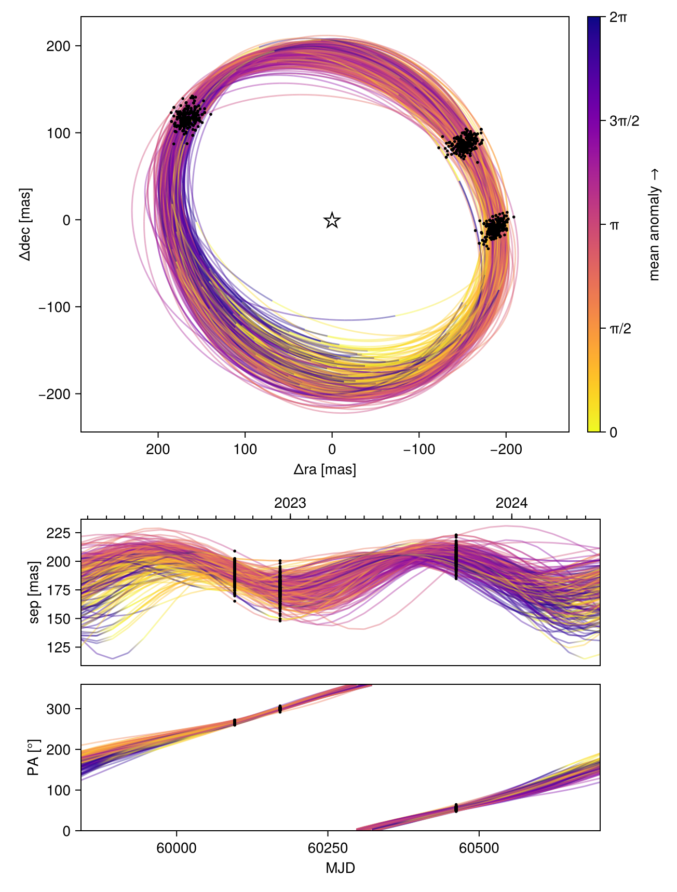

Fitting Interferometric Observables
In this tutorial, we fit a planet & orbit model to a sequence of interferometric observations. Closure phases and squared visibilities are supported.
We load the observations in OI-FITS format and model them as a point source orbiting a star.
Interferometer modelling is supported in Octofitter via the extension package OctofitterInterferometry. To install it, run pkg> add http://github.com/sefffal/Octofitter.jl:OctofitterInterferometry
using Octofitter
using OctofitterInterferometry
using Distributions
using CairoMakie
using PairPlots┌ Warning: Module Octofitter with build ID ffffffff-ffff-ffff-0000-0043bf598938 is missing from the cache.
│ This may mean Octofitter [daf3887e-d01a-44a1-9d7e-98f15c5d69c9] does not support precompilation but is imported by a module that does.
└ @ Base loading.jl:1948Download simulated JWST AMI observations from our examples folder on GitHub:
download("https://github.com/sefffal/Octofitter.jl/raw/main/examples/AMI_data/Sim_data_2023_1_.oifits", "Sim_data_2023_1_.oifits")
download("https://github.com/sefffal/Octofitter.jl/raw/main/examples/AMI_data/Sim_data_2023_2_.oifits", "Sim_data_2023_2_.oifits")
download("https://github.com/sefffal/Octofitter.jl/raw/main/examples/AMI_data/Sim_data_2024_1_.oifits", "Sim_data_2024_1_.oifits")"Sim_data_2024_1_.oifits"Create the likelihood object:
vis_like = InterferometryLikelihood(
(; filename="Sim_data_2023_1_.oifits", epoch=mjd("2023-06-01"), band=:F480M, use_vis2=false),
(; filename="Sim_data_2023_2_.oifits", epoch=mjd("2023-08-15"), band=:F480M, use_vis2=false),
(; filename="Sim_data_2024_1_.oifits", epoch=mjd("2024-06-01"), band=:F480M, use_vis2=false),
)OctofitterInterferometry.InterferometryLikelihood Table with 14 columns and 3 rows:
filename epoch band use_vis2 u ⋯
┌────────────────────────────────────────────────────────────────────────
1 │ Sim_data_2023_1_.oi… 60096.0 F480M false [-3.46641e5; 6.7596… ⋯
2 │ Sim_data_2023_2_.oi… 60171.0 F480M false [-3.46641e5; 6.7596… ⋯
3 │ Sim_data_2024_1_.oi… 60462.0 F480M false [-3.46641e5; 6.7596… ⋯Plot the closure phases:
fig = Makie.Figure()
ax = Axis(
fig[1,1],
xlabel="index",
ylabel="closure phase",
)
Makie.stem!(
vis_like.table.cps_data[1][:],
label="epoch 1",
)
Makie.stem!(
vis_like.table.cps_data[2][:],
label="epoch 2"
)
Makie.stem!(
vis_like.table.cps_data[3][:],
label="epoch 3"
)
Makie.Legend(fig[1,2], ax)
fig
@planet b Visual{KepOrbit} begin
a ~ truncated(Normal(2,0.1), lower=0)
e ~ truncated(Normal(0, 0.05),lower=0, upper=1.0)
i ~ Sine()
ω ~ UniformCircular()
Ω ~ UniformCircular()
# Our prior on the planet's photometry
# 0 +- 10% of stars brightness (assuming this is unit of data files)
F480M ~ truncated(Normal(0, 0.1),lower=0)
θ ~ UniformCircular()
tp = θ_at_epoch_to_tperi(system,b,60171) # reference epoch for θ. Choose an MJD date near your data.
end
@system Tutoria begin
M ~ truncated(Normal(1.5, 0.01), lower=0)
plx ~ truncated(Normal(100., 0.1), lower=0)
end vis_like bSystem model Tutoria
Derived:
Priors:
M Truncated(Distributions.Normal{Float64}(μ=1.5, σ=0.01); lower=0.0)
plx Truncated(Distributions.Normal{Float64}(μ=100.0, σ=0.1); lower=0.0)
Planet b
Derived:
ω, Ω, θ, tp,
Priors:
a Truncated(Distributions.Normal{Float64}(μ=2.0, σ=0.1); lower=0.0)
e Truncated(Distributions.Normal{Float64}(μ=0.0, σ=0.05); lower=0.0, upper=1.0)
i Sine()
ωy Distributions.Normal{Float64}(μ=0.0, σ=1.0)
ωx Distributions.Normal{Float64}(μ=0.0, σ=1.0)
Ωy Distributions.Normal{Float64}(μ=0.0, σ=1.0)
Ωx Distributions.Normal{Float64}(μ=0.0, σ=1.0)
F480M Truncated(Distributions.Normal{Float64}(μ=0.0, σ=0.1); lower=0.0)
θy Distributions.Normal{Float64}(μ=0.0, σ=1.0)
θx Distributions.Normal{Float64}(μ=0.0, σ=1.0)
Octofitter.UnitLengthPrior{:ωy, :ωx}: √(ωy^2+ωx^2) ~ LogNormal(log(1), 0.02)
Octofitter.UnitLengthPrior{:Ωy, :Ωx}: √(Ωy^2+Ωx^2) ~ LogNormal(log(1), 0.02)
Octofitter.UnitLengthPrior{:θy, :θx}: √(θy^2+θx^2) ~ LogNormal(log(1), 0.02)
OctofitterInterferometry.InterferometryLikelihood Table with 14 columns and 3 rows:
filename epoch band use_vis2 u ⋯
┌────────────────────────────────────────────────────────────────────────
1 │ Sim_data_2023_1_.oi… 60096.0 F480M false [-3.46641e5; 6.7596… ⋯
2 │ Sim_data_2023_2_.oi… 60171.0 F480M false [-3.46641e5; 6.7596… ⋯
3 │ Sim_data_2024_1_.oi… 60462.0 F480M false [-3.46641e5; 6.7596… ⋯
Create the model object and run octofit_pigeons:
model = Octofitter.LogDensityModel(Tutoria)
using Pigeons
results,pt = octofit_pigeons(model, n_rounds=10);[ Info: Determining initial positions using pathfinder
┌ Info: Determined initial position
│ initial_θ =
│ 12-element Vector{Float64}:
│ 1.5015188611695667
│ ⋮
│ initial_θ_nt = (M = 1.5015188611695667, plx = 100.00463956944853, planets = (b = (a = 1.8856513879912449, e = 0.15128793818140174, i = 0.6965183453429935, ωy = 0.21088693590201182, ωx = 0.9558855913468964, Ωy = 0.32923253693111754, Ωx = -0.9244323664702112, F480M = 0.000408862232917128, θy = 0.5001545967825166, θx = -0.842983802358694, ω = 1.3536552634348276, Ω = -1.2286570944229072, θ = -1.0353070640648883, tp = 59503.305116833784),))
└ initial_logpost = 187.03799521157512
[ Info: Determining initial positions using pathfinder
┌ Info: Determined initial position
│ initial_θ =
│ 12-element Vector{Float64}:
│ 1.4983629197187915
│ ⋮
│ initial_θ_nt = (M = 1.4983629197187915, plx = 99.99201130611512, planets = (b = (a = 2.0981856540196295, e = 0.09653345043353767, i = 0.5147426976211589, ωy = -0.1336224018612555, ωx = -0.9988237544857633, Ωy = -0.9188754915634114, Ωx = -0.3150675556349005, F480M = 0.00026954605191076254, θy = -0.21051650548397238, θx = -0.9555281713907959, ω = -1.7037864619419232, Ω = -2.8112714113438715, θ = -1.787646387449202, tp = 59779.122257760915),))
└ initial_logpost = 171.7333929418857
[ Info: Determining initial positions using pathfinder
┌ Info: Determined initial position
│ initial_θ =
│ 12-element Vector{Float64}:
│ 1.4999343028564085
│ ⋮
│ initial_θ_nt = (M = 1.4999343028564085, plx = 99.99678443012306, planets = (b = (a = 2.0081590121527877, e = 0.05915796586880735, i = 2.518271183205825, ωy = -0.7435059873801826, ωx = 0.6408496309848704, Ωy = 0.1182962836569032, Ωx = 0.9724176379304361, F480M = 0.00038215254464526495, θy = -0.4879494530024259, θx = -0.8528846005369694, ω = 2.4302136277037496, Ω = 1.4497394419174943, θ = -2.0904609683928523, tp = 60024.86984694218),))
└ initial_logpost = 181.52928231529998
[ Info: Determining initial positions using pathfinder
┌ Info: Determined initial position
│ initial_θ =
│ 12-element Vector{Float64}:
│ 1.5005059364401858
│ ⋮
│ initial_θ_nt = (M = 1.5005059364401858, plx = 100.00422052341074, planets = (b = (a = 2.0169825614800603, e = 0.03544344086810733, i = 1.519412353569664, ωy = 0.964086663452059, ωx = -0.21890112208059895, Ωy = 0.5187663210359412, Ωx = -0.8377364664242539, F480M = 0.00037517116345271945, θy = 0.48443016433784303, θx = -0.8518980259295414, ω = -0.22326997693646686, Ω = -1.0163442457668657, θ = -1.0537487968617754, tp = 59368.412936778775),))
└ initial_logpost = 177.47595973656448
[ Info: Determining initial positions using pathfinder
┌ Info: Determined initial position
│ initial_θ =
│ 12-element Vector{Float64}:
│ 1.5011888218294849
│ ⋮
│ initial_θ_nt = (M = 1.5011888218294849, plx = 100.00344430135006, planets = (b = (a = 1.7964299466256726, e = 0.15601417376950888, i = 2.5380640377147428, ωy = -0.3952710125985761, ωx = -0.8968069706141698, Ωy = -0.45456950806086777, Ωx = 0.8706022147045532, F480M = 0.00029479748256339556, θy = 0.4634361373120385, θx = -0.864552006040649, ω = -1.9859344976236202, Ω = 2.0519925753959423, θ = -1.0787325933939935, tp = 59555.51085926905),))
└ initial_logpost = 174.0326142294697
[ Info: Determining initial positions using pathfinder
┌ Info: Determined initial position
│ initial_θ =
│ 12-element Vector{Float64}:
│ 1.4941120574435458
│ ⋮
│ initial_θ_nt = (M = 1.4941120574435458, plx = 100.12545829730468, planets = (b = (a = 2.0344887011961053, e = 0.048470217812527056, i = 1.6286621132134542, ωy = -0.38315550765197764, ωx = 0.8655430568244599, Ωy = -0.9084255259675508, Ωx = -0.2878582518028638, F480M = 2.8178317827764138e-5, θy = 0.40543844535953116, θx = 0.8878941124199243, ω = 1.9875433021973354, Ω = -2.8347260858278633, θ = 1.142443187639448, tp = 59349.58378167904),))
└ initial_logpost = 161.83459289083135
[ Info: Determining initial positions using pathfinder
┌ Info: Determined initial position
│ initial_θ =
│ 12-element Vector{Float64}:
│ 1.5003456679932878
│ ⋮
│ initial_θ_nt = (M = 1.5003456679932878, plx = 100.003090677338, planets = (b = (a = 1.9916267570258117, e = 0.049679389151146724, i = 1.4398081229191064, ωy = -0.9786889544578505, ωx = 0.0693550945349536, Ωy = 0.5792590151059078, Ωx = -0.7932177256806484, F480M = 0.00038259282879381067, θy = 0.49204488648484296, θx = -0.8518627796411316, ω = 3.0708456150556422, Ω = -0.9400458211517491, θ = -1.0470023997251183, tp = 59842.19525001596),))
└ initial_logpost = 178.3493782008948
[ Info: Determining initial positions using pathfinder
┌ Info: Determined initial position
│ initial_θ =
│ 12-element Vector{Float64}:
│ 1.5004983705346262
│ ⋮
│ initial_θ_nt = (M = 1.5004983705346262, plx = 99.98763608849667, planets = (b = (a = 1.9826091138053001, e = 0.06328384846514541, i = 1.6815924580799573, ωy = -0.9849907253710307, ωx = 0.1272049167575306, Ωy = 0.46163514390466476, Ωx = -0.8761079183607549, F480M = 0.00010397244909511198, θy = -0.8622216174392775, θx = 0.4437730537349469, ω = 3.0131602399399435, Ω = -1.0858486225227444, θ = 2.6662657030612356, tp = 59493.07370419651),))
└ initial_logpost = 163.69057905972355
[ Info: Determining initial positions using pathfinder
┌ Info: Determined initial position
│ initial_θ =
│ 12-element Vector{Float64}:
│ 1.4998682677920485
│ ⋮
│ initial_θ_nt = (M = 1.4998682677920485, plx = 100.00091930783853, planets = (b = (a = 2.0835137619447015, e = 0.06385976724849507, i = 2.693145405387056, ωy = 0.9078698466003734, ωx = 0.36941391696248943, Ωy = 0.47283997938277395, Ωx = -0.8593457529453489, F480M = 0.0002978027296278848, θy = -0.8787817725969356, θx = 0.4420257900192709, ω = 0.3864420483248537, Ω = -1.0677746149926153, θ = 2.6755492349373813, tp = 59886.74297683968),))
└ initial_logpost = 173.81647311609447
[ Info: Determining initial positions using pathfinder
┌ Info: Determined initial position
│ initial_θ =
│ 12-element Vector{Float64}:
│ 1.5015666153739193
│ ⋮
│ initial_θ_nt = (M = 1.5015666153739193, plx = 100.00328626653211, planets = (b = (a = 1.8000482843607155, e = 0.16078896051497604, i = 2.5586879861288425, ωy = 0.41302205046133145, ωx = 0.8901952232562871, Ωy = 0.43237044289374793, Ωx = -0.8813170291677997, F480M = 0.0002995670736777922, θy = 0.4629685359846267, θx = -0.8639127671938976, ω = 1.1363875592058368, Ω = -1.1147003325058369, θ = -1.0788449433330343, tp = 59553.84149882104),))
└ initial_logpost = 174.05374147680348
[ Info: Determining initial positions using pathfinder
┌ Info: Determined initial position
│ initial_θ =
│ 12-element Vector{Float64}:
│ 1.4997778795131655
│ ⋮
│ initial_θ_nt = (M = 1.4997778795131655, plx = 99.98540109944928, planets = (b = (a = 2.0194450649711766, e = 0.06062055064425485, i = 0.6634358099999774, ωy = -0.2451147333283446, ωx = 0.9274771468014255, Ωy = 0.5779838126878231, Ωx = 0.812204166290872, F480M = 0.0004934198184066116, θy = 0.48345726953697565, θx = -0.860729820332607, ω = 1.8291702630417233, Ω = 0.9523116819037193, θ = -1.059027745905707, tp = 59836.57756336578),))
└ initial_logpost = 196.7351815929232
[ Info: Determining initial positions using pathfinder
┌ Info: Determined initial position
│ initial_θ =
│ 12-element Vector{Float64}:
│ 1.4997015675213201
│ ⋮
│ initial_θ_nt = (M = 1.4997015675213201, plx = 100.00048538851237, planets = (b = (a = 2.079639095401888, e = 0.06749551242936842, i = 1.6312462972555717, ωy = 0.850699996730935, ωx = -0.48835622950715646, Ωy = -0.9799616415032927, Ωx = -0.04535049566017343, F480M = 0.0005738218562722757, θy = 0.9495964974992751, θx = 0.24365583128882284, ω = -0.5211305545969029, Ω = -3.095347820621603, θ = 0.25117021407018486, tp = 59846.75990246048),))
└ initial_logpost = 173.94935639153869
[ Info: Determining initial positions using pathfinder
┌ Info: Determined initial position
│ initial_θ =
│ 12-element Vector{Float64}:
│ 1.5000124047980596
│ ⋮
│ initial_θ_nt = (M = 1.5000124047980596, plx = 100.01499482599418, planets = (b = (a = 2.019352589353906, e = 0.03981538434665761, i = 1.515162007283289, ωy = 0.965231168989364, ωx = 0.6599085021062998, Ωy = -0.47382964466556865, Ωx = -0.8037823247068225, F480M = 0.0003730337542794399, θy = -0.4794775248526594, θx = -1.2692013451471655, ω = 0.5996882406314592, Ω = -2.1034594304373964, θ = -1.9320010897303628, tp = 60087.55528238666),))
└ initial_logpost = 158.34477855901937
[ Info: Determining initial positions using pathfinder
┌ Error: Unexpected error occured running pathfinder
│ exception =
│ AssertionError: isfinite(phi_d) && isfinite(gphi)
│ Stacktrace:
│ [1] bisect!(ϕdϕ::LineSearches.var"#ϕdϕ#6"{Optim.ManifoldObjective{NLSolversBase.TwiceDifferentiable{Float64, Vector{Float64}, Matrix{Float64}, Vector{Float64}}}, Vector{Float64}, Vector{Float64}, Vector{Float64}}, alphas::Vector{Float64}, values::Vector{Float64}, slopes::Vector{Float64}, ia::Int64, ib::Int64, phi_lim::Float64, display::Int64)
│ @ LineSearches ~/.julia/packages/LineSearches/G1LRk/src/hagerzhang.jl:503
│ [2] (::LineSearches.HagerZhang{Float64, Base.RefValue{Bool}})(ϕ::Function, ϕdϕ::LineSearches.var"#ϕdϕ#6"{Optim.ManifoldObjective{NLSolversBase.TwiceDifferentiable{Float64, Vector{Float64}, Matrix{Float64}, Vector{Float64}}}, Vector{Float64}, Vector{Float64}, Vector{Float64}}, c::Float64, phi_0::Float64, dphi_0::Float64)
│ @ LineSearches ~/.julia/packages/LineSearches/G1LRk/src/hagerzhang.jl:201
│ [3] HagerZhang
│ @ ~/.julia/packages/LineSearches/G1LRk/src/hagerzhang.jl:101 [inlined]
│ [4] perform_linesearch!(state::Optim.LBFGSState{Vector{Float64}, Vector{Vector{Float64}}, Vector{Vector{Float64}}, Float64, Vector{Float64}}, method::Optim.LBFGS{Nothing, LineSearches.InitialHagerZhang{Float64}, LineSearches.HagerZhang{Float64, Base.RefValue{Bool}}, Optim.var"#20#22"}, d::Optim.ManifoldObjective{NLSolversBase.TwiceDifferentiable{Float64, Vector{Float64}, Matrix{Float64}, Vector{Float64}}})
│ @ Optim ~/.julia/packages/Optim/ZhuZN/src/utilities/perform_linesearch.jl:58
│ [5] update_state!(d::NLSolversBase.TwiceDifferentiable{Float64, Vector{Float64}, Matrix{Float64}, Vector{Float64}}, state::Optim.LBFGSState{Vector{Float64}, Vector{Vector{Float64}}, Vector{Vector{Float64}}, Float64, Vector{Float64}}, method::Optim.LBFGS{Nothing, LineSearches.InitialHagerZhang{Float64}, LineSearches.HagerZhang{Float64, Base.RefValue{Bool}}, Optim.var"#20#22"})
│ @ Optim ~/.julia/packages/Optim/ZhuZN/src/multivariate/solvers/first_order/l_bfgs.jl:204
│ [6] optimize(d::NLSolversBase.TwiceDifferentiable{Float64, Vector{Float64}, Matrix{Float64}, Vector{Float64}}, initial_x::Vector{Float64}, method::Optim.LBFGS{Nothing, LineSearches.InitialHagerZhang{Float64}, LineSearches.HagerZhang{Float64, Base.RefValue{Bool}}, Optim.var"#20#22"}, options::Optim.Options{Float64, OptimizationOptimJL.var"#_cb#12"{OptimizationBase.OptimizationCache{SciMLBase.OptimizationFunction{true, SciMLBase.NoAD, Pathfinder.var"#f#5"{Octofitter.LogDensityModelAny}, OptimizationBase.var"#23#30"{SciMLBase.OptimizationFunction{true, SciMLBase.NoAD, Pathfinder.var"#f#5"{Octofitter.LogDensityModelAny}, Pathfinder.var"#grad#6"{Octofitter.LogDensityModelAny}, Pathfinder.var"#hess#7"{Octofitter.LogDensityModelAny}, Nothing, Nothing, Nothing, Nothing, Nothing, Nothing, Nothing, Nothing, Nothing, typeof(SciMLBase.DEFAULT_OBSERVED_NO_TIME), Nothing, Nothing, Nothing, Nothing, Nothing, Nothing, Nothing, Nothing, Nothing}, OptimizationBase.ReInitCache{Vector{Float64}, Nothing}}, OptimizationBase.var"#24#31"{SciMLBase.OptimizationFunction{true, SciMLBase.NoAD, Pathfinder.var"#f#5"{Octofitter.LogDensityModelAny}, Pathfinder.var"#grad#6"{Octofitter.LogDensityModelAny}, Pathfinder.var"#hess#7"{Octofitter.LogDensityModelAny}, Nothing, Nothing, Nothing, Nothing, Nothing, Nothing, Nothing, Nothing, Nothing, typeof(SciMLBase.DEFAULT_OBSERVED_NO_TIME), Nothing, Nothing, Nothing, Nothing, Nothing, Nothing, Nothing, Nothing, Nothing}, OptimizationBase.ReInitCache{Vector{Float64}, Nothing}}, Nothing, Nothing, Nothing, Nothing, Nothing, Nothing, Nothing, Nothing, Nothing, typeof(SciMLBase.DEFAULT_OBSERVED_NO_TIME), Nothing, Nothing, Nothing, Nothing, Nothing, Nothing, Nothing, Nothing, Nothing}, OptimizationBase.ReInitCache{Vector{Float64}, Nothing}, Nothing, Nothing, Nothing, Nothing, Nothing, Optim.LBFGS{Nothing, LineSearches.InitialHagerZhang{Float64}, LineSearches.HagerZhang{Float64, Base.RefValue{Bool}}, Optim.var"#20#22"}, Base.Iterators.Cycle{Tuple{OptimizationBase.NullData}}, Bool, Pathfinder.OptimizationCallback{Vector{Vector{Float64}}, Vector{Float64}, Vector{Vector{Float64}}, Pathfinder.var"#∇f#9"{SciMLBase.OptimizationFunction{true, SciMLBase.NoAD, Pathfinder.var"#f#5"{Octofitter.LogDensityModelAny}, Pathfinder.var"#grad#6"{Octofitter.LogDensityModelAny}, Pathfinder.var"#hess#7"{Octofitter.LogDensityModelAny}, Nothing, Nothing, Nothing, Nothing, Nothing, Nothing, Nothing, Nothing, Nothing, typeof(SciMLBase.DEFAULT_OBSERVED_NO_TIME), Nothing, Nothing, Nothing, Nothing, Nothing, Nothing, Nothing, Nothing, Nothing}}, Base.UUID, Nothing}, Nothing}}}, state::Optim.LBFGSState{Vector{Float64}, Vector{Vector{Float64}}, Vector{Vector{Float64}}, Float64, Vector{Float64}})
│ @ Optim ~/.julia/packages/Optim/ZhuZN/src/multivariate/optimize/optimize.jl:54
│ [7] optimize(d::NLSolversBase.TwiceDifferentiable{Float64, Vector{Float64}, Matrix{Float64}, Vector{Float64}}, initial_x::Vector{Float64}, method::Optim.LBFGS{Nothing, LineSearches.InitialHagerZhang{Float64}, LineSearches.HagerZhang{Float64, Base.RefValue{Bool}}, Optim.var"#20#22"}, options::Optim.Options{Float64, OptimizationOptimJL.var"#_cb#12"{OptimizationBase.OptimizationCache{SciMLBase.OptimizationFunction{true, SciMLBase.NoAD, Pathfinder.var"#f#5"{Octofitter.LogDensityModelAny}, OptimizationBase.var"#23#30"{SciMLBase.OptimizationFunction{true, SciMLBase.NoAD, Pathfinder.var"#f#5"{Octofitter.LogDensityModelAny}, Pathfinder.var"#grad#6"{Octofitter.LogDensityModelAny}, Pathfinder.var"#hess#7"{Octofitter.LogDensityModelAny}, Nothing, Nothing, Nothing, Nothing, Nothing, Nothing, Nothing, Nothing, Nothing, typeof(SciMLBase.DEFAULT_OBSERVED_NO_TIME), Nothing, Nothing, Nothing, Nothing, Nothing, Nothing, Nothing, Nothing, Nothing}, OptimizationBase.ReInitCache{Vector{Float64}, Nothing}}, OptimizationBase.var"#24#31"{SciMLBase.OptimizationFunction{true, SciMLBase.NoAD, Pathfinder.var"#f#5"{Octofitter.LogDensityModelAny}, Pathfinder.var"#grad#6"{Octofitter.LogDensityModelAny}, Pathfinder.var"#hess#7"{Octofitter.LogDensityModelAny}, Nothing, Nothing, Nothing, Nothing, Nothing, Nothing, Nothing, Nothing, Nothing, typeof(SciMLBase.DEFAULT_OBSERVED_NO_TIME), Nothing, Nothing, Nothing, Nothing, Nothing, Nothing, Nothing, Nothing, Nothing}, OptimizationBase.ReInitCache{Vector{Float64}, Nothing}}, Nothing, Nothing, Nothing, Nothing, Nothing, Nothing, Nothing, Nothing, Nothing, typeof(SciMLBase.DEFAULT_OBSERVED_NO_TIME), Nothing, Nothing, Nothing, Nothing, Nothing, Nothing, Nothing, Nothing, Nothing}, OptimizationBase.ReInitCache{Vector{Float64}, Nothing}, Nothing, Nothing, Nothing, Nothing, Nothing, Optim.LBFGS{Nothing, LineSearches.InitialHagerZhang{Float64}, LineSearches.HagerZhang{Float64, Base.RefValue{Bool}}, Optim.var"#20#22"}, Base.Iterators.Cycle{Tuple{OptimizationBase.NullData}}, Bool, Pathfinder.OptimizationCallback{Vector{Vector{Float64}}, Vector{Float64}, Vector{Vector{Float64}}, Pathfinder.var"#∇f#9"{SciMLBase.OptimizationFunction{true, SciMLBase.NoAD, Pathfinder.var"#f#5"{Octofitter.LogDensityModelAny}, Pathfinder.var"#grad#6"{Octofitter.LogDensityModelAny}, Pathfinder.var"#hess#7"{Octofitter.LogDensityModelAny}, Nothing, Nothing, Nothing, Nothing, Nothing, Nothing, Nothing, Nothing, Nothing, typeof(SciMLBase.DEFAULT_OBSERVED_NO_TIME), Nothing, Nothing, Nothing, Nothing, Nothing, Nothing, Nothing, Nothing, Nothing}}, Base.UUID, Nothing}, Nothing}}})
│ @ Optim ~/.julia/packages/Optim/ZhuZN/src/multivariate/optimize/optimize.jl:36
│ [8] __solve(cache::OptimizationBase.OptimizationCache{SciMLBase.OptimizationFunction{true, SciMLBase.NoAD, Pathfinder.var"#f#5"{Octofitter.LogDensityModelAny}, OptimizationBase.var"#23#30"{SciMLBase.OptimizationFunction{true, SciMLBase.NoAD, Pathfinder.var"#f#5"{Octofitter.LogDensityModelAny}, Pathfinder.var"#grad#6"{Octofitter.LogDensityModelAny}, Pathfinder.var"#hess#7"{Octofitter.LogDensityModelAny}, Nothing, Nothing, Nothing, Nothing, Nothing, Nothing, Nothing, Nothing, Nothing, typeof(SciMLBase.DEFAULT_OBSERVED_NO_TIME), Nothing, Nothing, Nothing, Nothing, Nothing, Nothing, Nothing, Nothing, Nothing}, OptimizationBase.ReInitCache{Vector{Float64}, Nothing}}, OptimizationBase.var"#24#31"{SciMLBase.OptimizationFunction{true, SciMLBase.NoAD, Pathfinder.var"#f#5"{Octofitter.LogDensityModelAny}, Pathfinder.var"#grad#6"{Octofitter.LogDensityModelAny}, Pathfinder.var"#hess#7"{Octofitter.LogDensityModelAny}, Nothing, Nothing, Nothing, Nothing, Nothing, Nothing, Nothing, Nothing, Nothing, typeof(SciMLBase.DEFAULT_OBSERVED_NO_TIME), Nothing, Nothing, Nothing, Nothing, Nothing, Nothing, Nothing, Nothing, Nothing}, OptimizationBase.ReInitCache{Vector{Float64}, Nothing}}, Nothing, Nothing, Nothing, Nothing, Nothing, Nothing, Nothing, Nothing, Nothing, typeof(SciMLBase.DEFAULT_OBSERVED_NO_TIME), Nothing, Nothing, Nothing, Nothing, Nothing, Nothing, Nothing, Nothing, Nothing}, OptimizationBase.ReInitCache{Vector{Float64}, Nothing}, Nothing, Nothing, Nothing, Nothing, Nothing, Optim.LBFGS{Nothing, LineSearches.InitialHagerZhang{Float64}, LineSearches.HagerZhang{Float64, Base.RefValue{Bool}}, Optim.var"#20#22"}, Base.Iterators.Cycle{Tuple{OptimizationBase.NullData}}, Bool, Pathfinder.OptimizationCallback{Vector{Vector{Float64}}, Vector{Float64}, Vector{Vector{Float64}}, Pathfinder.var"#∇f#9"{SciMLBase.OptimizationFunction{true, SciMLBase.NoAD, Pathfinder.var"#f#5"{Octofitter.LogDensityModelAny}, Pathfinder.var"#grad#6"{Octofitter.LogDensityModelAny}, Pathfinder.var"#hess#7"{Octofitter.LogDensityModelAny}, Nothing, Nothing, Nothing, Nothing, Nothing, Nothing, Nothing, Nothing, Nothing, typeof(SciMLBase.DEFAULT_OBSERVED_NO_TIME), Nothing, Nothing, Nothing, Nothing, Nothing, Nothing, Nothing, Nothing, Nothing}}, Base.UUID, Nothing}, Nothing})
│ @ OptimizationOptimJL ~/.julia/packages/OptimizationOptimJL/hDX5k/src/OptimizationOptimJL.jl:224
│ [9] solve!
│ @ ~/.julia/packages/SciMLBase/rR75x/src/solve.jl:188 [inlined]
│ [10] #solve#627
│ @ ~/.julia/packages/SciMLBase/rR75x/src/solve.jl:96 [inlined]
│ [11] optimize_with_trace(prob::SciMLBase.OptimizationProblem{true, SciMLBase.OptimizationFunction{true, SciMLBase.NoAD, Pathfinder.var"#f#5"{Octofitter.LogDensityModelAny}, Pathfinder.var"#grad#6"{Octofitter.LogDensityModelAny}, Pathfinder.var"#hess#7"{Octofitter.LogDensityModelAny}, Nothing, Nothing, Nothing, Nothing, Nothing, Nothing, Nothing, Nothing, Nothing, typeof(SciMLBase.DEFAULT_OBSERVED_NO_TIME), Nothing, Nothing, Nothing, Nothing, Nothing, Nothing, Nothing, Nothing, Nothing}, Vector{Float64}, Nothing, Nothing, Nothing, Nothing, Nothing, Nothing, Nothing, @Kwargs{}}, optimizer::Optim.LBFGS{Nothing, LineSearches.InitialHagerZhang{Float64}, LineSearches.HagerZhang{Float64, Base.RefValue{Bool}}, Optim.var"#20#22"}; progress_name::String, progress_id::Base.UUID, maxiters::Int64, callback::Nothing, fail_on_nonfinite::Bool, kwargs::@Kwargs{progress::Bool, reltol::Float64})
│ @ Pathfinder ~/.julia/packages/Pathfinder/OduAC/src/optimize.jl:46
│ [12] optimize_with_trace
│ @ ~/.julia/packages/Pathfinder/OduAC/src/optimize.jl:20 [inlined]
│ [13] _pathfinder(rng::SplittableRandoms.SplittableRandom, prob::SciMLBase.OptimizationProblem{true, SciMLBase.OptimizationFunction{true, SciMLBase.NoAD, Pathfinder.var"#f#5"{Octofitter.LogDensityModelAny}, Pathfinder.var"#grad#6"{Octofitter.LogDensityModelAny}, Pathfinder.var"#hess#7"{Octofitter.LogDensityModelAny}, Nothing, Nothing, Nothing, Nothing, Nothing, Nothing, Nothing, Nothing, Nothing, typeof(SciMLBase.DEFAULT_OBSERVED_NO_TIME), Nothing, Nothing, Nothing, Nothing, Nothing, Nothing, Nothing, Nothing, Nothing}, Vector{Float64}, Nothing, Nothing, Nothing, Nothing, Nothing, Nothing, Nothing, @Kwargs{}}, logp::Pathfinder.var"#logp#23"{SciMLBase.OptimizationProblem{true, SciMLBase.OptimizationFunction{true, SciMLBase.NoAD, Pathfinder.var"#f#5"{Octofitter.LogDensityModelAny}, Pathfinder.var"#grad#6"{Octofitter.LogDensityModelAny}, Pathfinder.var"#hess#7"{Octofitter.LogDensityModelAny}, Nothing, Nothing, Nothing, Nothing, Nothing, Nothing, Nothing, Nothing, Nothing, typeof(SciMLBase.DEFAULT_OBSERVED_NO_TIME), Nothing, Nothing, Nothing, Nothing, Nothing, Nothing, Nothing, Nothing, Nothing}, Vector{Float64}, Nothing, Nothing, Nothing, Nothing, Nothing, Nothing, Nothing, @Kwargs{}}}; history_length::Int64, optimizer::Optim.LBFGS{Nothing, LineSearches.InitialHagerZhang{Float64}, LineSearches.HagerZhang{Float64, Base.RefValue{Bool}}, Optim.var"#20#22"}, ndraws_elbo::Int64, executor::Transducers.SequentialEx{@NamedTuple{}}, kwargs::@Kwargs{progress_name::String, progress_id::Base.UUID, progress::Bool, maxiters::Int64, reltol::Float64})
│ @ Pathfinder ~/.julia/packages/Pathfinder/OduAC/src/singlepath.jl:288
│ [14] _pathfinder
│ @ ~/.julia/packages/Pathfinder/OduAC/src/singlepath.jl:277 [inlined]
│ [15] _pathfinder_try_until_succeed(rng::SplittableRandoms.SplittableRandom, prob::SciMLBase.OptimizationProblem{true, SciMLBase.OptimizationFunction{true, SciMLBase.NoAD, Pathfinder.var"#f#5"{Octofitter.LogDensityModelAny}, Pathfinder.var"#grad#6"{Octofitter.LogDensityModelAny}, Pathfinder.var"#hess#7"{Octofitter.LogDensityModelAny}, Nothing, Nothing, Nothing, Nothing, Nothing, Nothing, Nothing, Nothing, Nothing, typeof(SciMLBase.DEFAULT_OBSERVED_NO_TIME), Nothing, Nothing, Nothing, Nothing, Nothing, Nothing, Nothing, Nothing, Nothing}, Vector{Float64}, Nothing, Nothing, Nothing, Nothing, Nothing, Nothing, Nothing, @Kwargs{}}, logp::Pathfinder.var"#logp#23"{SciMLBase.OptimizationProblem{true, SciMLBase.OptimizationFunction{true, SciMLBase.NoAD, Pathfinder.var"#f#5"{Octofitter.LogDensityModelAny}, Pathfinder.var"#grad#6"{Octofitter.LogDensityModelAny}, Pathfinder.var"#hess#7"{Octofitter.LogDensityModelAny}, Nothing, Nothing, Nothing, Nothing, Nothing, Nothing, Nothing, Nothing, Nothing, typeof(SciMLBase.DEFAULT_OBSERVED_NO_TIME), Nothing, Nothing, Nothing, Nothing, Nothing, Nothing, Nothing, Nothing, Nothing}, Vector{Float64}, Nothing, Nothing, Nothing, Nothing, Nothing, Nothing, Nothing, @Kwargs{}}}; ntries::Int64, init_scale::Int64, init_sampler::Octofitter.CallableAny, allow_mutating_init::Bool, kwargs::@Kwargs{history_length::Int64, optimizer::Optim.LBFGS{Nothing, LineSearches.InitialHagerZhang{Float64}, LineSearches.HagerZhang{Float64, Base.RefValue{Bool}}, Optim.var"#20#22"}, progress_id::Base.UUID, ndraws_elbo::Int64, progress::Bool, maxiters::Int64, reltol::Float64})
│ @ Pathfinder ~/.julia/packages/Pathfinder/OduAC/src/singlepath.jl:263
│ [16] _pathfinder_try_until_succeed
│ @ ~/.julia/packages/Pathfinder/OduAC/src/singlepath.jl:251 [inlined]
│ [17] #22
│ @ ~/.julia/packages/Pathfinder/OduAC/src/singlepath.jl:180 [inlined]
│ [18] progress(f::Pathfinder.var"#22#24"{SplittableRandoms.SplittableRandom, Int64, Optim.LBFGS{Nothing, LineSearches.InitialHagerZhang{Float64}, LineSearches.HagerZhang{Float64, Base.RefValue{Bool}}, Optim.var"#20#22"}, Int64, @Kwargs{init_sampler::Octofitter.CallableAny, allow_mutating_init::Bool, progress::Bool, maxiters::Int64, reltol::Float64}, SciMLBase.OptimizationProblem{true, SciMLBase.OptimizationFunction{true, SciMLBase.NoAD, Pathfinder.var"#f#5"{Octofitter.LogDensityModelAny}, Pathfinder.var"#grad#6"{Octofitter.LogDensityModelAny}, Pathfinder.var"#hess#7"{Octofitter.LogDensityModelAny}, Nothing, Nothing, Nothing, Nothing, Nothing, Nothing, Nothing, Nothing, Nothing, typeof(SciMLBase.DEFAULT_OBSERVED_NO_TIME), Nothing, Nothing, Nothing, Nothing, Nothing, Nothing, Nothing, Nothing, Nothing}, Vector{Float64}, Nothing, Nothing, Nothing, Nothing, Nothing, Nothing, Nothing, @Kwargs{}}, Pathfinder.var"#logp#23"{SciMLBase.OptimizationProblem{true, SciMLBase.OptimizationFunction{true, SciMLBase.NoAD, Pathfinder.var"#f#5"{Octofitter.LogDensityModelAny}, Pathfinder.var"#grad#6"{Octofitter.LogDensityModelAny}, Pathfinder.var"#hess#7"{Octofitter.LogDensityModelAny}, Nothing, Nothing, Nothing, Nothing, Nothing, Nothing, Nothing, Nothing, Nothing, typeof(SciMLBase.DEFAULT_OBSERVED_NO_TIME), Nothing, Nothing, Nothing, Nothing, Nothing, Nothing, Nothing, Nothing, Nothing}, Vector{Float64}, Nothing, Nothing, Nothing, Nothing, Nothing, Nothing, Nothing, @Kwargs{}}}}; name::String)
│ @ ProgressLogging ~/.julia/packages/ProgressLogging/6KXlp/src/ProgressLogging.jl:262
│ [19] progress
│ @ ~/.julia/packages/ProgressLogging/6KXlp/src/ProgressLogging.jl:258 [inlined]
│ [20] pathfinder(prob::SciMLBase.OptimizationProblem{true, SciMLBase.OptimizationFunction{true, SciMLBase.NoAD, Pathfinder.var"#f#5"{Octofitter.LogDensityModelAny}, Pathfinder.var"#grad#6"{Octofitter.LogDensityModelAny}, Pathfinder.var"#hess#7"{Octofitter.LogDensityModelAny}, Nothing, Nothing, Nothing, Nothing, Nothing, Nothing, Nothing, Nothing, Nothing, typeof(SciMLBase.DEFAULT_OBSERVED_NO_TIME), Nothing, Nothing, Nothing, Nothing, Nothing, Nothing, Nothing, Nothing, Nothing}, Vector{Float64}, Nothing, Nothing, Nothing, Nothing, Nothing, Nothing, Nothing, @Kwargs{}}; rng::SplittableRandoms.SplittableRandom, history_length::Int64, optimizer::Optim.LBFGS{Nothing, LineSearches.InitialHagerZhang{Float64}, LineSearches.HagerZhang{Float64, Base.RefValue{Bool}}, Optim.var"#20#22"}, ndraws_elbo::Int64, ndraws::Int64, input::Octofitter.LogDensityModelAny, kwargs::@Kwargs{init_sampler::Octofitter.CallableAny, allow_mutating_init::Bool, progress::Bool, maxiters::Int64, reltol::Float64})
│ @ Pathfinder ~/.julia/packages/Pathfinder/OduAC/src/singlepath.jl:179
│ [21] pathfinder
│ @ ~/.julia/packages/Pathfinder/OduAC/src/singlepath.jl:165 [inlined]
│ [22] #pathfinder#20
│ @ ~/.julia/packages/Pathfinder/OduAC/src/singlepath.jl:163 [inlined]
│ [23] pathfinder
│ @ ~/.julia/packages/Pathfinder/OduAC/src/singlepath.jl:142 [inlined]
│ [24] pathfinder(ℓ::Octofitter.LogDensityModelAny; input::Octofitter.LogDensityModelAny, kwargs::@Kwargs{init_sampler::Octofitter.CallableAny, progress::Bool, maxiters::Int64, reltol::Float64, rng::SplittableRandoms.SplittableRandom})
│ @ Pathfinder ~/.julia/packages/Pathfinder/OduAC/src/singlepath.jl:140
│ [25] pathfinder
│ @ ~/.julia/packages/Pathfinder/OduAC/src/singlepath.jl:136 [inlined]
│ [26] (::OctofitterPigeonsExt.var"#3#6"{SplittableRandoms.SplittableRandom, Octofitter.LogDensityModelAny, Int64, OctofitterPigeonsExt.var"#2#5"{Octofitter.LogDensityModel{Octofitter.var"#ℓπcallback#61"{System{Priors, Derived, Tuple{OctofitterInterferometry.InterferometryLikelihood{Table{@NamedTuple{filename::String, epoch::Float64, band::Symbol, use_vis2::Bool, u::Matrix{Float64}, v::Matrix{Float64}, eff_wave::Vector{Float64}, cps_data::Matrix{Float64}, dcps::Matrix{Float64}, vis2_data::Matrix{Float64}, dvis2::Matrix{Float64}, index_cps1::Vector{Int64}, index_cps2::Vector{Int64}, index_cps3::Vector{Int64}}, 1, @NamedTuple{filename::Vector{String}, epoch::Vector{Float64}, band::Vector{Symbol}, use_vis2::Vector{Bool}, u::Vector{Matrix{Float64}}, v::Vector{Matrix{Float64}}, eff_wave::Vector{Vector{Float64}}, cps_data::Vector{Matrix{Float64}}, dcps::Vector{Matrix{Float64}}, vis2_data::Vector{Matrix{Float64}}, dvis2::Vector{Matrix{Float64}}, index_cps1::Vector{Vector{Int64}}, index_cps2::Vector{Vector{Int64}}, index_cps3::Vector{Vector{Int64}}}}}}, @NamedTuple{b::Planet{Visual{KepOrbit}, Priors, Derived, Tuple{Octofitter.UnitLengthPrior{:ωy, :ωx}, Octofitter.UnitLengthPrior{:Ωy, :Ωx}, Octofitter.UnitLengthPrior{:θy, :θx}}}}}, RuntimeGeneratedFunctions.RuntimeGeneratedFunction{(:arr,), Octofitter.var"#_RGF_ModTag", Octofitter.var"#_RGF_ModTag", (0x0b47bdb7, 0x99b43c97, 0x669a4df1, 0xe4f3d536, 0xe6b1d6fa), Expr}, RuntimeGeneratedFunctions.RuntimeGeneratedFunction{(:arr,), Octofitter.var"#_RGF_ModTag", Octofitter.var"#_RGF_ModTag", (0x4d42a813, 0xcaaf8f7e, 0xac9d83df, 0x4f8e0fcd, 0x9fe2040a), Expr}, RuntimeGeneratedFunctions.RuntimeGeneratedFunction{(:arr,), Octofitter.var"#_RGF_ModTag", Octofitter.var"#_RGF_ModTag", (0x5528444a, 0x5ff7c78c, 0x4a9df17b, 0x6bff04a0, 0x249f9f79), Expr}, RuntimeGeneratedFunctions.RuntimeGeneratedFunction{(:system, :θ_system), Octofitter.var"#_RGF_ModTag", Octofitter.var"#_RGF_ModTag", (0xa2b64611, 0xb000e850, 0x473951ee, 0xd949d205, 0xc54b05a9), Expr}}, Octofitter.var"#57#69"{ForwardDiff.GradientConfig{ForwardDiff.Tag{Octofitter.var"#ℓπcallback#61"{System{Priors, Derived, Tuple{OctofitterInterferometry.InterferometryLikelihood{Table{@NamedTuple{filename::String, epoch::Float64, band::Symbol, use_vis2::Bool, u::Matrix{Float64}, v::Matrix{Float64}, eff_wave::Vector{Float64}, cps_data::Matrix{Float64}, dcps::Matrix{Float64}, vis2_data::Matrix{Float64}, dvis2::Matrix{Float64}, index_cps1::Vector{Int64}, index_cps2::Vector{Int64}, index_cps3::Vector{Int64}}, 1, @NamedTuple{filename::Vector{String}, epoch::Vector{Float64}, band::Vector{Symbol}, use_vis2::Vector{Bool}, u::Vector{Matrix{Float64}}, v::Vector{Matrix{Float64}}, eff_wave::Vector{Vector{Float64}}, cps_data::Vector{Matrix{Float64}}, dcps::Vector{Matrix{Float64}}, vis2_data::Vector{Matrix{Float64}}, dvis2::Vector{Matrix{Float64}}, index_cps1::Vector{Vector{Int64}}, index_cps2::Vector{Vector{Int64}}, index_cps3::Vector{Vector{Int64}}}}}}, @NamedTuple{b::Planet{Visual{KepOrbit}, Priors, Derived, Tuple{Octofitter.UnitLengthPrior{:ωy, :ωx}, Octofitter.UnitLengthPrior{:Ωy, :Ωx}, Octofitter.UnitLengthPrior{:θy, :θx}}}}}, RuntimeGeneratedFunctions.RuntimeGeneratedFunction{(:arr,), Octofitter.var"#_RGF_ModTag", Octofitter.var"#_RGF_ModTag", (0x0b47bdb7, 0x99b43c97, 0x669a4df1, 0xe4f3d536, 0xe6b1d6fa), Expr}, RuntimeGeneratedFunctions.RuntimeGeneratedFunction{(:arr,), Octofitter.var"#_RGF_ModTag", Octofitter.var"#_RGF_ModTag", (0x4d42a813, 0xcaaf8f7e, 0xac9d83df, 0x4f8e0fcd, 0x9fe2040a), Expr}, RuntimeGeneratedFunctions.RuntimeGeneratedFunction{(:arr,), Octofitter.var"#_RGF_ModTag", Octofitter.var"#_RGF_ModTag", (0x5528444a, 0x5ff7c78c, 0x4a9df17b, 0x6bff04a0, 0x249f9f79), Expr}, RuntimeGeneratedFunctions.RuntimeGeneratedFunction{(:system, :θ_system), Octofitter.var"#_RGF_ModTag", Octofitter.var"#_RGF_ModTag", (0xa2b64611, 0xb000e850, 0x473951ee, 0xd949d205, 0xc54b05a9), Expr}}, Float64}, Float64, 12, Vector{ForwardDiff.Dual{ForwardDiff.Tag{Octofitter.var"#ℓπcallback#61"{System{Priors, Derived, Tuple{OctofitterInterferometry.InterferometryLikelihood{Table{@NamedTuple{filename::String, epoch::Float64, band::Symbol, use_vis2::Bool, u::Matrix{Float64}, v::Matrix{Float64}, eff_wave::Vector{Float64}, cps_data::Matrix{Float64}, dcps::Matrix{Float64}, vis2_data::Matrix{Float64}, dvis2::Matrix{Float64}, index_cps1::Vector{Int64}, index_cps2::Vector{Int64}, index_cps3::Vector{Int64}}, 1, @NamedTuple{filename::Vector{String}, epoch::Vector{Float64}, band::Vector{Symbol}, use_vis2::Vector{Bool}, u::Vector{Matrix{Float64}}, v::Vector{Matrix{Float64}}, eff_wave::Vector{Vector{Float64}}, cps_data::Vector{Matrix{Float64}}, dcps::Vector{Matrix{Float64}}, vis2_data::Vector{Matrix{Float64}}, dvis2::Vector{Matrix{Float64}}, index_cps1::Vector{Vector{Int64}}, index_cps2::Vector{Vector{Int64}}, index_cps3::Vector{Vector{Int64}}}}}}, @NamedTuple{b::Planet{Visual{KepOrbit}, Priors, Derived, Tuple{Octofitter.UnitLengthPrior{:ωy, :ωx}, Octofitter.UnitLengthPrior{:Ωy, :Ωx}, Octofitter.UnitLengthPrior{:θy, :θx}}}}}, RuntimeGeneratedFunctions.RuntimeGeneratedFunction{(:arr,), Octofitter.var"#_RGF_ModTag", Octofitter.var"#_RGF_ModTag", (0x0b47bdb7, 0x99b43c97, 0x669a4df1, 0xe4f3d536, 0xe6b1d6fa), Expr}, RuntimeGeneratedFunctions.RuntimeGeneratedFunction{(:arr,), Octofitter.var"#_RGF_ModTag", Octofitter.var"#_RGF_ModTag", (0x4d42a813, 0xcaaf8f7e, 0xac9d83df, 0x4f8e0fcd, 0x9fe2040a), Expr}, RuntimeGeneratedFunctions.RuntimeGeneratedFunction{(:arr,), Octofitter.var"#_RGF_ModTag", Octofitter.var"#_RGF_ModTag", (0x5528444a, 0x5ff7c78c, 0x4a9df17b, 0x6bff04a0, 0x249f9f79), Expr}, RuntimeGeneratedFunctions.RuntimeGeneratedFunction{(:system, :θ_system), Octofitter.var"#_RGF_ModTag", Octofitter.var"#_RGF_ModTag", (0xa2b64611, 0xb000e850, 0x473951ee, 0xd949d205, 0xc54b05a9), Expr}}, Float64}, Float64, 12}}}, Vector{DiffResults.MutableDiffResult{1, Float64, Tuple{Vector{Float64}}}}, Octofitter.var"#ℓπcallback#61"{System{Priors, Derived, Tuple{OctofitterInterferometry.InterferometryLikelihood{Table{@NamedTuple{filename::String, epoch::Float64, band::Symbol, use_vis2::Bool, u::Matrix{Float64}, v::Matrix{Float64}, eff_wave::Vector{Float64}, cps_data::Matrix{Float64}, dcps::Matrix{Float64}, vis2_data::Matrix{Float64}, dvis2::Matrix{Float64}, index_cps1::Vector{Int64}, index_cps2::Vector{Int64}, index_cps3::Vector{Int64}}, 1, @NamedTuple{filename::Vector{String}, epoch::Vector{Float64}, band::Vector{Symbol}, use_vis2::Vector{Bool}, u::Vector{Matrix{Float64}}, v::Vector{Matrix{Float64}}, eff_wave::Vector{Vector{Float64}}, cps_data::Vector{Matrix{Float64}}, dcps::Vector{Matrix{Float64}}, vis2_data::Vector{Matrix{Float64}}, dvis2::Vector{Matrix{Float64}}, index_cps1::Vector{Vector{Int64}}, index_cps2::Vector{Vector{Int64}}, index_cps3::Vector{Vector{Int64}}}}}}, @NamedTuple{b::Planet{Visual{KepOrbit}, Priors, Derived, Tuple{Octofitter.UnitLengthPrior{:ωy, :ωx}, Octofitter.UnitLengthPrior{:Ωy, :Ωx}, Octofitter.UnitLengthPrior{:θy, :θx}}}}}, RuntimeGeneratedFunctions.RuntimeGeneratedFunction{(:arr,), Octofitter.var"#_RGF_ModTag", Octofitter.var"#_RGF_ModTag", (0x0b47bdb7, 0x99b43c97, 0x669a4df1, 0xe4f3d536, 0xe6b1d6fa), Expr}, RuntimeGeneratedFunctions.RuntimeGeneratedFunction{(:arr,), Octofitter.var"#_RGF_ModTag", Octofitter.var"#_RGF_ModTag", (0x4d42a813, 0xcaaf8f7e, 0xac9d83df, 0x4f8e0fcd, 0x9fe2040a), Expr}, RuntimeGeneratedFunctions.RuntimeGeneratedFunction{(:arr,), Octofitter.var"#_RGF_ModTag", Octofitter.var"#_RGF_ModTag", (0x5528444a, 0x5ff7c78c, 0x4a9df17b, 0x6bff04a0, 0x249f9f79), Expr}, RuntimeGeneratedFunctions.RuntimeGeneratedFunction{(:system, :θ_system), Octofitter.var"#_RGF_ModTag", Octofitter.var"#_RGF_ModTag", (0xa2b64611, 0xb000e850, 0x473951ee, 0xd949d205, 0xc54b05a9), Expr}}}, System{Priors, Derived, Tuple{OctofitterInterferometry.InterferometryLikelihood{Table{@NamedTuple{filename::String, epoch::Float64, band::Symbol, use_vis2::Bool, u::Matrix{Float64}, v::Matrix{Float64}, eff_wave::Vector{Float64}, cps_data::Matrix{Float64}, dcps::Matrix{Float64}, vis2_data::Matrix{Float64}, dvis2::Matrix{Float64}, index_cps1::Vector{Int64}, index_cps2::Vector{Int64}, index_cps3::Vector{Int64}}, 1, @NamedTuple{filename::Vector{String}, epoch::Vector{Float64}, band::Vector{Symbol}, use_vis2::Vector{Bool}, u::Vector{Matrix{Float64}}, v::Vector{Matrix{Float64}}, eff_wave::Vector{Vector{Float64}}, cps_data::Vector{Matrix{Float64}}, dcps::Vector{Matrix{Float64}}, vis2_data::Vector{Matrix{Float64}}, dvis2::Vector{Matrix{Float64}}, index_cps1::Vector{Vector{Int64}}, index_cps2::Vector{Vector{Int64}}, index_cps3::Vector{Vector{Int64}}}}}}, @NamedTuple{b::Planet{Visual{KepOrbit}, Priors, Derived, Tuple{Octofitter.UnitLengthPrior{:ωy, :ωx}, Octofitter.UnitLengthPrior{:Ωy, :Ωx}, Octofitter.UnitLengthPrior{:θy, :θx}}}}}, Octofitter.var"#49#60"{Vector{Distributions.Distribution{Distributions.Univariate, Distributions.Continuous}}}, RuntimeGeneratedFunctions.RuntimeGeneratedFunction{(:arr,), Octofitter.var"#_RGF_ModTag", Octofitter.var"#_RGF_ModTag", (0x4d42a813, 0xcaaf8f7e, 0xac9d83df, 0x4f8e0fcd, 0x9fe2040a), Expr}, RuntimeGeneratedFunctions.RuntimeGeneratedFunction{(:arr,), Octofitter.var"#_RGF_ModTag", Octofitter.var"#_RGF_ModTag", (0x0b47bdb7, 0x99b43c97, 0x669a4df1, 0xe4f3d536, 0xe6b1d6fa), Expr}}, Int64}})()
│ @ OctofitterPigeonsExt ~/work/Octofitter.jl/Octofitter.jl/ext/OctofitterPigeonsExt/OctofitterPigeonsExt.jl:51
│ [27] with_logstate(f::Function, logstate::Any)
│ @ Base.CoreLogging ./logging.jl:515
│ [28] with_logger
│ @ ./logging.jl:627 [inlined]
│ [29] initialization(model::Octofitter.LogDensityModel{Octofitter.var"#ℓπcallback#61"{System{Priors, Derived, Tuple{OctofitterInterferometry.InterferometryLikelihood{Table{@NamedTuple{filename::String, epoch::Float64, band::Symbol, use_vis2::Bool, u::Matrix{Float64}, v::Matrix{Float64}, eff_wave::Vector{Float64}, cps_data::Matrix{Float64}, dcps::Matrix{Float64}, vis2_data::Matrix{Float64}, dvis2::Matrix{Float64}, index_cps1::Vector{Int64}, index_cps2::Vector{Int64}, index_cps3::Vector{Int64}}, 1, @NamedTuple{filename::Vector{String}, epoch::Vector{Float64}, band::Vector{Symbol}, use_vis2::Vector{Bool}, u::Vector{Matrix{Float64}}, v::Vector{Matrix{Float64}}, eff_wave::Vector{Vector{Float64}}, cps_data::Vector{Matrix{Float64}}, dcps::Vector{Matrix{Float64}}, vis2_data::Vector{Matrix{Float64}}, dvis2::Vector{Matrix{Float64}}, index_cps1::Vector{Vector{Int64}}, index_cps2::Vector{Vector{Int64}}, index_cps3::Vector{Vector{Int64}}}}}}, @NamedTuple{b::Planet{Visual{KepOrbit}, Priors, Derived, Tuple{Octofitter.UnitLengthPrior{:ωy, :ωx}, Octofitter.UnitLengthPrior{:Ωy, :Ωx}, Octofitter.UnitLengthPrior{:θy, :θx}}}}}, RuntimeGeneratedFunctions.RuntimeGeneratedFunction{(:arr,), Octofitter.var"#_RGF_ModTag", Octofitter.var"#_RGF_ModTag", (0x0b47bdb7, 0x99b43c97, 0x669a4df1, 0xe4f3d536, 0xe6b1d6fa), Expr}, RuntimeGeneratedFunctions.RuntimeGeneratedFunction{(:arr,), Octofitter.var"#_RGF_ModTag", Octofitter.var"#_RGF_ModTag", (0x4d42a813, 0xcaaf8f7e, 0xac9d83df, 0x4f8e0fcd, 0x9fe2040a), Expr}, RuntimeGeneratedFunctions.RuntimeGeneratedFunction{(:arr,), Octofitter.var"#_RGF_ModTag", Octofitter.var"#_RGF_ModTag", (0x5528444a, 0x5ff7c78c, 0x4a9df17b, 0x6bff04a0, 0x249f9f79), Expr}, RuntimeGeneratedFunctions.RuntimeGeneratedFunction{(:system, :θ_system), Octofitter.var"#_RGF_ModTag", Octofitter.var"#_RGF_ModTag", (0xa2b64611, 0xb000e850, 0x473951ee, 0xd949d205, 0xc54b05a9), Expr}}, Octofitter.var"#57#69"{ForwardDiff.GradientConfig{ForwardDiff.Tag{Octofitter.var"#ℓπcallback#61"{System{Priors, Derived, Tuple{OctofitterInterferometry.InterferometryLikelihood{Table{@NamedTuple{filename::String, epoch::Float64, band::Symbol, use_vis2::Bool, u::Matrix{Float64}, v::Matrix{Float64}, eff_wave::Vector{Float64}, cps_data::Matrix{Float64}, dcps::Matrix{Float64}, vis2_data::Matrix{Float64}, dvis2::Matrix{Float64}, index_cps1::Vector{Int64}, index_cps2::Vector{Int64}, index_cps3::Vector{Int64}}, 1, @NamedTuple{filename::Vector{String}, epoch::Vector{Float64}, band::Vector{Symbol}, use_vis2::Vector{Bool}, u::Vector{Matrix{Float64}}, v::Vector{Matrix{Float64}}, eff_wave::Vector{Vector{Float64}}, cps_data::Vector{Matrix{Float64}}, dcps::Vector{Matrix{Float64}}, vis2_data::Vector{Matrix{Float64}}, dvis2::Vector{Matrix{Float64}}, index_cps1::Vector{Vector{Int64}}, index_cps2::Vector{Vector{Int64}}, index_cps3::Vector{Vector{Int64}}}}}}, @NamedTuple{b::Planet{Visual{KepOrbit}, Priors, Derived, Tuple{Octofitter.UnitLengthPrior{:ωy, :ωx}, Octofitter.UnitLengthPrior{:Ωy, :Ωx}, Octofitter.UnitLengthPrior{:θy, :θx}}}}}, RuntimeGeneratedFunctions.RuntimeGeneratedFunction{(:arr,), Octofitter.var"#_RGF_ModTag", Octofitter.var"#_RGF_ModTag", (0x0b47bdb7, 0x99b43c97, 0x669a4df1, 0xe4f3d536, 0xe6b1d6fa), Expr}, RuntimeGeneratedFunctions.RuntimeGeneratedFunction{(:arr,), Octofitter.var"#_RGF_ModTag", Octofitter.var"#_RGF_ModTag", (0x4d42a813, 0xcaaf8f7e, 0xac9d83df, 0x4f8e0fcd, 0x9fe2040a), Expr}, RuntimeGeneratedFunctions.RuntimeGeneratedFunction{(:arr,), Octofitter.var"#_RGF_ModTag", Octofitter.var"#_RGF_ModTag", (0x5528444a, 0x5ff7c78c, 0x4a9df17b, 0x6bff04a0, 0x249f9f79), Expr}, RuntimeGeneratedFunctions.RuntimeGeneratedFunction{(:system, :θ_system), Octofitter.var"#_RGF_ModTag", Octofitter.var"#_RGF_ModTag", (0xa2b64611, 0xb000e850, 0x473951ee, 0xd949d205, 0xc54b05a9), Expr}}, Float64}, Float64, 12, Vector{ForwardDiff.Dual{ForwardDiff.Tag{Octofitter.var"#ℓπcallback#61"{System{Priors, Derived, Tuple{OctofitterInterferometry.InterferometryLikelihood{Table{@NamedTuple{filename::String, epoch::Float64, band::Symbol, use_vis2::Bool, u::Matrix{Float64}, v::Matrix{Float64}, eff_wave::Vector{Float64}, cps_data::Matrix{Float64}, dcps::Matrix{Float64}, vis2_data::Matrix{Float64}, dvis2::Matrix{Float64}, index_cps1::Vector{Int64}, index_cps2::Vector{Int64}, index_cps3::Vector{Int64}}, 1, @NamedTuple{filename::Vector{String}, epoch::Vector{Float64}, band::Vector{Symbol}, use_vis2::Vector{Bool}, u::Vector{Matrix{Float64}}, v::Vector{Matrix{Float64}}, eff_wave::Vector{Vector{Float64}}, cps_data::Vector{Matrix{Float64}}, dcps::Vector{Matrix{Float64}}, vis2_data::Vector{Matrix{Float64}}, dvis2::Vector{Matrix{Float64}}, index_cps1::Vector{Vector{Int64}}, index_cps2::Vector{Vector{Int64}}, index_cps3::Vector{Vector{Int64}}}}}}, @NamedTuple{b::Planet{Visual{KepOrbit}, Priors, Derived, Tuple{Octofitter.UnitLengthPrior{:ωy, :ωx}, Octofitter.UnitLengthPrior{:Ωy, :Ωx}, Octofitter.UnitLengthPrior{:θy, :θx}}}}}, RuntimeGeneratedFunctions.RuntimeGeneratedFunction{(:arr,), Octofitter.var"#_RGF_ModTag", Octofitter.var"#_RGF_ModTag", (0x0b47bdb7, 0x99b43c97, 0x669a4df1, 0xe4f3d536, 0xe6b1d6fa), Expr}, RuntimeGeneratedFunctions.RuntimeGeneratedFunction{(:arr,), Octofitter.var"#_RGF_ModTag", Octofitter.var"#_RGF_ModTag", (0x4d42a813, 0xcaaf8f7e, 0xac9d83df, 0x4f8e0fcd, 0x9fe2040a), Expr}, RuntimeGeneratedFunctions.RuntimeGeneratedFunction{(:arr,), Octofitter.var"#_RGF_ModTag", Octofitter.var"#_RGF_ModTag", (0x5528444a, 0x5ff7c78c, 0x4a9df17b, 0x6bff04a0, 0x249f9f79), Expr}, RuntimeGeneratedFunctions.RuntimeGeneratedFunction{(:system, :θ_system), Octofitter.var"#_RGF_ModTag", Octofitter.var"#_RGF_ModTag", (0xa2b64611, 0xb000e850, 0x473951ee, 0xd949d205, 0xc54b05a9), Expr}}, Float64}, Float64, 12}}}, Vector{DiffResults.MutableDiffResult{1, Float64, Tuple{Vector{Float64}}}}, Octofitter.var"#ℓπcallback#61"{System{Priors, Derived, Tuple{OctofitterInterferometry.InterferometryLikelihood{Table{@NamedTuple{filename::String, epoch::Float64, band::Symbol, use_vis2::Bool, u::Matrix{Float64}, v::Matrix{Float64}, eff_wave::Vector{Float64}, cps_data::Matrix{Float64}, dcps::Matrix{Float64}, vis2_data::Matrix{Float64}, dvis2::Matrix{Float64}, index_cps1::Vector{Int64}, index_cps2::Vector{Int64}, index_cps3::Vector{Int64}}, 1, @NamedTuple{filename::Vector{String}, epoch::Vector{Float64}, band::Vector{Symbol}, use_vis2::Vector{Bool}, u::Vector{Matrix{Float64}}, v::Vector{Matrix{Float64}}, eff_wave::Vector{Vector{Float64}}, cps_data::Vector{Matrix{Float64}}, dcps::Vector{Matrix{Float64}}, vis2_data::Vector{Matrix{Float64}}, dvis2::Vector{Matrix{Float64}}, index_cps1::Vector{Vector{Int64}}, index_cps2::Vector{Vector{Int64}}, index_cps3::Vector{Vector{Int64}}}}}}, @NamedTuple{b::Planet{Visual{KepOrbit}, Priors, Derived, Tuple{Octofitter.UnitLengthPrior{:ωy, :ωx}, Octofitter.UnitLengthPrior{:Ωy, :Ωx}, Octofitter.UnitLengthPrior{:θy, :θx}}}}}, RuntimeGeneratedFunctions.RuntimeGeneratedFunction{(:arr,), Octofitter.var"#_RGF_ModTag", Octofitter.var"#_RGF_ModTag", (0x0b47bdb7, 0x99b43c97, 0x669a4df1, 0xe4f3d536, 0xe6b1d6fa), Expr}, RuntimeGeneratedFunctions.RuntimeGeneratedFunction{(:arr,), Octofitter.var"#_RGF_ModTag", Octofitter.var"#_RGF_ModTag", (0x4d42a813, 0xcaaf8f7e, 0xac9d83df, 0x4f8e0fcd, 0x9fe2040a), Expr}, RuntimeGeneratedFunctions.RuntimeGeneratedFunction{(:arr,), Octofitter.var"#_RGF_ModTag", Octofitter.var"#_RGF_ModTag", (0x5528444a, 0x5ff7c78c, 0x4a9df17b, 0x6bff04a0, 0x249f9f79), Expr}, RuntimeGeneratedFunctions.RuntimeGeneratedFunction{(:system, :θ_system), Octofitter.var"#_RGF_ModTag", Octofitter.var"#_RGF_ModTag", (0xa2b64611, 0xb000e850, 0x473951ee, 0xd949d205, 0xc54b05a9), Expr}}}, System{Priors, Derived, Tuple{OctofitterInterferometry.InterferometryLikelihood{Table{@NamedTuple{filename::String, epoch::Float64, band::Symbol, use_vis2::Bool, u::Matrix{Float64}, v::Matrix{Float64}, eff_wave::Vector{Float64}, cps_data::Matrix{Float64}, dcps::Matrix{Float64}, vis2_data::Matrix{Float64}, dvis2::Matrix{Float64}, index_cps1::Vector{Int64}, index_cps2::Vector{Int64}, index_cps3::Vector{Int64}}, 1, @NamedTuple{filename::Vector{String}, epoch::Vector{Float64}, band::Vector{Symbol}, use_vis2::Vector{Bool}, u::Vector{Matrix{Float64}}, v::Vector{Matrix{Float64}}, eff_wave::Vector{Vector{Float64}}, cps_data::Vector{Matrix{Float64}}, dcps::Vector{Matrix{Float64}}, vis2_data::Vector{Matrix{Float64}}, dvis2::Vector{Matrix{Float64}}, index_cps1::Vector{Vector{Int64}}, index_cps2::Vector{Vector{Int64}}, index_cps3::Vector{Vector{Int64}}}}}}, @NamedTuple{b::Planet{Visual{KepOrbit}, Priors, Derived, Tuple{Octofitter.UnitLengthPrior{:ωy, :ωx}, Octofitter.UnitLengthPrior{:Ωy, :Ωx}, Octofitter.UnitLengthPrior{:θy, :θx}}}}}, Octofitter.var"#49#60"{Vector{Distributions.Distribution{Distributions.Univariate, Distributions.Continuous}}}, RuntimeGeneratedFunctions.RuntimeGeneratedFunction{(:arr,), Octofitter.var"#_RGF_ModTag", Octofitter.var"#_RGF_ModTag", (0x4d42a813, 0xcaaf8f7e, 0xac9d83df, 0x4f8e0fcd, 0x9fe2040a), Expr}, RuntimeGeneratedFunctions.RuntimeGeneratedFunction{(:arr,), Octofitter.var"#_RGF_ModTag", Octofitter.var"#_RGF_ModTag", (0x0b47bdb7, 0x99b43c97, 0x669a4df1, 0xe4f3d536, 0xe6b1d6fa), Expr}}, rng::SplittableRandoms.SplittableRandom, chain_no::Int64)
│ @ OctofitterPigeonsExt ~/work/Octofitter.jl/Octofitter.jl/ext/OctofitterPigeonsExt/OctofitterPigeonsExt.jl:50
│ [30] initialization
│ @ ~/.julia/packages/Pigeons/6MDk5/src/replicas/replicas.jl:101 [inlined]
│ [31] #137
│ @ ./none:0 [inlined]
│ [32] iterate
│ @ ./generator.jl:47 [inlined]
│ [33] collect_to!(dest::Vector{Vector{Float64}}, itr::Base.Generator{Base.OneTo{Int64}, Pigeons.var"#137#139"{UnitRange{Int64}, Pigeons.Inputs{Octofitter.LogDensityModel{Octofitter.var"#ℓπcallback#61"{System{Priors, Derived, Tuple{OctofitterInterferometry.InterferometryLikelihood{Table{@NamedTuple{filename::String, epoch::Float64, band::Symbol, use_vis2::Bool, u::Matrix{Float64}, v::Matrix{Float64}, eff_wave::Vector{Float64}, cps_data::Matrix{Float64}, dcps::Matrix{Float64}, vis2_data::Matrix{Float64}, dvis2::Matrix{Float64}, index_cps1::Vector{Int64}, index_cps2::Vector{Int64}, index_cps3::Vector{Int64}}, 1, @NamedTuple{filename::Vector{String}, epoch::Vector{Float64}, band::Vector{Symbol}, use_vis2::Vector{Bool}, u::Vector{Matrix{Float64}}, v::Vector{Matrix{Float64}}, eff_wave::Vector{Vector{Float64}}, cps_data::Vector{Matrix{Float64}}, dcps::Vector{Matrix{Float64}}, vis2_data::Vector{Matrix{Float64}}, dvis2::Vector{Matrix{Float64}}, index_cps1::Vector{Vector{Int64}}, index_cps2::Vector{Vector{Int64}}, index_cps3::Vector{Vector{Int64}}}}}}, @NamedTuple{b::Planet{Visual{KepOrbit}, Priors, Derived, Tuple{Octofitter.UnitLengthPrior{:ωy, :ωx}, Octofitter.UnitLengthPrior{:Ωy, :Ωx}, Octofitter.UnitLengthPrior{:θy, :θx}}}}}, RuntimeGeneratedFunctions.RuntimeGeneratedFunction{(:arr,), Octofitter.var"#_RGF_ModTag", Octofitter.var"#_RGF_ModTag", (0x0b47bdb7, 0x99b43c97, 0x669a4df1, 0xe4f3d536, 0xe6b1d6fa), Expr}, RuntimeGeneratedFunctions.RuntimeGeneratedFunction{(:arr,), Octofitter.var"#_RGF_ModTag", Octofitter.var"#_RGF_ModTag", (0x4d42a813, 0xcaaf8f7e, 0xac9d83df, 0x4f8e0fcd, 0x9fe2040a), Expr}, RuntimeGeneratedFunctions.RuntimeGeneratedFunction{(:arr,), Octofitter.var"#_RGF_ModTag", Octofitter.var"#_RGF_ModTag", (0x5528444a, 0x5ff7c78c, 0x4a9df17b, 0x6bff04a0, 0x249f9f79), Expr}, RuntimeGeneratedFunctions.RuntimeGeneratedFunction{(:system, :θ_system), Octofitter.var"#_RGF_ModTag", Octofitter.var"#_RGF_ModTag", (0xa2b64611, 0xb000e850, 0x473951ee, 0xd949d205, 0xc54b05a9), Expr}}, Octofitter.var"#57#69"{ForwardDiff.GradientConfig{ForwardDiff.Tag{Octofitter.var"#ℓπcallback#61"{System{Priors, Derived, Tuple{OctofitterInterferometry.InterferometryLikelihood{Table{@NamedTuple{filename::String, epoch::Float64, band::Symbol, use_vis2::Bool, u::Matrix{Float64}, v::Matrix{Float64}, eff_wave::Vector{Float64}, cps_data::Matrix{Float64}, dcps::Matrix{Float64}, vis2_data::Matrix{Float64}, dvis2::Matrix{Float64}, index_cps1::Vector{Int64}, index_cps2::Vector{Int64}, index_cps3::Vector{Int64}}, 1, @NamedTuple{filename::Vector{String}, epoch::Vector{Float64}, band::Vector{Symbol}, use_vis2::Vector{Bool}, u::Vector{Matrix{Float64}}, v::Vector{Matrix{Float64}}, eff_wave::Vector{Vector{Float64}}, cps_data::Vector{Matrix{Float64}}, dcps::Vector{Matrix{Float64}}, vis2_data::Vector{Matrix{Float64}}, dvis2::Vector{Matrix{Float64}}, index_cps1::Vector{Vector{Int64}}, index_cps2::Vector{Vector{Int64}}, index_cps3::Vector{Vector{Int64}}}}}}, @NamedTuple{b::Planet{Visual{KepOrbit}, Priors, Derived, Tuple{Octofitter.UnitLengthPrior{:ωy, :ωx}, Octofitter.UnitLengthPrior{:Ωy, :Ωx}, Octofitter.UnitLengthPrior{:θy, :θx}}}}}, RuntimeGeneratedFunctions.RuntimeGeneratedFunction{(:arr,), Octofitter.var"#_RGF_ModTag", Octofitter.var"#_RGF_ModTag", (0x0b47bdb7, 0x99b43c97, 0x669a4df1, 0xe4f3d536, 0xe6b1d6fa), Expr}, RuntimeGeneratedFunctions.RuntimeGeneratedFunction{(:arr,), Octofitter.var"#_RGF_ModTag", Octofitter.var"#_RGF_ModTag", (0x4d42a813, 0xcaaf8f7e, 0xac9d83df, 0x4f8e0fcd, 0x9fe2040a), Expr}, RuntimeGeneratedFunctions.RuntimeGeneratedFunction{(:arr,), Octofitter.var"#_RGF_ModTag", Octofitter.var"#_RGF_ModTag", (0x5528444a, 0x5ff7c78c, 0x4a9df17b, 0x6bff04a0, 0x249f9f79), Expr}, RuntimeGeneratedFunctions.RuntimeGeneratedFunction{(:system, :θ_system), Octofitter.var"#_RGF_ModTag", Octofitter.var"#_RGF_ModTag", (0xa2b64611, 0xb000e850, 0x473951ee, 0xd949d205, 0xc54b05a9), Expr}}, Float64}, Float64, 12, Vector{ForwardDiff.Dual{ForwardDiff.Tag{Octofitter.var"#ℓπcallback#61"{System{Priors, Derived, Tuple{OctofitterInterferometry.InterferometryLikelihood{Table{@NamedTuple{filename::String, epoch::Float64, band::Symbol, use_vis2::Bool, u::Matrix{Float64}, v::Matrix{Float64}, eff_wave::Vector{Float64}, cps_data::Matrix{Float64}, dcps::Matrix{Float64}, vis2_data::Matrix{Float64}, dvis2::Matrix{Float64}, index_cps1::Vector{Int64}, index_cps2::Vector{Int64}, index_cps3::Vector{Int64}}, 1, @NamedTuple{filename::Vector{String}, epoch::Vector{Float64}, band::Vector{Symbol}, use_vis2::Vector{Bool}, u::Vector{Matrix{Float64}}, v::Vector{Matrix{Float64}}, eff_wave::Vector{Vector{Float64}}, cps_data::Vector{Matrix{Float64}}, dcps::Vector{Matrix{Float64}}, vis2_data::Vector{Matrix{Float64}}, dvis2::Vector{Matrix{Float64}}, index_cps1::Vector{Vector{Int64}}, index_cps2::Vector{Vector{Int64}}, index_cps3::Vector{Vector{Int64}}}}}}, @NamedTuple{b::Planet{Visual{KepOrbit}, Priors, Derived, Tuple{Octofitter.UnitLengthPrior{:ωy, :ωx}, Octofitter.UnitLengthPrior{:Ωy, :Ωx}, Octofitter.UnitLengthPrior{:θy, :θx}}}}}, RuntimeGeneratedFunctions.RuntimeGeneratedFunction{(:arr,), Octofitter.var"#_RGF_ModTag", Octofitter.var"#_RGF_ModTag", (0x0b47bdb7, 0x99b43c97, 0x669a4df1, 0xe4f3d536, 0xe6b1d6fa), Expr}, RuntimeGeneratedFunctions.RuntimeGeneratedFunction{(:arr,), Octofitter.var"#_RGF_ModTag", Octofitter.var"#_RGF_ModTag", (0x4d42a813, 0xcaaf8f7e, 0xac9d83df, 0x4f8e0fcd, 0x9fe2040a), Expr}, RuntimeGeneratedFunctions.RuntimeGeneratedFunction{(:arr,), Octofitter.var"#_RGF_ModTag", Octofitter.var"#_RGF_ModTag", (0x5528444a, 0x5ff7c78c, 0x4a9df17b, 0x6bff04a0, 0x249f9f79), Expr}, RuntimeGeneratedFunctions.RuntimeGeneratedFunction{(:system, :θ_system), Octofitter.var"#_RGF_ModTag", Octofitter.var"#_RGF_ModTag", (0xa2b64611, 0xb000e850, 0x473951ee, 0xd949d205, 0xc54b05a9), Expr}}, Float64}, Float64, 12}}}, Vector{DiffResults.MutableDiffResult{1, Float64, Tuple{Vector{Float64}}}}, Octofitter.var"#ℓπcallback#61"{System{Priors, Derived, Tuple{OctofitterInterferometry.InterferometryLikelihood{Table{@NamedTuple{filename::String, epoch::Float64, band::Symbol, use_vis2::Bool, u::Matrix{Float64}, v::Matrix{Float64}, eff_wave::Vector{Float64}, cps_data::Matrix{Float64}, dcps::Matrix{Float64}, vis2_data::Matrix{Float64}, dvis2::Matrix{Float64}, index_cps1::Vector{Int64}, index_cps2::Vector{Int64}, index_cps3::Vector{Int64}}, 1, @NamedTuple{filename::Vector{String}, epoch::Vector{Float64}, band::Vector{Symbol}, use_vis2::Vector{Bool}, u::Vector{Matrix{Float64}}, v::Vector{Matrix{Float64}}, eff_wave::Vector{Vector{Float64}}, cps_data::Vector{Matrix{Float64}}, dcps::Vector{Matrix{Float64}}, vis2_data::Vector{Matrix{Float64}}, dvis2::Vector{Matrix{Float64}}, index_cps1::Vector{Vector{Int64}}, index_cps2::Vector{Vector{Int64}}, index_cps3::Vector{Vector{Int64}}}}}}, @NamedTuple{b::Planet{Visual{KepOrbit}, Priors, Derived, Tuple{Octofitter.UnitLengthPrior{:ωy, :ωx}, Octofitter.UnitLengthPrior{:Ωy, :Ωx}, Octofitter.UnitLengthPrior{:θy, :θx}}}}}, RuntimeGeneratedFunctions.RuntimeGeneratedFunction{(:arr,), Octofitter.var"#_RGF_ModTag", Octofitter.var"#_RGF_ModTag", (0x0b47bdb7, 0x99b43c97, 0x669a4df1, 0xe4f3d536, 0xe6b1d6fa), Expr}, RuntimeGeneratedFunctions.RuntimeGeneratedFunction{(:arr,), Octofitter.var"#_RGF_ModTag", Octofitter.var"#_RGF_ModTag", (0x4d42a813, 0xcaaf8f7e, 0xac9d83df, 0x4f8e0fcd, 0x9fe2040a), Expr}, RuntimeGeneratedFunctions.RuntimeGeneratedFunction{(:arr,), Octofitter.var"#_RGF_ModTag", Octofitter.var"#_RGF_ModTag", (0x5528444a, 0x5ff7c78c, 0x4a9df17b, 0x6bff04a0, 0x249f9f79), Expr}, RuntimeGeneratedFunctions.RuntimeGeneratedFunction{(:system, :θ_system), Octofitter.var"#_RGF_ModTag", Octofitter.var"#_RGF_ModTag", (0xa2b64611, 0xb000e850, 0x473951ee, 0xd949d205, 0xc54b05a9), Expr}}}, System{Priors, Derived, Tuple{OctofitterInterferometry.InterferometryLikelihood{Table{@NamedTuple{filename::String, epoch::Float64, band::Symbol, use_vis2::Bool, u::Matrix{Float64}, v::Matrix{Float64}, eff_wave::Vector{Float64}, cps_data::Matrix{Float64}, dcps::Matrix{Float64}, vis2_data::Matrix{Float64}, dvis2::Matrix{Float64}, index_cps1::Vector{Int64}, index_cps2::Vector{Int64}, index_cps3::Vector{Int64}}, 1, @NamedTuple{filename::Vector{String}, epoch::Vector{Float64}, band::Vector{Symbol}, use_vis2::Vector{Bool}, u::Vector{Matrix{Float64}}, v::Vector{Matrix{Float64}}, eff_wave::Vector{Vector{Float64}}, cps_data::Vector{Matrix{Float64}}, dcps::Vector{Matrix{Float64}}, vis2_data::Vector{Matrix{Float64}}, dvis2::Vector{Matrix{Float64}}, index_cps1::Vector{Vector{Int64}}, index_cps2::Vector{Vector{Int64}}, index_cps3::Vector{Vector{Int64}}}}}}, @NamedTuple{b::Planet{Visual{KepOrbit}, Priors, Derived, Tuple{Octofitter.UnitLengthPrior{:ωy, :ωx}, Octofitter.UnitLengthPrior{:Ωy, :Ωx}, Octofitter.UnitLengthPrior{:θy, :θx}}}}}, Octofitter.var"#49#60"{Vector{Distributions.Distribution{Distributions.Univariate, Distributions.Continuous}}}, RuntimeGeneratedFunctions.RuntimeGeneratedFunction{(:arr,), Octofitter.var"#_RGF_ModTag", Octofitter.var"#_RGF_ModTag", (0x4d42a813, 0xcaaf8f7e, 0xac9d83df, 0x4f8e0fcd, 0x9fe2040a), Expr}, RuntimeGeneratedFunctions.RuntimeGeneratedFunction{(:arr,), Octofitter.var"#_RGF_ModTag", Octofitter.var"#_RGF_ModTag", (0x0b47bdb7, 0x99b43c97, 0x669a4df1, 0xe4f3d536, 0xe6b1d6fa), Expr}}, Pigeons.GaussianReference, Nothing, Nothing, Nothing}, Vector{SplittableRandoms.SplittableRandom}}}, offs::Int64, st::Int64)
│ @ Base ./array.jl:892
│ [34] collect_to_with_first!(dest::Vector{Vector{Float64}}, v1::Vector{Float64}, itr::Base.Generator{Base.OneTo{Int64}, Pigeons.var"#137#139"{UnitRange{Int64}, Pigeons.Inputs{Octofitter.LogDensityModel{Octofitter.var"#ℓπcallback#61"{System{Priors, Derived, Tuple{OctofitterInterferometry.InterferometryLikelihood{Table{@NamedTuple{filename::String, epoch::Float64, band::Symbol, use_vis2::Bool, u::Matrix{Float64}, v::Matrix{Float64}, eff_wave::Vector{Float64}, cps_data::Matrix{Float64}, dcps::Matrix{Float64}, vis2_data::Matrix{Float64}, dvis2::Matrix{Float64}, index_cps1::Vector{Int64}, index_cps2::Vector{Int64}, index_cps3::Vector{Int64}}, 1, @NamedTuple{filename::Vector{String}, epoch::Vector{Float64}, band::Vector{Symbol}, use_vis2::Vector{Bool}, u::Vector{Matrix{Float64}}, v::Vector{Matrix{Float64}}, eff_wave::Vector{Vector{Float64}}, cps_data::Vector{Matrix{Float64}}, dcps::Vector{Matrix{Float64}}, vis2_data::Vector{Matrix{Float64}}, dvis2::Vector{Matrix{Float64}}, index_cps1::Vector{Vector{Int64}}, index_cps2::Vector{Vector{Int64}}, index_cps3::Vector{Vector{Int64}}}}}}, @NamedTuple{b::Planet{Visual{KepOrbit}, Priors, Derived, Tuple{Octofitter.UnitLengthPrior{:ωy, :ωx}, Octofitter.UnitLengthPrior{:Ωy, :Ωx}, Octofitter.UnitLengthPrior{:θy, :θx}}}}}, RuntimeGeneratedFunctions.RuntimeGeneratedFunction{(:arr,), Octofitter.var"#_RGF_ModTag", Octofitter.var"#_RGF_ModTag", (0x0b47bdb7, 0x99b43c97, 0x669a4df1, 0xe4f3d536, 0xe6b1d6fa), Expr}, RuntimeGeneratedFunctions.RuntimeGeneratedFunction{(:arr,), Octofitter.var"#_RGF_ModTag", Octofitter.var"#_RGF_ModTag", (0x4d42a813, 0xcaaf8f7e, 0xac9d83df, 0x4f8e0fcd, 0x9fe2040a), Expr}, RuntimeGeneratedFunctions.RuntimeGeneratedFunction{(:arr,), Octofitter.var"#_RGF_ModTag", Octofitter.var"#_RGF_ModTag", (0x5528444a, 0x5ff7c78c, 0x4a9df17b, 0x6bff04a0, 0x249f9f79), Expr}, RuntimeGeneratedFunctions.RuntimeGeneratedFunction{(:system, :θ_system), Octofitter.var"#_RGF_ModTag", Octofitter.var"#_RGF_ModTag", (0xa2b64611, 0xb000e850, 0x473951ee, 0xd949d205, 0xc54b05a9), Expr}}, Octofitter.var"#57#69"{ForwardDiff.GradientConfig{ForwardDiff.Tag{Octofitter.var"#ℓπcallback#61"{System{Priors, Derived, Tuple{OctofitterInterferometry.InterferometryLikelihood{Table{@NamedTuple{filename::String, epoch::Float64, band::Symbol, use_vis2::Bool, u::Matrix{Float64}, v::Matrix{Float64}, eff_wave::Vector{Float64}, cps_data::Matrix{Float64}, dcps::Matrix{Float64}, vis2_data::Matrix{Float64}, dvis2::Matrix{Float64}, index_cps1::Vector{Int64}, index_cps2::Vector{Int64}, index_cps3::Vector{Int64}}, 1, @NamedTuple{filename::Vector{String}, epoch::Vector{Float64}, band::Vector{Symbol}, use_vis2::Vector{Bool}, u::Vector{Matrix{Float64}}, v::Vector{Matrix{Float64}}, eff_wave::Vector{Vector{Float64}}, cps_data::Vector{Matrix{Float64}}, dcps::Vector{Matrix{Float64}}, vis2_data::Vector{Matrix{Float64}}, dvis2::Vector{Matrix{Float64}}, index_cps1::Vector{Vector{Int64}}, index_cps2::Vector{Vector{Int64}}, index_cps3::Vector{Vector{Int64}}}}}}, @NamedTuple{b::Planet{Visual{KepOrbit}, Priors, Derived, Tuple{Octofitter.UnitLengthPrior{:ωy, :ωx}, Octofitter.UnitLengthPrior{:Ωy, :Ωx}, Octofitter.UnitLengthPrior{:θy, :θx}}}}}, RuntimeGeneratedFunctions.RuntimeGeneratedFunction{(:arr,), Octofitter.var"#_RGF_ModTag", Octofitter.var"#_RGF_ModTag", (0x0b47bdb7, 0x99b43c97, 0x669a4df1, 0xe4f3d536, 0xe6b1d6fa), Expr}, RuntimeGeneratedFunctions.RuntimeGeneratedFunction{(:arr,), Octofitter.var"#_RGF_ModTag", Octofitter.var"#_RGF_ModTag", (0x4d42a813, 0xcaaf8f7e, 0xac9d83df, 0x4f8e0fcd, 0x9fe2040a), Expr}, RuntimeGeneratedFunctions.RuntimeGeneratedFunction{(:arr,), Octofitter.var"#_RGF_ModTag", Octofitter.var"#_RGF_ModTag", (0x5528444a, 0x5ff7c78c, 0x4a9df17b, 0x6bff04a0, 0x249f9f79), Expr}, RuntimeGeneratedFunctions.RuntimeGeneratedFunction{(:system, :θ_system), Octofitter.var"#_RGF_ModTag", Octofitter.var"#_RGF_ModTag", (0xa2b64611, 0xb000e850, 0x473951ee, 0xd949d205, 0xc54b05a9), Expr}}, Float64}, Float64, 12, Vector{ForwardDiff.Dual{ForwardDiff.Tag{Octofitter.var"#ℓπcallback#61"{System{Priors, Derived, Tuple{OctofitterInterferometry.InterferometryLikelihood{Table{@NamedTuple{filename::String, epoch::Float64, band::Symbol, use_vis2::Bool, u::Matrix{Float64}, v::Matrix{Float64}, eff_wave::Vector{Float64}, cps_data::Matrix{Float64}, dcps::Matrix{Float64}, vis2_data::Matrix{Float64}, dvis2::Matrix{Float64}, index_cps1::Vector{Int64}, index_cps2::Vector{Int64}, index_cps3::Vector{Int64}}, 1, @NamedTuple{filename::Vector{String}, epoch::Vector{Float64}, band::Vector{Symbol}, use_vis2::Vector{Bool}, u::Vector{Matrix{Float64}}, v::Vector{Matrix{Float64}}, eff_wave::Vector{Vector{Float64}}, cps_data::Vector{Matrix{Float64}}, dcps::Vector{Matrix{Float64}}, vis2_data::Vector{Matrix{Float64}}, dvis2::Vector{Matrix{Float64}}, index_cps1::Vector{Vector{Int64}}, index_cps2::Vector{Vector{Int64}}, index_cps3::Vector{Vector{Int64}}}}}}, @NamedTuple{b::Planet{Visual{KepOrbit}, Priors, Derived, Tuple{Octofitter.UnitLengthPrior{:ωy, :ωx}, Octofitter.UnitLengthPrior{:Ωy, :Ωx}, Octofitter.UnitLengthPrior{:θy, :θx}}}}}, RuntimeGeneratedFunctions.RuntimeGeneratedFunction{(:arr,), Octofitter.var"#_RGF_ModTag", Octofitter.var"#_RGF_ModTag", (0x0b47bdb7, 0x99b43c97, 0x669a4df1, 0xe4f3d536, 0xe6b1d6fa), Expr}, RuntimeGeneratedFunctions.RuntimeGeneratedFunction{(:arr,), Octofitter.var"#_RGF_ModTag", Octofitter.var"#_RGF_ModTag", (0x4d42a813, 0xcaaf8f7e, 0xac9d83df, 0x4f8e0fcd, 0x9fe2040a), Expr}, RuntimeGeneratedFunctions.RuntimeGeneratedFunction{(:arr,), Octofitter.var"#_RGF_ModTag", Octofitter.var"#_RGF_ModTag", (0x5528444a, 0x5ff7c78c, 0x4a9df17b, 0x6bff04a0, 0x249f9f79), Expr}, RuntimeGeneratedFunctions.RuntimeGeneratedFunction{(:system, :θ_system), Octofitter.var"#_RGF_ModTag", Octofitter.var"#_RGF_ModTag", (0xa2b64611, 0xb000e850, 0x473951ee, 0xd949d205, 0xc54b05a9), Expr}}, Float64}, Float64, 12}}}, Vector{DiffResults.MutableDiffResult{1, Float64, Tuple{Vector{Float64}}}}, Octofitter.var"#ℓπcallback#61"{System{Priors, Derived, Tuple{OctofitterInterferometry.InterferometryLikelihood{Table{@NamedTuple{filename::String, epoch::Float64, band::Symbol, use_vis2::Bool, u::Matrix{Float64}, v::Matrix{Float64}, eff_wave::Vector{Float64}, cps_data::Matrix{Float64}, dcps::Matrix{Float64}, vis2_data::Matrix{Float64}, dvis2::Matrix{Float64}, index_cps1::Vector{Int64}, index_cps2::Vector{Int64}, index_cps3::Vector{Int64}}, 1, @NamedTuple{filename::Vector{String}, epoch::Vector{Float64}, band::Vector{Symbol}, use_vis2::Vector{Bool}, u::Vector{Matrix{Float64}}, v::Vector{Matrix{Float64}}, eff_wave::Vector{Vector{Float64}}, cps_data::Vector{Matrix{Float64}}, dcps::Vector{Matrix{Float64}}, vis2_data::Vector{Matrix{Float64}}, dvis2::Vector{Matrix{Float64}}, index_cps1::Vector{Vector{Int64}}, index_cps2::Vector{Vector{Int64}}, index_cps3::Vector{Vector{Int64}}}}}}, @NamedTuple{b::Planet{Visual{KepOrbit}, Priors, Derived, Tuple{Octofitter.UnitLengthPrior{:ωy, :ωx}, Octofitter.UnitLengthPrior{:Ωy, :Ωx}, Octofitter.UnitLengthPrior{:θy, :θx}}}}}, RuntimeGeneratedFunctions.RuntimeGeneratedFunction{(:arr,), Octofitter.var"#_RGF_ModTag", Octofitter.var"#_RGF_ModTag", (0x0b47bdb7, 0x99b43c97, 0x669a4df1, 0xe4f3d536, 0xe6b1d6fa), Expr}, RuntimeGeneratedFunctions.RuntimeGeneratedFunction{(:arr,), Octofitter.var"#_RGF_ModTag", Octofitter.var"#_RGF_ModTag", (0x4d42a813, 0xcaaf8f7e, 0xac9d83df, 0x4f8e0fcd, 0x9fe2040a), Expr}, RuntimeGeneratedFunctions.RuntimeGeneratedFunction{(:arr,), Octofitter.var"#_RGF_ModTag", Octofitter.var"#_RGF_ModTag", (0x5528444a, 0x5ff7c78c, 0x4a9df17b, 0x6bff04a0, 0x249f9f79), Expr}, RuntimeGeneratedFunctions.RuntimeGeneratedFunction{(:system, :θ_system), Octofitter.var"#_RGF_ModTag", Octofitter.var"#_RGF_ModTag", (0xa2b64611, 0xb000e850, 0x473951ee, 0xd949d205, 0xc54b05a9), Expr}}}, System{Priors, Derived, Tuple{OctofitterInterferometry.InterferometryLikelihood{Table{@NamedTuple{filename::String, epoch::Float64, band::Symbol, use_vis2::Bool, u::Matrix{Float64}, v::Matrix{Float64}, eff_wave::Vector{Float64}, cps_data::Matrix{Float64}, dcps::Matrix{Float64}, vis2_data::Matrix{Float64}, dvis2::Matrix{Float64}, index_cps1::Vector{Int64}, index_cps2::Vector{Int64}, index_cps3::Vector{Int64}}, 1, @NamedTuple{filename::Vector{String}, epoch::Vector{Float64}, band::Vector{Symbol}, use_vis2::Vector{Bool}, u::Vector{Matrix{Float64}}, v::Vector{Matrix{Float64}}, eff_wave::Vector{Vector{Float64}}, cps_data::Vector{Matrix{Float64}}, dcps::Vector{Matrix{Float64}}, vis2_data::Vector{Matrix{Float64}}, dvis2::Vector{Matrix{Float64}}, index_cps1::Vector{Vector{Int64}}, index_cps2::Vector{Vector{Int64}}, index_cps3::Vector{Vector{Int64}}}}}}, @NamedTuple{b::Planet{Visual{KepOrbit}, Priors, Derived, Tuple{Octofitter.UnitLengthPrior{:ωy, :ωx}, Octofitter.UnitLengthPrior{:Ωy, :Ωx}, Octofitter.UnitLengthPrior{:θy, :θx}}}}}, Octofitter.var"#49#60"{Vector{Distributions.Distribution{Distributions.Univariate, Distributions.Continuous}}}, RuntimeGeneratedFunctions.RuntimeGeneratedFunction{(:arr,), Octofitter.var"#_RGF_ModTag", Octofitter.var"#_RGF_ModTag", (0x4d42a813, 0xcaaf8f7e, 0xac9d83df, 0x4f8e0fcd, 0x9fe2040a), Expr}, RuntimeGeneratedFunctions.RuntimeGeneratedFunction{(:arr,), Octofitter.var"#_RGF_ModTag", Octofitter.var"#_RGF_ModTag", (0x0b47bdb7, 0x99b43c97, 0x669a4df1, 0xe4f3d536, 0xe6b1d6fa), Expr}}, Pigeons.GaussianReference, Nothing, Nothing, Nothing}, Vector{SplittableRandoms.SplittableRandom}}}, st::Int64)
│ @ Base ./array.jl:870
│ [35] collect(itr::Base.Generator{Base.OneTo{Int64}, Pigeons.var"#137#139"{UnitRange{Int64}, Pigeons.Inputs{Octofitter.LogDensityModel{Octofitter.var"#ℓπcallback#61"{System{Priors, Derived, Tuple{OctofitterInterferometry.InterferometryLikelihood{Table{@NamedTuple{filename::String, epoch::Float64, band::Symbol, use_vis2::Bool, u::Matrix{Float64}, v::Matrix{Float64}, eff_wave::Vector{Float64}, cps_data::Matrix{Float64}, dcps::Matrix{Float64}, vis2_data::Matrix{Float64}, dvis2::Matrix{Float64}, index_cps1::Vector{Int64}, index_cps2::Vector{Int64}, index_cps3::Vector{Int64}}, 1, @NamedTuple{filename::Vector{String}, epoch::Vector{Float64}, band::Vector{Symbol}, use_vis2::Vector{Bool}, u::Vector{Matrix{Float64}}, v::Vector{Matrix{Float64}}, eff_wave::Vector{Vector{Float64}}, cps_data::Vector{Matrix{Float64}}, dcps::Vector{Matrix{Float64}}, vis2_data::Vector{Matrix{Float64}}, dvis2::Vector{Matrix{Float64}}, index_cps1::Vector{Vector{Int64}}, index_cps2::Vector{Vector{Int64}}, index_cps3::Vector{Vector{Int64}}}}}}, @NamedTuple{b::Planet{Visual{KepOrbit}, Priors, Derived, Tuple{Octofitter.UnitLengthPrior{:ωy, :ωx}, Octofitter.UnitLengthPrior{:Ωy, :Ωx}, Octofitter.UnitLengthPrior{:θy, :θx}}}}}, RuntimeGeneratedFunctions.RuntimeGeneratedFunction{(:arr,), Octofitter.var"#_RGF_ModTag", Octofitter.var"#_RGF_ModTag", (0x0b47bdb7, 0x99b43c97, 0x669a4df1, 0xe4f3d536, 0xe6b1d6fa), Expr}, RuntimeGeneratedFunctions.RuntimeGeneratedFunction{(:arr,), Octofitter.var"#_RGF_ModTag", Octofitter.var"#_RGF_ModTag", (0x4d42a813, 0xcaaf8f7e, 0xac9d83df, 0x4f8e0fcd, 0x9fe2040a), Expr}, RuntimeGeneratedFunctions.RuntimeGeneratedFunction{(:arr,), Octofitter.var"#_RGF_ModTag", Octofitter.var"#_RGF_ModTag", (0x5528444a, 0x5ff7c78c, 0x4a9df17b, 0x6bff04a0, 0x249f9f79), Expr}, RuntimeGeneratedFunctions.RuntimeGeneratedFunction{(:system, :θ_system), Octofitter.var"#_RGF_ModTag", Octofitter.var"#_RGF_ModTag", (0xa2b64611, 0xb000e850, 0x473951ee, 0xd949d205, 0xc54b05a9), Expr}}, Octofitter.var"#57#69"{ForwardDiff.GradientConfig{ForwardDiff.Tag{Octofitter.var"#ℓπcallback#61"{System{Priors, Derived, Tuple{OctofitterInterferometry.InterferometryLikelihood{Table{@NamedTuple{filename::String, epoch::Float64, band::Symbol, use_vis2::Bool, u::Matrix{Float64}, v::Matrix{Float64}, eff_wave::Vector{Float64}, cps_data::Matrix{Float64}, dcps::Matrix{Float64}, vis2_data::Matrix{Float64}, dvis2::Matrix{Float64}, index_cps1::Vector{Int64}, index_cps2::Vector{Int64}, index_cps3::Vector{Int64}}, 1, @NamedTuple{filename::Vector{String}, epoch::Vector{Float64}, band::Vector{Symbol}, use_vis2::Vector{Bool}, u::Vector{Matrix{Float64}}, v::Vector{Matrix{Float64}}, eff_wave::Vector{Vector{Float64}}, cps_data::Vector{Matrix{Float64}}, dcps::Vector{Matrix{Float64}}, vis2_data::Vector{Matrix{Float64}}, dvis2::Vector{Matrix{Float64}}, index_cps1::Vector{Vector{Int64}}, index_cps2::Vector{Vector{Int64}}, index_cps3::Vector{Vector{Int64}}}}}}, @NamedTuple{b::Planet{Visual{KepOrbit}, Priors, Derived, Tuple{Octofitter.UnitLengthPrior{:ωy, :ωx}, Octofitter.UnitLengthPrior{:Ωy, :Ωx}, Octofitter.UnitLengthPrior{:θy, :θx}}}}}, RuntimeGeneratedFunctions.RuntimeGeneratedFunction{(:arr,), Octofitter.var"#_RGF_ModTag", Octofitter.var"#_RGF_ModTag", (0x0b47bdb7, 0x99b43c97, 0x669a4df1, 0xe4f3d536, 0xe6b1d6fa), Expr}, RuntimeGeneratedFunctions.RuntimeGeneratedFunction{(:arr,), Octofitter.var"#_RGF_ModTag", Octofitter.var"#_RGF_ModTag", (0x4d42a813, 0xcaaf8f7e, 0xac9d83df, 0x4f8e0fcd, 0x9fe2040a), Expr}, RuntimeGeneratedFunctions.RuntimeGeneratedFunction{(:arr,), Octofitter.var"#_RGF_ModTag", Octofitter.var"#_RGF_ModTag", (0x5528444a, 0x5ff7c78c, 0x4a9df17b, 0x6bff04a0, 0x249f9f79), Expr}, RuntimeGeneratedFunctions.RuntimeGeneratedFunction{(:system, :θ_system), Octofitter.var"#_RGF_ModTag", Octofitter.var"#_RGF_ModTag", (0xa2b64611, 0xb000e850, 0x473951ee, 0xd949d205, 0xc54b05a9), Expr}}, Float64}, Float64, 12, Vector{ForwardDiff.Dual{ForwardDiff.Tag{Octofitter.var"#ℓπcallback#61"{System{Priors, Derived, Tuple{OctofitterInterferometry.InterferometryLikelihood{Table{@NamedTuple{filename::String, epoch::Float64, band::Symbol, use_vis2::Bool, u::Matrix{Float64}, v::Matrix{Float64}, eff_wave::Vector{Float64}, cps_data::Matrix{Float64}, dcps::Matrix{Float64}, vis2_data::Matrix{Float64}, dvis2::Matrix{Float64}, index_cps1::Vector{Int64}, index_cps2::Vector{Int64}, index_cps3::Vector{Int64}}, 1, @NamedTuple{filename::Vector{String}, epoch::Vector{Float64}, band::Vector{Symbol}, use_vis2::Vector{Bool}, u::Vector{Matrix{Float64}}, v::Vector{Matrix{Float64}}, eff_wave::Vector{Vector{Float64}}, cps_data::Vector{Matrix{Float64}}, dcps::Vector{Matrix{Float64}}, vis2_data::Vector{Matrix{Float64}}, dvis2::Vector{Matrix{Float64}}, index_cps1::Vector{Vector{Int64}}, index_cps2::Vector{Vector{Int64}}, index_cps3::Vector{Vector{Int64}}}}}}, @NamedTuple{b::Planet{Visual{KepOrbit}, Priors, Derived, Tuple{Octofitter.UnitLengthPrior{:ωy, :ωx}, Octofitter.UnitLengthPrior{:Ωy, :Ωx}, Octofitter.UnitLengthPrior{:θy, :θx}}}}}, RuntimeGeneratedFunctions.RuntimeGeneratedFunction{(:arr,), Octofitter.var"#_RGF_ModTag", Octofitter.var"#_RGF_ModTag", (0x0b47bdb7, 0x99b43c97, 0x669a4df1, 0xe4f3d536, 0xe6b1d6fa), Expr}, RuntimeGeneratedFunctions.RuntimeGeneratedFunction{(:arr,), Octofitter.var"#_RGF_ModTag", Octofitter.var"#_RGF_ModTag", (0x4d42a813, 0xcaaf8f7e, 0xac9d83df, 0x4f8e0fcd, 0x9fe2040a), Expr}, RuntimeGeneratedFunctions.RuntimeGeneratedFunction{(:arr,), Octofitter.var"#_RGF_ModTag", Octofitter.var"#_RGF_ModTag", (0x5528444a, 0x5ff7c78c, 0x4a9df17b, 0x6bff04a0, 0x249f9f79), Expr}, RuntimeGeneratedFunctions.RuntimeGeneratedFunction{(:system, :θ_system), Octofitter.var"#_RGF_ModTag", Octofitter.var"#_RGF_ModTag", (0xa2b64611, 0xb000e850, 0x473951ee, 0xd949d205, 0xc54b05a9), Expr}}, Float64}, Float64, 12}}}, Vector{DiffResults.MutableDiffResult{1, Float64, Tuple{Vector{Float64}}}}, Octofitter.var"#ℓπcallback#61"{System{Priors, Derived, Tuple{OctofitterInterferometry.InterferometryLikelihood{Table{@NamedTuple{filename::String, epoch::Float64, band::Symbol, use_vis2::Bool, u::Matrix{Float64}, v::Matrix{Float64}, eff_wave::Vector{Float64}, cps_data::Matrix{Float64}, dcps::Matrix{Float64}, vis2_data::Matrix{Float64}, dvis2::Matrix{Float64}, index_cps1::Vector{Int64}, index_cps2::Vector{Int64}, index_cps3::Vector{Int64}}, 1, @NamedTuple{filename::Vector{String}, epoch::Vector{Float64}, band::Vector{Symbol}, use_vis2::Vector{Bool}, u::Vector{Matrix{Float64}}, v::Vector{Matrix{Float64}}, eff_wave::Vector{Vector{Float64}}, cps_data::Vector{Matrix{Float64}}, dcps::Vector{Matrix{Float64}}, vis2_data::Vector{Matrix{Float64}}, dvis2::Vector{Matrix{Float64}}, index_cps1::Vector{Vector{Int64}}, index_cps2::Vector{Vector{Int64}}, index_cps3::Vector{Vector{Int64}}}}}}, @NamedTuple{b::Planet{Visual{KepOrbit}, Priors, Derived, Tuple{Octofitter.UnitLengthPrior{:ωy, :ωx}, Octofitter.UnitLengthPrior{:Ωy, :Ωx}, Octofitter.UnitLengthPrior{:θy, :θx}}}}}, RuntimeGeneratedFunctions.RuntimeGeneratedFunction{(:arr,), Octofitter.var"#_RGF_ModTag", Octofitter.var"#_RGF_ModTag", (0x0b47bdb7, 0x99b43c97, 0x669a4df1, 0xe4f3d536, 0xe6b1d6fa), Expr}, RuntimeGeneratedFunctions.RuntimeGeneratedFunction{(:arr,), Octofitter.var"#_RGF_ModTag", Octofitter.var"#_RGF_ModTag", (0x4d42a813, 0xcaaf8f7e, 0xac9d83df, 0x4f8e0fcd, 0x9fe2040a), Expr}, RuntimeGeneratedFunctions.RuntimeGeneratedFunction{(:arr,), Octofitter.var"#_RGF_ModTag", Octofitter.var"#_RGF_ModTag", (0x5528444a, 0x5ff7c78c, 0x4a9df17b, 0x6bff04a0, 0x249f9f79), Expr}, RuntimeGeneratedFunctions.RuntimeGeneratedFunction{(:system, :θ_system), Octofitter.var"#_RGF_ModTag", Octofitter.var"#_RGF_ModTag", (0xa2b64611, 0xb000e850, 0x473951ee, 0xd949d205, 0xc54b05a9), Expr}}}, System{Priors, Derived, Tuple{OctofitterInterferometry.InterferometryLikelihood{Table{@NamedTuple{filename::String, epoch::Float64, band::Symbol, use_vis2::Bool, u::Matrix{Float64}, v::Matrix{Float64}, eff_wave::Vector{Float64}, cps_data::Matrix{Float64}, dcps::Matrix{Float64}, vis2_data::Matrix{Float64}, dvis2::Matrix{Float64}, index_cps1::Vector{Int64}, index_cps2::Vector{Int64}, index_cps3::Vector{Int64}}, 1, @NamedTuple{filename::Vector{String}, epoch::Vector{Float64}, band::Vector{Symbol}, use_vis2::Vector{Bool}, u::Vector{Matrix{Float64}}, v::Vector{Matrix{Float64}}, eff_wave::Vector{Vector{Float64}}, cps_data::Vector{Matrix{Float64}}, dcps::Vector{Matrix{Float64}}, vis2_data::Vector{Matrix{Float64}}, dvis2::Vector{Matrix{Float64}}, index_cps1::Vector{Vector{Int64}}, index_cps2::Vector{Vector{Int64}}, index_cps3::Vector{Vector{Int64}}}}}}, @NamedTuple{b::Planet{Visual{KepOrbit}, Priors, Derived, Tuple{Octofitter.UnitLengthPrior{:ωy, :ωx}, Octofitter.UnitLengthPrior{:Ωy, :Ωx}, Octofitter.UnitLengthPrior{:θy, :θx}}}}}, Octofitter.var"#49#60"{Vector{Distributions.Distribution{Distributions.Univariate, Distributions.Continuous}}}, RuntimeGeneratedFunctions.RuntimeGeneratedFunction{(:arr,), Octofitter.var"#_RGF_ModTag", Octofitter.var"#_RGF_ModTag", (0x4d42a813, 0xcaaf8f7e, 0xac9d83df, 0x4f8e0fcd, 0x9fe2040a), Expr}, RuntimeGeneratedFunctions.RuntimeGeneratedFunction{(:arr,), Octofitter.var"#_RGF_ModTag", Octofitter.var"#_RGF_ModTag", (0x0b47bdb7, 0x99b43c97, 0x669a4df1, 0xe4f3d536, 0xe6b1d6fa), Expr}}, Pigeons.GaussianReference, Nothing, Nothing, Nothing}, Vector{SplittableRandoms.SplittableRandom}}})
│ @ Base ./array.jl:844
│ [36] _create_locals(my_global_indices::UnitRange{Int64}, inputs::Pigeons.Inputs{Octofitter.LogDensityModel{Octofitter.var"#ℓπcallback#61"{System{Priors, Derived, Tuple{OctofitterInterferometry.InterferometryLikelihood{Table{@NamedTuple{filename::String, epoch::Float64, band::Symbol, use_vis2::Bool, u::Matrix{Float64}, v::Matrix{Float64}, eff_wave::Vector{Float64}, cps_data::Matrix{Float64}, dcps::Matrix{Float64}, vis2_data::Matrix{Float64}, dvis2::Matrix{Float64}, index_cps1::Vector{Int64}, index_cps2::Vector{Int64}, index_cps3::Vector{Int64}}, 1, @NamedTuple{filename::Vector{String}, epoch::Vector{Float64}, band::Vector{Symbol}, use_vis2::Vector{Bool}, u::Vector{Matrix{Float64}}, v::Vector{Matrix{Float64}}, eff_wave::Vector{Vector{Float64}}, cps_data::Vector{Matrix{Float64}}, dcps::Vector{Matrix{Float64}}, vis2_data::Vector{Matrix{Float64}}, dvis2::Vector{Matrix{Float64}}, index_cps1::Vector{Vector{Int64}}, index_cps2::Vector{Vector{Int64}}, index_cps3::Vector{Vector{Int64}}}}}}, @NamedTuple{b::Planet{Visual{KepOrbit}, Priors, Derived, Tuple{Octofitter.UnitLengthPrior{:ωy, :ωx}, Octofitter.UnitLengthPrior{:Ωy, :Ωx}, Octofitter.UnitLengthPrior{:θy, :θx}}}}}, RuntimeGeneratedFunctions.RuntimeGeneratedFunction{(:arr,), Octofitter.var"#_RGF_ModTag", Octofitter.var"#_RGF_ModTag", (0x0b47bdb7, 0x99b43c97, 0x669a4df1, 0xe4f3d536, 0xe6b1d6fa), Expr}, RuntimeGeneratedFunctions.RuntimeGeneratedFunction{(:arr,), Octofitter.var"#_RGF_ModTag", Octofitter.var"#_RGF_ModTag", (0x4d42a813, 0xcaaf8f7e, 0xac9d83df, 0x4f8e0fcd, 0x9fe2040a), Expr}, RuntimeGeneratedFunctions.RuntimeGeneratedFunction{(:arr,), Octofitter.var"#_RGF_ModTag", Octofitter.var"#_RGF_ModTag", (0x5528444a, 0x5ff7c78c, 0x4a9df17b, 0x6bff04a0, 0x249f9f79), Expr}, RuntimeGeneratedFunctions.RuntimeGeneratedFunction{(:system, :θ_system), Octofitter.var"#_RGF_ModTag", Octofitter.var"#_RGF_ModTag", (0xa2b64611, 0xb000e850, 0x473951ee, 0xd949d205, 0xc54b05a9), Expr}}, Octofitter.var"#57#69"{ForwardDiff.GradientConfig{ForwardDiff.Tag{Octofitter.var"#ℓπcallback#61"{System{Priors, Derived, Tuple{OctofitterInterferometry.InterferometryLikelihood{Table{@NamedTuple{filename::String, epoch::Float64, band::Symbol, use_vis2::Bool, u::Matrix{Float64}, v::Matrix{Float64}, eff_wave::Vector{Float64}, cps_data::Matrix{Float64}, dcps::Matrix{Float64}, vis2_data::Matrix{Float64}, dvis2::Matrix{Float64}, index_cps1::Vector{Int64}, index_cps2::Vector{Int64}, index_cps3::Vector{Int64}}, 1, @NamedTuple{filename::Vector{String}, epoch::Vector{Float64}, band::Vector{Symbol}, use_vis2::Vector{Bool}, u::Vector{Matrix{Float64}}, v::Vector{Matrix{Float64}}, eff_wave::Vector{Vector{Float64}}, cps_data::Vector{Matrix{Float64}}, dcps::Vector{Matrix{Float64}}, vis2_data::Vector{Matrix{Float64}}, dvis2::Vector{Matrix{Float64}}, index_cps1::Vector{Vector{Int64}}, index_cps2::Vector{Vector{Int64}}, index_cps3::Vector{Vector{Int64}}}}}}, @NamedTuple{b::Planet{Visual{KepOrbit}, Priors, Derived, Tuple{Octofitter.UnitLengthPrior{:ωy, :ωx}, Octofitter.UnitLengthPrior{:Ωy, :Ωx}, Octofitter.UnitLengthPrior{:θy, :θx}}}}}, RuntimeGeneratedFunctions.RuntimeGeneratedFunction{(:arr,), Octofitter.var"#_RGF_ModTag", Octofitter.var"#_RGF_ModTag", (0x0b47bdb7, 0x99b43c97, 0x669a4df1, 0xe4f3d536, 0xe6b1d6fa), Expr}, RuntimeGeneratedFunctions.RuntimeGeneratedFunction{(:arr,), Octofitter.var"#_RGF_ModTag", Octofitter.var"#_RGF_ModTag", (0x4d42a813, 0xcaaf8f7e, 0xac9d83df, 0x4f8e0fcd, 0x9fe2040a), Expr}, RuntimeGeneratedFunctions.RuntimeGeneratedFunction{(:arr,), Octofitter.var"#_RGF_ModTag", Octofitter.var"#_RGF_ModTag", (0x5528444a, 0x5ff7c78c, 0x4a9df17b, 0x6bff04a0, 0x249f9f79), Expr}, RuntimeGeneratedFunctions.RuntimeGeneratedFunction{(:system, :θ_system), Octofitter.var"#_RGF_ModTag", Octofitter.var"#_RGF_ModTag", (0xa2b64611, 0xb000e850, 0x473951ee, 0xd949d205, 0xc54b05a9), Expr}}, Float64}, Float64, 12, Vector{ForwardDiff.Dual{ForwardDiff.Tag{Octofitter.var"#ℓπcallback#61"{System{Priors, Derived, Tuple{OctofitterInterferometry.InterferometryLikelihood{Table{@NamedTuple{filename::String, epoch::Float64, band::Symbol, use_vis2::Bool, u::Matrix{Float64}, v::Matrix{Float64}, eff_wave::Vector{Float64}, cps_data::Matrix{Float64}, dcps::Matrix{Float64}, vis2_data::Matrix{Float64}, dvis2::Matrix{Float64}, index_cps1::Vector{Int64}, index_cps2::Vector{Int64}, index_cps3::Vector{Int64}}, 1, @NamedTuple{filename::Vector{String}, epoch::Vector{Float64}, band::Vector{Symbol}, use_vis2::Vector{Bool}, u::Vector{Matrix{Float64}}, v::Vector{Matrix{Float64}}, eff_wave::Vector{Vector{Float64}}, cps_data::Vector{Matrix{Float64}}, dcps::Vector{Matrix{Float64}}, vis2_data::Vector{Matrix{Float64}}, dvis2::Vector{Matrix{Float64}}, index_cps1::Vector{Vector{Int64}}, index_cps2::Vector{Vector{Int64}}, index_cps3::Vector{Vector{Int64}}}}}}, @NamedTuple{b::Planet{Visual{KepOrbit}, Priors, Derived, Tuple{Octofitter.UnitLengthPrior{:ωy, :ωx}, Octofitter.UnitLengthPrior{:Ωy, :Ωx}, Octofitter.UnitLengthPrior{:θy, :θx}}}}}, RuntimeGeneratedFunctions.RuntimeGeneratedFunction{(:arr,), Octofitter.var"#_RGF_ModTag", Octofitter.var"#_RGF_ModTag", (0x0b47bdb7, 0x99b43c97, 0x669a4df1, 0xe4f3d536, 0xe6b1d6fa), Expr}, RuntimeGeneratedFunctions.RuntimeGeneratedFunction{(:arr,), Octofitter.var"#_RGF_ModTag", Octofitter.var"#_RGF_ModTag", (0x4d42a813, 0xcaaf8f7e, 0xac9d83df, 0x4f8e0fcd, 0x9fe2040a), Expr}, RuntimeGeneratedFunctions.RuntimeGeneratedFunction{(:arr,), Octofitter.var"#_RGF_ModTag", Octofitter.var"#_RGF_ModTag", (0x5528444a, 0x5ff7c78c, 0x4a9df17b, 0x6bff04a0, 0x249f9f79), Expr}, RuntimeGeneratedFunctions.RuntimeGeneratedFunction{(:system, :θ_system), Octofitter.var"#_RGF_ModTag", Octofitter.var"#_RGF_ModTag", (0xa2b64611, 0xb000e850, 0x473951ee, 0xd949d205, 0xc54b05a9), Expr}}, Float64}, Float64, 12}}}, Vector{DiffResults.MutableDiffResult{1, Float64, Tuple{Vector{Float64}}}}, Octofitter.var"#ℓπcallback#61"{System{Priors, Derived, Tuple{OctofitterInterferometry.InterferometryLikelihood{Table{@NamedTuple{filename::String, epoch::Float64, band::Symbol, use_vis2::Bool, u::Matrix{Float64}, v::Matrix{Float64}, eff_wave::Vector{Float64}, cps_data::Matrix{Float64}, dcps::Matrix{Float64}, vis2_data::Matrix{Float64}, dvis2::Matrix{Float64}, index_cps1::Vector{Int64}, index_cps2::Vector{Int64}, index_cps3::Vector{Int64}}, 1, @NamedTuple{filename::Vector{String}, epoch::Vector{Float64}, band::Vector{Symbol}, use_vis2::Vector{Bool}, u::Vector{Matrix{Float64}}, v::Vector{Matrix{Float64}}, eff_wave::Vector{Vector{Float64}}, cps_data::Vector{Matrix{Float64}}, dcps::Vector{Matrix{Float64}}, vis2_data::Vector{Matrix{Float64}}, dvis2::Vector{Matrix{Float64}}, index_cps1::Vector{Vector{Int64}}, index_cps2::Vector{Vector{Int64}}, index_cps3::Vector{Vector{Int64}}}}}}, @NamedTuple{b::Planet{Visual{KepOrbit}, Priors, Derived, Tuple{Octofitter.UnitLengthPrior{:ωy, :ωx}, Octofitter.UnitLengthPrior{:Ωy, :Ωx}, Octofitter.UnitLengthPrior{:θy, :θx}}}}}, RuntimeGeneratedFunctions.RuntimeGeneratedFunction{(:arr,), Octofitter.var"#_RGF_ModTag", Octofitter.var"#_RGF_ModTag", (0x0b47bdb7, 0x99b43c97, 0x669a4df1, 0xe4f3d536, 0xe6b1d6fa), Expr}, RuntimeGeneratedFunctions.RuntimeGeneratedFunction{(:arr,), Octofitter.var"#_RGF_ModTag", Octofitter.var"#_RGF_ModTag", (0x4d42a813, 0xcaaf8f7e, 0xac9d83df, 0x4f8e0fcd, 0x9fe2040a), Expr}, RuntimeGeneratedFunctions.RuntimeGeneratedFunction{(:arr,), Octofitter.var"#_RGF_ModTag", Octofitter.var"#_RGF_ModTag", (0x5528444a, 0x5ff7c78c, 0x4a9df17b, 0x6bff04a0, 0x249f9f79), Expr}, RuntimeGeneratedFunctions.RuntimeGeneratedFunction{(:system, :θ_system), Octofitter.var"#_RGF_ModTag", Octofitter.var"#_RGF_ModTag", (0xa2b64611, 0xb000e850, 0x473951ee, 0xd949d205, 0xc54b05a9), Expr}}}, System{Priors, Derived, Tuple{OctofitterInterferometry.InterferometryLikelihood{Table{@NamedTuple{filename::String, epoch::Float64, band::Symbol, use_vis2::Bool, u::Matrix{Float64}, v::Matrix{Float64}, eff_wave::Vector{Float64}, cps_data::Matrix{Float64}, dcps::Matrix{Float64}, vis2_data::Matrix{Float64}, dvis2::Matrix{Float64}, index_cps1::Vector{Int64}, index_cps2::Vector{Int64}, index_cps3::Vector{Int64}}, 1, @NamedTuple{filename::Vector{String}, epoch::Vector{Float64}, band::Vector{Symbol}, use_vis2::Vector{Bool}, u::Vector{Matrix{Float64}}, v::Vector{Matrix{Float64}}, eff_wave::Vector{Vector{Float64}}, cps_data::Vector{Matrix{Float64}}, dcps::Vector{Matrix{Float64}}, vis2_data::Vector{Matrix{Float64}}, dvis2::Vector{Matrix{Float64}}, index_cps1::Vector{Vector{Int64}}, index_cps2::Vector{Vector{Int64}}, index_cps3::Vector{Vector{Int64}}}}}}, @NamedTuple{b::Planet{Visual{KepOrbit}, Priors, Derived, Tuple{Octofitter.UnitLengthPrior{:ωy, :ωx}, Octofitter.UnitLengthPrior{:Ωy, :Ωx}, Octofitter.UnitLengthPrior{:θy, :θx}}}}}, Octofitter.var"#49#60"{Vector{Distributions.Distribution{Distributions.Univariate, Distributions.Continuous}}}, RuntimeGeneratedFunctions.RuntimeGeneratedFunction{(:arr,), Octofitter.var"#_RGF_ModTag", Octofitter.var"#_RGF_ModTag", (0x4d42a813, 0xcaaf8f7e, 0xac9d83df, 0x4f8e0fcd, 0x9fe2040a), Expr}, RuntimeGeneratedFunctions.RuntimeGeneratedFunction{(:arr,), Octofitter.var"#_RGF_ModTag", Octofitter.var"#_RGF_ModTag", (0x0b47bdb7, 0x99b43c97, 0x669a4df1, 0xe4f3d536, 0xe6b1d6fa), Expr}}, Pigeons.GaussianReference, Nothing, Nothing, Nothing}, shared::Shared{...}, ::Nothing)
│ @ Pigeons ~/.julia/packages/Pigeons/6MDk5/src/replicas/replicas.jl:90
│ [37] create_vector_replicas(inputs::Pigeons.Inputs{Octofitter.LogDensityModel{Octofitter.var"#ℓπcallback#61"{System{Priors, Derived, Tuple{OctofitterInterferometry.InterferometryLikelihood{Table{@NamedTuple{filename::String, epoch::Float64, band::Symbol, use_vis2::Bool, u::Matrix{Float64}, v::Matrix{Float64}, eff_wave::Vector{Float64}, cps_data::Matrix{Float64}, dcps::Matrix{Float64}, vis2_data::Matrix{Float64}, dvis2::Matrix{Float64}, index_cps1::Vector{Int64}, index_cps2::Vector{Int64}, index_cps3::Vector{Int64}}, 1, @NamedTuple{filename::Vector{String}, epoch::Vector{Float64}, band::Vector{Symbol}, use_vis2::Vector{Bool}, u::Vector{Matrix{Float64}}, v::Vector{Matrix{Float64}}, eff_wave::Vector{Vector{Float64}}, cps_data::Vector{Matrix{Float64}}, dcps::Vector{Matrix{Float64}}, vis2_data::Vector{Matrix{Float64}}, dvis2::Vector{Matrix{Float64}}, index_cps1::Vector{Vector{Int64}}, index_cps2::Vector{Vector{Int64}}, index_cps3::Vector{Vector{Int64}}}}}}, @NamedTuple{b::Planet{Visual{KepOrbit}, Priors, Derived, Tuple{Octofitter.UnitLengthPrior{:ωy, :ωx}, Octofitter.UnitLengthPrior{:Ωy, :Ωx}, Octofitter.UnitLengthPrior{:θy, :θx}}}}}, RuntimeGeneratedFunctions.RuntimeGeneratedFunction{(:arr,), Octofitter.var"#_RGF_ModTag", Octofitter.var"#_RGF_ModTag", (0x0b47bdb7, 0x99b43c97, 0x669a4df1, 0xe4f3d536, 0xe6b1d6fa), Expr}, RuntimeGeneratedFunctions.RuntimeGeneratedFunction{(:arr,), Octofitter.var"#_RGF_ModTag", Octofitter.var"#_RGF_ModTag", (0x4d42a813, 0xcaaf8f7e, 0xac9d83df, 0x4f8e0fcd, 0x9fe2040a), Expr}, RuntimeGeneratedFunctions.RuntimeGeneratedFunction{(:arr,), Octofitter.var"#_RGF_ModTag", Octofitter.var"#_RGF_ModTag", (0x5528444a, 0x5ff7c78c, 0x4a9df17b, 0x6bff04a0, 0x249f9f79), Expr}, RuntimeGeneratedFunctions.RuntimeGeneratedFunction{(:system, :θ_system), Octofitter.var"#_RGF_ModTag", Octofitter.var"#_RGF_ModTag", (0xa2b64611, 0xb000e850, 0x473951ee, 0xd949d205, 0xc54b05a9), Expr}}, Octofitter.var"#57#69"{ForwardDiff.GradientConfig{ForwardDiff.Tag{Octofitter.var"#ℓπcallback#61"{System{Priors, Derived, Tuple{OctofitterInterferometry.InterferometryLikelihood{Table{@NamedTuple{filename::String, epoch::Float64, band::Symbol, use_vis2::Bool, u::Matrix{Float64}, v::Matrix{Float64}, eff_wave::Vector{Float64}, cps_data::Matrix{Float64}, dcps::Matrix{Float64}, vis2_data::Matrix{Float64}, dvis2::Matrix{Float64}, index_cps1::Vector{Int64}, index_cps2::Vector{Int64}, index_cps3::Vector{Int64}}, 1, @NamedTuple{filename::Vector{String}, epoch::Vector{Float64}, band::Vector{Symbol}, use_vis2::Vector{Bool}, u::Vector{Matrix{Float64}}, v::Vector{Matrix{Float64}}, eff_wave::Vector{Vector{Float64}}, cps_data::Vector{Matrix{Float64}}, dcps::Vector{Matrix{Float64}}, vis2_data::Vector{Matrix{Float64}}, dvis2::Vector{Matrix{Float64}}, index_cps1::Vector{Vector{Int64}}, index_cps2::Vector{Vector{Int64}}, index_cps3::Vector{Vector{Int64}}}}}}, @NamedTuple{b::Planet{Visual{KepOrbit}, Priors, Derived, Tuple{Octofitter.UnitLengthPrior{:ωy, :ωx}, Octofitter.UnitLengthPrior{:Ωy, :Ωx}, Octofitter.UnitLengthPrior{:θy, :θx}}}}}, RuntimeGeneratedFunctions.RuntimeGeneratedFunction{(:arr,), Octofitter.var"#_RGF_ModTag", Octofitter.var"#_RGF_ModTag", (0x0b47bdb7, 0x99b43c97, 0x669a4df1, 0xe4f3d536, 0xe6b1d6fa), Expr}, RuntimeGeneratedFunctions.RuntimeGeneratedFunction{(:arr,), Octofitter.var"#_RGF_ModTag", Octofitter.var"#_RGF_ModTag", (0x4d42a813, 0xcaaf8f7e, 0xac9d83df, 0x4f8e0fcd, 0x9fe2040a), Expr}, RuntimeGeneratedFunctions.RuntimeGeneratedFunction{(:arr,), Octofitter.var"#_RGF_ModTag", Octofitter.var"#_RGF_ModTag", (0x5528444a, 0x5ff7c78c, 0x4a9df17b, 0x6bff04a0, 0x249f9f79), Expr}, RuntimeGeneratedFunctions.RuntimeGeneratedFunction{(:system, :θ_system), Octofitter.var"#_RGF_ModTag", Octofitter.var"#_RGF_ModTag", (0xa2b64611, 0xb000e850, 0x473951ee, 0xd949d205, 0xc54b05a9), Expr}}, Float64}, Float64, 12, Vector{ForwardDiff.Dual{ForwardDiff.Tag{Octofitter.var"#ℓπcallback#61"{System{Priors, Derived, Tuple{OctofitterInterferometry.InterferometryLikelihood{Table{@NamedTuple{filename::String, epoch::Float64, band::Symbol, use_vis2::Bool, u::Matrix{Float64}, v::Matrix{Float64}, eff_wave::Vector{Float64}, cps_data::Matrix{Float64}, dcps::Matrix{Float64}, vis2_data::Matrix{Float64}, dvis2::Matrix{Float64}, index_cps1::Vector{Int64}, index_cps2::Vector{Int64}, index_cps3::Vector{Int64}}, 1, @NamedTuple{filename::Vector{String}, epoch::Vector{Float64}, band::Vector{Symbol}, use_vis2::Vector{Bool}, u::Vector{Matrix{Float64}}, v::Vector{Matrix{Float64}}, eff_wave::Vector{Vector{Float64}}, cps_data::Vector{Matrix{Float64}}, dcps::Vector{Matrix{Float64}}, vis2_data::Vector{Matrix{Float64}}, dvis2::Vector{Matrix{Float64}}, index_cps1::Vector{Vector{Int64}}, index_cps2::Vector{Vector{Int64}}, index_cps3::Vector{Vector{Int64}}}}}}, @NamedTuple{b::Planet{Visual{KepOrbit}, Priors, Derived, Tuple{Octofitter.UnitLengthPrior{:ωy, :ωx}, Octofitter.UnitLengthPrior{:Ωy, :Ωx}, Octofitter.UnitLengthPrior{:θy, :θx}}}}}, RuntimeGeneratedFunctions.RuntimeGeneratedFunction{(:arr,), Octofitter.var"#_RGF_ModTag", Octofitter.var"#_RGF_ModTag", (0x0b47bdb7, 0x99b43c97, 0x669a4df1, 0xe4f3d536, 0xe6b1d6fa), Expr}, RuntimeGeneratedFunctions.RuntimeGeneratedFunction{(:arr,), Octofitter.var"#_RGF_ModTag", Octofitter.var"#_RGF_ModTag", (0x4d42a813, 0xcaaf8f7e, 0xac9d83df, 0x4f8e0fcd, 0x9fe2040a), Expr}, RuntimeGeneratedFunctions.RuntimeGeneratedFunction{(:arr,), Octofitter.var"#_RGF_ModTag", Octofitter.var"#_RGF_ModTag", (0x5528444a, 0x5ff7c78c, 0x4a9df17b, 0x6bff04a0, 0x249f9f79), Expr}, RuntimeGeneratedFunctions.RuntimeGeneratedFunction{(:system, :θ_system), Octofitter.var"#_RGF_ModTag", Octofitter.var"#_RGF_ModTag", (0xa2b64611, 0xb000e850, 0x473951ee, 0xd949d205, 0xc54b05a9), Expr}}, Float64}, Float64, 12}}}, Vector{DiffResults.MutableDiffResult{1, Float64, Tuple{Vector{Float64}}}}, Octofitter.var"#ℓπcallback#61"{System{Priors, Derived, Tuple{OctofitterInterferometry.InterferometryLikelihood{Table{@NamedTuple{filename::String, epoch::Float64, band::Symbol, use_vis2::Bool, u::Matrix{Float64}, v::Matrix{Float64}, eff_wave::Vector{Float64}, cps_data::Matrix{Float64}, dcps::Matrix{Float64}, vis2_data::Matrix{Float64}, dvis2::Matrix{Float64}, index_cps1::Vector{Int64}, index_cps2::Vector{Int64}, index_cps3::Vector{Int64}}, 1, @NamedTuple{filename::Vector{String}, epoch::Vector{Float64}, band::Vector{Symbol}, use_vis2::Vector{Bool}, u::Vector{Matrix{Float64}}, v::Vector{Matrix{Float64}}, eff_wave::Vector{Vector{Float64}}, cps_data::Vector{Matrix{Float64}}, dcps::Vector{Matrix{Float64}}, vis2_data::Vector{Matrix{Float64}}, dvis2::Vector{Matrix{Float64}}, index_cps1::Vector{Vector{Int64}}, index_cps2::Vector{Vector{Int64}}, index_cps3::Vector{Vector{Int64}}}}}}, @NamedTuple{b::Planet{Visual{KepOrbit}, Priors, Derived, Tuple{Octofitter.UnitLengthPrior{:ωy, :ωx}, Octofitter.UnitLengthPrior{:Ωy, :Ωx}, Octofitter.UnitLengthPrior{:θy, :θx}}}}}, RuntimeGeneratedFunctions.RuntimeGeneratedFunction{(:arr,), Octofitter.var"#_RGF_ModTag", Octofitter.var"#_RGF_ModTag", (0x0b47bdb7, 0x99b43c97, 0x669a4df1, 0xe4f3d536, 0xe6b1d6fa), Expr}, RuntimeGeneratedFunctions.RuntimeGeneratedFunction{(:arr,), Octofitter.var"#_RGF_ModTag", Octofitter.var"#_RGF_ModTag", (0x4d42a813, 0xcaaf8f7e, 0xac9d83df, 0x4f8e0fcd, 0x9fe2040a), Expr}, RuntimeGeneratedFunctions.RuntimeGeneratedFunction{(:arr,), Octofitter.var"#_RGF_ModTag", Octofitter.var"#_RGF_ModTag", (0x5528444a, 0x5ff7c78c, 0x4a9df17b, 0x6bff04a0, 0x249f9f79), Expr}, RuntimeGeneratedFunctions.RuntimeGeneratedFunction{(:system, :θ_system), Octofitter.var"#_RGF_ModTag", Octofitter.var"#_RGF_ModTag", (0xa2b64611, 0xb000e850, 0x473951ee, 0xd949d205, 0xc54b05a9), Expr}}}, System{Priors, Derived, Tuple{OctofitterInterferometry.InterferometryLikelihood{Table{@NamedTuple{filename::String, epoch::Float64, band::Symbol, use_vis2::Bool, u::Matrix{Float64}, v::Matrix{Float64}, eff_wave::Vector{Float64}, cps_data::Matrix{Float64}, dcps::Matrix{Float64}, vis2_data::Matrix{Float64}, dvis2::Matrix{Float64}, index_cps1::Vector{Int64}, index_cps2::Vector{Int64}, index_cps3::Vector{Int64}}, 1, @NamedTuple{filename::Vector{String}, epoch::Vector{Float64}, band::Vector{Symbol}, use_vis2::Vector{Bool}, u::Vector{Matrix{Float64}}, v::Vector{Matrix{Float64}}, eff_wave::Vector{Vector{Float64}}, cps_data::Vector{Matrix{Float64}}, dcps::Vector{Matrix{Float64}}, vis2_data::Vector{Matrix{Float64}}, dvis2::Vector{Matrix{Float64}}, index_cps1::Vector{Vector{Int64}}, index_cps2::Vector{Vector{Int64}}, index_cps3::Vector{Vector{Int64}}}}}}, @NamedTuple{b::Planet{Visual{KepOrbit}, Priors, Derived, Tuple{Octofitter.UnitLengthPrior{:ωy, :ωx}, Octofitter.UnitLengthPrior{:Ωy, :Ωx}, Octofitter.UnitLengthPrior{:θy, :θx}}}}}, Octofitter.var"#49#60"{Vector{Distributions.Distribution{Distributions.Univariate, Distributions.Continuous}}}, RuntimeGeneratedFunctions.RuntimeGeneratedFunction{(:arr,), Octofitter.var"#_RGF_ModTag", Octofitter.var"#_RGF_ModTag", (0x4d42a813, 0xcaaf8f7e, 0xac9d83df, 0x4f8e0fcd, 0x9fe2040a), Expr}, RuntimeGeneratedFunctions.RuntimeGeneratedFunction{(:arr,), Octofitter.var"#_RGF_ModTag", Octofitter.var"#_RGF_ModTag", (0x0b47bdb7, 0x99b43c97, 0x669a4df1, 0xe4f3d536, 0xe6b1d6fa), Expr}}, Pigeons.GaussianReference, Nothing, Nothing, Nothing}, shared::Shared{...}, source::Nothing)
│ @ Pigeons ~/.julia/packages/Pigeons/6MDk5/src/replicas/replicas.jl:78
│ [38] create_replicas
│ @ ~/.julia/packages/Pigeons/6MDk5/src/replicas/replicas.jl:65 [inlined]
│ [39] create_replicas(inputs::Pigeons.Inputs{Octofitter.LogDensityModel{Octofitter.var"#ℓπcallback#61"{System{Priors, Derived, Tuple{OctofitterInterferometry.InterferometryLikelihood{Table{@NamedTuple{filename::String, epoch::Float64, band::Symbol, use_vis2::Bool, u::Matrix{Float64}, v::Matrix{Float64}, eff_wave::Vector{Float64}, cps_data::Matrix{Float64}, dcps::Matrix{Float64}, vis2_data::Matrix{Float64}, dvis2::Matrix{Float64}, index_cps1::Vector{Int64}, index_cps2::Vector{Int64}, index_cps3::Vector{Int64}}, 1, @NamedTuple{filename::Vector{String}, epoch::Vector{Float64}, band::Vector{Symbol}, use_vis2::Vector{Bool}, u::Vector{Matrix{Float64}}, v::Vector{Matrix{Float64}}, eff_wave::Vector{Vector{Float64}}, cps_data::Vector{Matrix{Float64}}, dcps::Vector{Matrix{Float64}}, vis2_data::Vector{Matrix{Float64}}, dvis2::Vector{Matrix{Float64}}, index_cps1::Vector{Vector{Int64}}, index_cps2::Vector{Vector{Int64}}, index_cps3::Vector{Vector{Int64}}}}}}, @NamedTuple{b::Planet{Visual{KepOrbit}, Priors, Derived, Tuple{Octofitter.UnitLengthPrior{:ωy, :ωx}, Octofitter.UnitLengthPrior{:Ωy, :Ωx}, Octofitter.UnitLengthPrior{:θy, :θx}}}}}, RuntimeGeneratedFunctions.RuntimeGeneratedFunction{(:arr,), Octofitter.var"#_RGF_ModTag", Octofitter.var"#_RGF_ModTag", (0x0b47bdb7, 0x99b43c97, 0x669a4df1, 0xe4f3d536, 0xe6b1d6fa), Expr}, RuntimeGeneratedFunctions.RuntimeGeneratedFunction{(:arr,), Octofitter.var"#_RGF_ModTag", Octofitter.var"#_RGF_ModTag", (0x4d42a813, 0xcaaf8f7e, 0xac9d83df, 0x4f8e0fcd, 0x9fe2040a), Expr}, RuntimeGeneratedFunctions.RuntimeGeneratedFunction{(:arr,), Octofitter.var"#_RGF_ModTag", Octofitter.var"#_RGF_ModTag", (0x5528444a, 0x5ff7c78c, 0x4a9df17b, 0x6bff04a0, 0x249f9f79), Expr}, RuntimeGeneratedFunctions.RuntimeGeneratedFunction{(:system, :θ_system), Octofitter.var"#_RGF_ModTag", Octofitter.var"#_RGF_ModTag", (0xa2b64611, 0xb000e850, 0x473951ee, 0xd949d205, 0xc54b05a9), Expr}}, Octofitter.var"#57#69"{ForwardDiff.GradientConfig{ForwardDiff.Tag{Octofitter.var"#ℓπcallback#61"{System{Priors, Derived, Tuple{OctofitterInterferometry.InterferometryLikelihood{Table{@NamedTuple{filename::String, epoch::Float64, band::Symbol, use_vis2::Bool, u::Matrix{Float64}, v::Matrix{Float64}, eff_wave::Vector{Float64}, cps_data::Matrix{Float64}, dcps::Matrix{Float64}, vis2_data::Matrix{Float64}, dvis2::Matrix{Float64}, index_cps1::Vector{Int64}, index_cps2::Vector{Int64}, index_cps3::Vector{Int64}}, 1, @NamedTuple{filename::Vector{String}, epoch::Vector{Float64}, band::Vector{Symbol}, use_vis2::Vector{Bool}, u::Vector{Matrix{Float64}}, v::Vector{Matrix{Float64}}, eff_wave::Vector{Vector{Float64}}, cps_data::Vector{Matrix{Float64}}, dcps::Vector{Matrix{Float64}}, vis2_data::Vector{Matrix{Float64}}, dvis2::Vector{Matrix{Float64}}, index_cps1::Vector{Vector{Int64}}, index_cps2::Vector{Vector{Int64}}, index_cps3::Vector{Vector{Int64}}}}}}, @NamedTuple{b::Planet{Visual{KepOrbit}, Priors, Derived, Tuple{Octofitter.UnitLengthPrior{:ωy, :ωx}, Octofitter.UnitLengthPrior{:Ωy, :Ωx}, Octofitter.UnitLengthPrior{:θy, :θx}}}}}, RuntimeGeneratedFunctions.RuntimeGeneratedFunction{(:arr,), Octofitter.var"#_RGF_ModTag", Octofitter.var"#_RGF_ModTag", (0x0b47bdb7, 0x99b43c97, 0x669a4df1, 0xe4f3d536, 0xe6b1d6fa), Expr}, RuntimeGeneratedFunctions.RuntimeGeneratedFunction{(:arr,), Octofitter.var"#_RGF_ModTag", Octofitter.var"#_RGF_ModTag", (0x4d42a813, 0xcaaf8f7e, 0xac9d83df, 0x4f8e0fcd, 0x9fe2040a), Expr}, RuntimeGeneratedFunctions.RuntimeGeneratedFunction{(:arr,), Octofitter.var"#_RGF_ModTag", Octofitter.var"#_RGF_ModTag", (0x5528444a, 0x5ff7c78c, 0x4a9df17b, 0x6bff04a0, 0x249f9f79), Expr}, RuntimeGeneratedFunctions.RuntimeGeneratedFunction{(:system, :θ_system), Octofitter.var"#_RGF_ModTag", Octofitter.var"#_RGF_ModTag", (0xa2b64611, 0xb000e850, 0x473951ee, 0xd949d205, 0xc54b05a9), Expr}}, Float64}, Float64, 12, Vector{ForwardDiff.Dual{ForwardDiff.Tag{Octofitter.var"#ℓπcallback#61"{System{Priors, Derived, Tuple{OctofitterInterferometry.InterferometryLikelihood{Table{@NamedTuple{filename::String, epoch::Float64, band::Symbol, use_vis2::Bool, u::Matrix{Float64}, v::Matrix{Float64}, eff_wave::Vector{Float64}, cps_data::Matrix{Float64}, dcps::Matrix{Float64}, vis2_data::Matrix{Float64}, dvis2::Matrix{Float64}, index_cps1::Vector{Int64}, index_cps2::Vector{Int64}, index_cps3::Vector{Int64}}, 1, @NamedTuple{filename::Vector{String}, epoch::Vector{Float64}, band::Vector{Symbol}, use_vis2::Vector{Bool}, u::Vector{Matrix{Float64}}, v::Vector{Matrix{Float64}}, eff_wave::Vector{Vector{Float64}}, cps_data::Vector{Matrix{Float64}}, dcps::Vector{Matrix{Float64}}, vis2_data::Vector{Matrix{Float64}}, dvis2::Vector{Matrix{Float64}}, index_cps1::Vector{Vector{Int64}}, index_cps2::Vector{Vector{Int64}}, index_cps3::Vector{Vector{Int64}}}}}}, @NamedTuple{b::Planet{Visual{KepOrbit}, Priors, Derived, Tuple{Octofitter.UnitLengthPrior{:ωy, :ωx}, Octofitter.UnitLengthPrior{:Ωy, :Ωx}, Octofitter.UnitLengthPrior{:θy, :θx}}}}}, RuntimeGeneratedFunctions.RuntimeGeneratedFunction{(:arr,), Octofitter.var"#_RGF_ModTag", Octofitter.var"#_RGF_ModTag", (0x0b47bdb7, 0x99b43c97, 0x669a4df1, 0xe4f3d536, 0xe6b1d6fa), Expr}, RuntimeGeneratedFunctions.RuntimeGeneratedFunction{(:arr,), Octofitter.var"#_RGF_ModTag", Octofitter.var"#_RGF_ModTag", (0x4d42a813, 0xcaaf8f7e, 0xac9d83df, 0x4f8e0fcd, 0x9fe2040a), Expr}, RuntimeGeneratedFunctions.RuntimeGeneratedFunction{(:arr,), Octofitter.var"#_RGF_ModTag", Octofitter.var"#_RGF_ModTag", (0x5528444a, 0x5ff7c78c, 0x4a9df17b, 0x6bff04a0, 0x249f9f79), Expr}, RuntimeGeneratedFunctions.RuntimeGeneratedFunction{(:system, :θ_system), Octofitter.var"#_RGF_ModTag", Octofitter.var"#_RGF_ModTag", (0xa2b64611, 0xb000e850, 0x473951ee, 0xd949d205, 0xc54b05a9), Expr}}, Float64}, Float64, 12}}}, Vector{DiffResults.MutableDiffResult{1, Float64, Tuple{Vector{Float64}}}}, Octofitter.var"#ℓπcallback#61"{System{Priors, Derived, Tuple{OctofitterInterferometry.InterferometryLikelihood{Table{@NamedTuple{filename::String, epoch::Float64, band::Symbol, use_vis2::Bool, u::Matrix{Float64}, v::Matrix{Float64}, eff_wave::Vector{Float64}, cps_data::Matrix{Float64}, dcps::Matrix{Float64}, vis2_data::Matrix{Float64}, dvis2::Matrix{Float64}, index_cps1::Vector{Int64}, index_cps2::Vector{Int64}, index_cps3::Vector{Int64}}, 1, @NamedTuple{filename::Vector{String}, epoch::Vector{Float64}, band::Vector{Symbol}, use_vis2::Vector{Bool}, u::Vector{Matrix{Float64}}, v::Vector{Matrix{Float64}}, eff_wave::Vector{Vector{Float64}}, cps_data::Vector{Matrix{Float64}}, dcps::Vector{Matrix{Float64}}, vis2_data::Vector{Matrix{Float64}}, dvis2::Vector{Matrix{Float64}}, index_cps1::Vector{Vector{Int64}}, index_cps2::Vector{Vector{Int64}}, index_cps3::Vector{Vector{Int64}}}}}}, @NamedTuple{b::Planet{Visual{KepOrbit}, Priors, Derived, Tuple{Octofitter.UnitLengthPrior{:ωy, :ωx}, Octofitter.UnitLengthPrior{:Ωy, :Ωx}, Octofitter.UnitLengthPrior{:θy, :θx}}}}}, RuntimeGeneratedFunctions.RuntimeGeneratedFunction{(:arr,), Octofitter.var"#_RGF_ModTag", Octofitter.var"#_RGF_ModTag", (0x0b47bdb7, 0x99b43c97, 0x669a4df1, 0xe4f3d536, 0xe6b1d6fa), Expr}, RuntimeGeneratedFunctions.RuntimeGeneratedFunction{(:arr,), Octofitter.var"#_RGF_ModTag", Octofitter.var"#_RGF_ModTag", (0x4d42a813, 0xcaaf8f7e, 0xac9d83df, 0x4f8e0fcd, 0x9fe2040a), Expr}, RuntimeGeneratedFunctions.RuntimeGeneratedFunction{(:arr,), Octofitter.var"#_RGF_ModTag", Octofitter.var"#_RGF_ModTag", (0x5528444a, 0x5ff7c78c, 0x4a9df17b, 0x6bff04a0, 0x249f9f79), Expr}, RuntimeGeneratedFunctions.RuntimeGeneratedFunction{(:system, :θ_system), Octofitter.var"#_RGF_ModTag", Octofitter.var"#_RGF_ModTag", (0xa2b64611, 0xb000e850, 0x473951ee, 0xd949d205, 0xc54b05a9), Expr}}}, System{Priors, Derived, Tuple{OctofitterInterferometry.InterferometryLikelihood{Table{@NamedTuple{filename::String, epoch::Float64, band::Symbol, use_vis2::Bool, u::Matrix{Float64}, v::Matrix{Float64}, eff_wave::Vector{Float64}, cps_data::Matrix{Float64}, dcps::Matrix{Float64}, vis2_data::Matrix{Float64}, dvis2::Matrix{Float64}, index_cps1::Vector{Int64}, index_cps2::Vector{Int64}, index_cps3::Vector{Int64}}, 1, @NamedTuple{filename::Vector{String}, epoch::Vector{Float64}, band::Vector{Symbol}, use_vis2::Vector{Bool}, u::Vector{Matrix{Float64}}, v::Vector{Matrix{Float64}}, eff_wave::Vector{Vector{Float64}}, cps_data::Vector{Matrix{Float64}}, dcps::Vector{Matrix{Float64}}, vis2_data::Vector{Matrix{Float64}}, dvis2::Vector{Matrix{Float64}}, index_cps1::Vector{Vector{Int64}}, index_cps2::Vector{Vector{Int64}}, index_cps3::Vector{Vector{Int64}}}}}}, @NamedTuple{b::Planet{Visual{KepOrbit}, Priors, Derived, Tuple{Octofitter.UnitLengthPrior{:ωy, :ωx}, Octofitter.UnitLengthPrior{:Ωy, :Ωx}, Octofitter.UnitLengthPrior{:θy, :θx}}}}}, Octofitter.var"#49#60"{Vector{Distributions.Distribution{Distributions.Univariate, Distributions.Continuous}}}, RuntimeGeneratedFunctions.RuntimeGeneratedFunction{(:arr,), Octofitter.var"#_RGF_ModTag", Octofitter.var"#_RGF_ModTag", (0x4d42a813, 0xcaaf8f7e, 0xac9d83df, 0x4f8e0fcd, 0x9fe2040a), Expr}, RuntimeGeneratedFunctions.RuntimeGeneratedFunction{(:arr,), Octofitter.var"#_RGF_ModTag", Octofitter.var"#_RGF_ModTag", (0x0b47bdb7, 0x99b43c97, 0x669a4df1, 0xe4f3d536, 0xe6b1d6fa), Expr}}, Pigeons.GaussianReference, Nothing, Nothing, Nothing}, shared::Shared{...})
│ @ Pigeons ~/.julia/packages/Pigeons/6MDk5/src/replicas/replicas.jl:65
│ [40] PT(inputs::Pigeons.Inputs{Octofitter.LogDensityModel{Octofitter.var"#ℓπcallback#61"{System{Priors, Derived, Tuple{OctofitterInterferometry.InterferometryLikelihood{Table{@NamedTuple{filename::String, epoch::Float64, band::Symbol, use_vis2::Bool, u::Matrix{Float64}, v::Matrix{Float64}, eff_wave::Vector{Float64}, cps_data::Matrix{Float64}, dcps::Matrix{Float64}, vis2_data::Matrix{Float64}, dvis2::Matrix{Float64}, index_cps1::Vector{Int64}, index_cps2::Vector{Int64}, index_cps3::Vector{Int64}}, 1, @NamedTuple{filename::Vector{String}, epoch::Vector{Float64}, band::Vector{Symbol}, use_vis2::Vector{Bool}, u::Vector{Matrix{Float64}}, v::Vector{Matrix{Float64}}, eff_wave::Vector{Vector{Float64}}, cps_data::Vector{Matrix{Float64}}, dcps::Vector{Matrix{Float64}}, vis2_data::Vector{Matrix{Float64}}, dvis2::Vector{Matrix{Float64}}, index_cps1::Vector{Vector{Int64}}, index_cps2::Vector{Vector{Int64}}, index_cps3::Vector{Vector{Int64}}}}}}, @NamedTuple{b::Planet{Visual{KepOrbit}, Priors, Derived, Tuple{Octofitter.UnitLengthPrior{:ωy, :ωx}, Octofitter.UnitLengthPrior{:Ωy, :Ωx}, Octofitter.UnitLengthPrior{:θy, :θx}}}}}, RuntimeGeneratedFunctions.RuntimeGeneratedFunction{(:arr,), Octofitter.var"#_RGF_ModTag", Octofitter.var"#_RGF_ModTag", (0x0b47bdb7, 0x99b43c97, 0x669a4df1, 0xe4f3d536, 0xe6b1d6fa), Expr}, RuntimeGeneratedFunctions.RuntimeGeneratedFunction{(:arr,), Octofitter.var"#_RGF_ModTag", Octofitter.var"#_RGF_ModTag", (0x4d42a813, 0xcaaf8f7e, 0xac9d83df, 0x4f8e0fcd, 0x9fe2040a), Expr}, RuntimeGeneratedFunctions.RuntimeGeneratedFunction{(:arr,), Octofitter.var"#_RGF_ModTag", Octofitter.var"#_RGF_ModTag", (0x5528444a, 0x5ff7c78c, 0x4a9df17b, 0x6bff04a0, 0x249f9f79), Expr}, RuntimeGeneratedFunctions.RuntimeGeneratedFunction{(:system, :θ_system), Octofitter.var"#_RGF_ModTag", Octofitter.var"#_RGF_ModTag", (0xa2b64611, 0xb000e850, 0x473951ee, 0xd949d205, 0xc54b05a9), Expr}}, Octofitter.var"#57#69"{ForwardDiff.GradientConfig{ForwardDiff.Tag{Octofitter.var"#ℓπcallback#61"{System{Priors, Derived, Tuple{OctofitterInterferometry.InterferometryLikelihood{Table{@NamedTuple{filename::String, epoch::Float64, band::Symbol, use_vis2::Bool, u::Matrix{Float64}, v::Matrix{Float64}, eff_wave::Vector{Float64}, cps_data::Matrix{Float64}, dcps::Matrix{Float64}, vis2_data::Matrix{Float64}, dvis2::Matrix{Float64}, index_cps1::Vector{Int64}, index_cps2::Vector{Int64}, index_cps3::Vector{Int64}}, 1, @NamedTuple{filename::Vector{String}, epoch::Vector{Float64}, band::Vector{Symbol}, use_vis2::Vector{Bool}, u::Vector{Matrix{Float64}}, v::Vector{Matrix{Float64}}, eff_wave::Vector{Vector{Float64}}, cps_data::Vector{Matrix{Float64}}, dcps::Vector{Matrix{Float64}}, vis2_data::Vector{Matrix{Float64}}, dvis2::Vector{Matrix{Float64}}, index_cps1::Vector{Vector{Int64}}, index_cps2::Vector{Vector{Int64}}, index_cps3::Vector{Vector{Int64}}}}}}, @NamedTuple{b::Planet{Visual{KepOrbit}, Priors, Derived, Tuple{Octofitter.UnitLengthPrior{:ωy, :ωx}, Octofitter.UnitLengthPrior{:Ωy, :Ωx}, Octofitter.UnitLengthPrior{:θy, :θx}}}}}, RuntimeGeneratedFunctions.RuntimeGeneratedFunction{(:arr,), Octofitter.var"#_RGF_ModTag", Octofitter.var"#_RGF_ModTag", (0x0b47bdb7, 0x99b43c97, 0x669a4df1, 0xe4f3d536, 0xe6b1d6fa), Expr}, RuntimeGeneratedFunctions.RuntimeGeneratedFunction{(:arr,), Octofitter.var"#_RGF_ModTag", Octofitter.var"#_RGF_ModTag", (0x4d42a813, 0xcaaf8f7e, 0xac9d83df, 0x4f8e0fcd, 0x9fe2040a), Expr}, RuntimeGeneratedFunctions.RuntimeGeneratedFunction{(:arr,), Octofitter.var"#_RGF_ModTag", Octofitter.var"#_RGF_ModTag", (0x5528444a, 0x5ff7c78c, 0x4a9df17b, 0x6bff04a0, 0x249f9f79), Expr}, RuntimeGeneratedFunctions.RuntimeGeneratedFunction{(:system, :θ_system), Octofitter.var"#_RGF_ModTag", Octofitter.var"#_RGF_ModTag", (0xa2b64611, 0xb000e850, 0x473951ee, 0xd949d205, 0xc54b05a9), Expr}}, Float64}, Float64, 12, Vector{ForwardDiff.Dual{ForwardDiff.Tag{Octofitter.var"#ℓπcallback#61"{System{Priors, Derived, Tuple{OctofitterInterferometry.InterferometryLikelihood{Table{@NamedTuple{filename::String, epoch::Float64, band::Symbol, use_vis2::Bool, u::Matrix{Float64}, v::Matrix{Float64}, eff_wave::Vector{Float64}, cps_data::Matrix{Float64}, dcps::Matrix{Float64}, vis2_data::Matrix{Float64}, dvis2::Matrix{Float64}, index_cps1::Vector{Int64}, index_cps2::Vector{Int64}, index_cps3::Vector{Int64}}, 1, @NamedTuple{filename::Vector{String}, epoch::Vector{Float64}, band::Vector{Symbol}, use_vis2::Vector{Bool}, u::Vector{Matrix{Float64}}, v::Vector{Matrix{Float64}}, eff_wave::Vector{Vector{Float64}}, cps_data::Vector{Matrix{Float64}}, dcps::Vector{Matrix{Float64}}, vis2_data::Vector{Matrix{Float64}}, dvis2::Vector{Matrix{Float64}}, index_cps1::Vector{Vector{Int64}}, index_cps2::Vector{Vector{Int64}}, index_cps3::Vector{Vector{Int64}}}}}}, @NamedTuple{b::Planet{Visual{KepOrbit}, Priors, Derived, Tuple{Octofitter.UnitLengthPrior{:ωy, :ωx}, Octofitter.UnitLengthPrior{:Ωy, :Ωx}, Octofitter.UnitLengthPrior{:θy, :θx}}}}}, RuntimeGeneratedFunctions.RuntimeGeneratedFunction{(:arr,), Octofitter.var"#_RGF_ModTag", Octofitter.var"#_RGF_ModTag", (0x0b47bdb7, 0x99b43c97, 0x669a4df1, 0xe4f3d536, 0xe6b1d6fa), Expr}, RuntimeGeneratedFunctions.RuntimeGeneratedFunction{(:arr,), Octofitter.var"#_RGF_ModTag", Octofitter.var"#_RGF_ModTag", (0x4d42a813, 0xcaaf8f7e, 0xac9d83df, 0x4f8e0fcd, 0x9fe2040a), Expr}, RuntimeGeneratedFunctions.RuntimeGeneratedFunction{(:arr,), Octofitter.var"#_RGF_ModTag", Octofitter.var"#_RGF_ModTag", (0x5528444a, 0x5ff7c78c, 0x4a9df17b, 0x6bff04a0, 0x249f9f79), Expr}, RuntimeGeneratedFunctions.RuntimeGeneratedFunction{(:system, :θ_system), Octofitter.var"#_RGF_ModTag", Octofitter.var"#_RGF_ModTag", (0xa2b64611, 0xb000e850, 0x473951ee, 0xd949d205, 0xc54b05a9), Expr}}, Float64}, Float64, 12}}}, Vector{DiffResults.MutableDiffResult{1, Float64, Tuple{Vector{Float64}}}}, Octofitter.var"#ℓπcallback#61"{System{Priors, Derived, Tuple{OctofitterInterferometry.InterferometryLikelihood{Table{@NamedTuple{filename::String, epoch::Float64, band::Symbol, use_vis2::Bool, u::Matrix{Float64}, v::Matrix{Float64}, eff_wave::Vector{Float64}, cps_data::Matrix{Float64}, dcps::Matrix{Float64}, vis2_data::Matrix{Float64}, dvis2::Matrix{Float64}, index_cps1::Vector{Int64}, index_cps2::Vector{Int64}, index_cps3::Vector{Int64}}, 1, @NamedTuple{filename::Vector{String}, epoch::Vector{Float64}, band::Vector{Symbol}, use_vis2::Vector{Bool}, u::Vector{Matrix{Float64}}, v::Vector{Matrix{Float64}}, eff_wave::Vector{Vector{Float64}}, cps_data::Vector{Matrix{Float64}}, dcps::Vector{Matrix{Float64}}, vis2_data::Vector{Matrix{Float64}}, dvis2::Vector{Matrix{Float64}}, index_cps1::Vector{Vector{Int64}}, index_cps2::Vector{Vector{Int64}}, index_cps3::Vector{Vector{Int64}}}}}}, @NamedTuple{b::Planet{Visual{KepOrbit}, Priors, Derived, Tuple{Octofitter.UnitLengthPrior{:ωy, :ωx}, Octofitter.UnitLengthPrior{:Ωy, :Ωx}, Octofitter.UnitLengthPrior{:θy, :θx}}}}}, RuntimeGeneratedFunctions.RuntimeGeneratedFunction{(:arr,), Octofitter.var"#_RGF_ModTag", Octofitter.var"#_RGF_ModTag", (0x0b47bdb7, 0x99b43c97, 0x669a4df1, 0xe4f3d536, 0xe6b1d6fa), Expr}, RuntimeGeneratedFunctions.RuntimeGeneratedFunction{(:arr,), Octofitter.var"#_RGF_ModTag", Octofitter.var"#_RGF_ModTag", (0x4d42a813, 0xcaaf8f7e, 0xac9d83df, 0x4f8e0fcd, 0x9fe2040a), Expr}, RuntimeGeneratedFunctions.RuntimeGeneratedFunction{(:arr,), Octofitter.var"#_RGF_ModTag", Octofitter.var"#_RGF_ModTag", (0x5528444a, 0x5ff7c78c, 0x4a9df17b, 0x6bff04a0, 0x249f9f79), Expr}, RuntimeGeneratedFunctions.RuntimeGeneratedFunction{(:system, :θ_system), Octofitter.var"#_RGF_ModTag", Octofitter.var"#_RGF_ModTag", (0xa2b64611, 0xb000e850, 0x473951ee, 0xd949d205, 0xc54b05a9), Expr}}}, System{Priors, Derived, Tuple{OctofitterInterferometry.InterferometryLikelihood{Table{@NamedTuple{filename::String, epoch::Float64, band::Symbol, use_vis2::Bool, u::Matrix{Float64}, v::Matrix{Float64}, eff_wave::Vector{Float64}, cps_data::Matrix{Float64}, dcps::Matrix{Float64}, vis2_data::Matrix{Float64}, dvis2::Matrix{Float64}, index_cps1::Vector{Int64}, index_cps2::Vector{Int64}, index_cps3::Vector{Int64}}, 1, @NamedTuple{filename::Vector{String}, epoch::Vector{Float64}, band::Vector{Symbol}, use_vis2::Vector{Bool}, u::Vector{Matrix{Float64}}, v::Vector{Matrix{Float64}}, eff_wave::Vector{Vector{Float64}}, cps_data::Vector{Matrix{Float64}}, dcps::Vector{Matrix{Float64}}, vis2_data::Vector{Matrix{Float64}}, dvis2::Vector{Matrix{Float64}}, index_cps1::Vector{Vector{Int64}}, index_cps2::Vector{Vector{Int64}}, index_cps3::Vector{Vector{Int64}}}}}}, @NamedTuple{b::Planet{Visual{KepOrbit}, Priors, Derived, Tuple{Octofitter.UnitLengthPrior{:ωy, :ωx}, Octofitter.UnitLengthPrior{:Ωy, :Ωx}, Octofitter.UnitLengthPrior{:θy, :θx}}}}}, Octofitter.var"#49#60"{Vector{Distributions.Distribution{Distributions.Univariate, Distributions.Continuous}}}, RuntimeGeneratedFunctions.RuntimeGeneratedFunction{(:arr,), Octofitter.var"#_RGF_ModTag", Octofitter.var"#_RGF_ModTag", (0x4d42a813, 0xcaaf8f7e, 0xac9d83df, 0x4f8e0fcd, 0x9fe2040a), Expr}, RuntimeGeneratedFunctions.RuntimeGeneratedFunction{(:arr,), Octofitter.var"#_RGF_ModTag", Octofitter.var"#_RGF_ModTag", (0x0b47bdb7, 0x99b43c97, 0x669a4df1, 0xe4f3d536, 0xe6b1d6fa), Expr}}, Pigeons.GaussianReference, Nothing, Nothing, Nothing}; exec_folder::String)
│ @ Pigeons ~/.julia/packages/Pigeons/6MDk5/src/pt/PT.jl:48
│ [41] PT
│ @ ~/.julia/packages/Pigeons/6MDk5/src/pt/PT.jl:46 [inlined]
│ [42] pigeons(pt_arguments::Pigeons.Inputs{Octofitter.LogDensityModel{Octofitter.var"#ℓπcallback#61"{System{Priors, Derived, Tuple{OctofitterInterferometry.InterferometryLikelihood{Table{@NamedTuple{filename::String, epoch::Float64, band::Symbol, use_vis2::Bool, u::Matrix{Float64}, v::Matrix{Float64}, eff_wave::Vector{Float64}, cps_data::Matrix{Float64}, dcps::Matrix{Float64}, vis2_data::Matrix{Float64}, dvis2::Matrix{Float64}, index_cps1::Vector{Int64}, index_cps2::Vector{Int64}, index_cps3::Vector{Int64}}, 1, @NamedTuple{filename::Vector{String}, epoch::Vector{Float64}, band::Vector{Symbol}, use_vis2::Vector{Bool}, u::Vector{Matrix{Float64}}, v::Vector{Matrix{Float64}}, eff_wave::Vector{Vector{Float64}}, cps_data::Vector{Matrix{Float64}}, dcps::Vector{Matrix{Float64}}, vis2_data::Vector{Matrix{Float64}}, dvis2::Vector{Matrix{Float64}}, index_cps1::Vector{Vector{Int64}}, index_cps2::Vector{Vector{Int64}}, index_cps3::Vector{Vector{Int64}}}}}}, @NamedTuple{b::Planet{Visual{KepOrbit}, Priors, Derived, Tuple{Octofitter.UnitLengthPrior{:ωy, :ωx}, Octofitter.UnitLengthPrior{:Ωy, :Ωx}, Octofitter.UnitLengthPrior{:θy, :θx}}}}}, RuntimeGeneratedFunctions.RuntimeGeneratedFunction{(:arr,), Octofitter.var"#_RGF_ModTag", Octofitter.var"#_RGF_ModTag", (0x0b47bdb7, 0x99b43c97, 0x669a4df1, 0xe4f3d536, 0xe6b1d6fa), Expr}, RuntimeGeneratedFunctions.RuntimeGeneratedFunction{(:arr,), Octofitter.var"#_RGF_ModTag", Octofitter.var"#_RGF_ModTag", (0x4d42a813, 0xcaaf8f7e, 0xac9d83df, 0x4f8e0fcd, 0x9fe2040a), Expr}, RuntimeGeneratedFunctions.RuntimeGeneratedFunction{(:arr,), Octofitter.var"#_RGF_ModTag", Octofitter.var"#_RGF_ModTag", (0x5528444a, 0x5ff7c78c, 0x4a9df17b, 0x6bff04a0, 0x249f9f79), Expr}, RuntimeGeneratedFunctions.RuntimeGeneratedFunction{(:system, :θ_system), Octofitter.var"#_RGF_ModTag", Octofitter.var"#_RGF_ModTag", (0xa2b64611, 0xb000e850, 0x473951ee, 0xd949d205, 0xc54b05a9), Expr}}, Octofitter.var"#57#69"{ForwardDiff.GradientConfig{ForwardDiff.Tag{Octofitter.var"#ℓπcallback#61"{System{Priors, Derived, Tuple{OctofitterInterferometry.InterferometryLikelihood{Table{@NamedTuple{filename::String, epoch::Float64, band::Symbol, use_vis2::Bool, u::Matrix{Float64}, v::Matrix{Float64}, eff_wave::Vector{Float64}, cps_data::Matrix{Float64}, dcps::Matrix{Float64}, vis2_data::Matrix{Float64}, dvis2::Matrix{Float64}, index_cps1::Vector{Int64}, index_cps2::Vector{Int64}, index_cps3::Vector{Int64}}, 1, @NamedTuple{filename::Vector{String}, epoch::Vector{Float64}, band::Vector{Symbol}, use_vis2::Vector{Bool}, u::Vector{Matrix{Float64}}, v::Vector{Matrix{Float64}}, eff_wave::Vector{Vector{Float64}}, cps_data::Vector{Matrix{Float64}}, dcps::Vector{Matrix{Float64}}, vis2_data::Vector{Matrix{Float64}}, dvis2::Vector{Matrix{Float64}}, index_cps1::Vector{Vector{Int64}}, index_cps2::Vector{Vector{Int64}}, index_cps3::Vector{Vector{Int64}}}}}}, @NamedTuple{b::Planet{Visual{KepOrbit}, Priors, Derived, Tuple{Octofitter.UnitLengthPrior{:ωy, :ωx}, Octofitter.UnitLengthPrior{:Ωy, :Ωx}, Octofitter.UnitLengthPrior{:θy, :θx}}}}}, RuntimeGeneratedFunctions.RuntimeGeneratedFunction{(:arr,), Octofitter.var"#_RGF_ModTag", Octofitter.var"#_RGF_ModTag", (0x0b47bdb7, 0x99b43c97, 0x669a4df1, 0xe4f3d536, 0xe6b1d6fa), Expr}, RuntimeGeneratedFunctions.RuntimeGeneratedFunction{(:arr,), Octofitter.var"#_RGF_ModTag", Octofitter.var"#_RGF_ModTag", (0x4d42a813, 0xcaaf8f7e, 0xac9d83df, 0x4f8e0fcd, 0x9fe2040a), Expr}, RuntimeGeneratedFunctions.RuntimeGeneratedFunction{(:arr,), Octofitter.var"#_RGF_ModTag", Octofitter.var"#_RGF_ModTag", (0x5528444a, 0x5ff7c78c, 0x4a9df17b, 0x6bff04a0, 0x249f9f79), Expr}, RuntimeGeneratedFunctions.RuntimeGeneratedFunction{(:system, :θ_system), Octofitter.var"#_RGF_ModTag", Octofitter.var"#_RGF_ModTag", (0xa2b64611, 0xb000e850, 0x473951ee, 0xd949d205, 0xc54b05a9), Expr}}, Float64}, Float64, 12, Vector{ForwardDiff.Dual{ForwardDiff.Tag{Octofitter.var"#ℓπcallback#61"{System{Priors, Derived, Tuple{OctofitterInterferometry.InterferometryLikelihood{Table{@NamedTuple{filename::String, epoch::Float64, band::Symbol, use_vis2::Bool, u::Matrix{Float64}, v::Matrix{Float64}, eff_wave::Vector{Float64}, cps_data::Matrix{Float64}, dcps::Matrix{Float64}, vis2_data::Matrix{Float64}, dvis2::Matrix{Float64}, index_cps1::Vector{Int64}, index_cps2::Vector{Int64}, index_cps3::Vector{Int64}}, 1, @NamedTuple{filename::Vector{String}, epoch::Vector{Float64}, band::Vector{Symbol}, use_vis2::Vector{Bool}, u::Vector{Matrix{Float64}}, v::Vector{Matrix{Float64}}, eff_wave::Vector{Vector{Float64}}, cps_data::Vector{Matrix{Float64}}, dcps::Vector{Matrix{Float64}}, vis2_data::Vector{Matrix{Float64}}, dvis2::Vector{Matrix{Float64}}, index_cps1::Vector{Vector{Int64}}, index_cps2::Vector{Vector{Int64}}, index_cps3::Vector{Vector{Int64}}}}}}, @NamedTuple{b::Planet{Visual{KepOrbit}, Priors, Derived, Tuple{Octofitter.UnitLengthPrior{:ωy, :ωx}, Octofitter.UnitLengthPrior{:Ωy, :Ωx}, Octofitter.UnitLengthPrior{:θy, :θx}}}}}, RuntimeGeneratedFunctions.RuntimeGeneratedFunction{(:arr,), Octofitter.var"#_RGF_ModTag", Octofitter.var"#_RGF_ModTag", (0x0b47bdb7, 0x99b43c97, 0x669a4df1, 0xe4f3d536, 0xe6b1d6fa), Expr}, RuntimeGeneratedFunctions.RuntimeGeneratedFunction{(:arr,), Octofitter.var"#_RGF_ModTag", Octofitter.var"#_RGF_ModTag", (0x4d42a813, 0xcaaf8f7e, 0xac9d83df, 0x4f8e0fcd, 0x9fe2040a), Expr}, RuntimeGeneratedFunctions.RuntimeGeneratedFunction{(:arr,), Octofitter.var"#_RGF_ModTag", Octofitter.var"#_RGF_ModTag", (0x5528444a, 0x5ff7c78c, 0x4a9df17b, 0x6bff04a0, 0x249f9f79), Expr}, RuntimeGeneratedFunctions.RuntimeGeneratedFunction{(:system, :θ_system), Octofitter.var"#_RGF_ModTag", Octofitter.var"#_RGF_ModTag", (0xa2b64611, 0xb000e850, 0x473951ee, 0xd949d205, 0xc54b05a9), Expr}}, Float64}, Float64, 12}}}, Vector{DiffResults.MutableDiffResult{1, Float64, Tuple{Vector{Float64}}}}, Octofitter.var"#ℓπcallback#61"{System{Priors, Derived, Tuple{OctofitterInterferometry.InterferometryLikelihood{Table{@NamedTuple{filename::String, epoch::Float64, band::Symbol, use_vis2::Bool, u::Matrix{Float64}, v::Matrix{Float64}, eff_wave::Vector{Float64}, cps_data::Matrix{Float64}, dcps::Matrix{Float64}, vis2_data::Matrix{Float64}, dvis2::Matrix{Float64}, index_cps1::Vector{Int64}, index_cps2::Vector{Int64}, index_cps3::Vector{Int64}}, 1, @NamedTuple{filename::Vector{String}, epoch::Vector{Float64}, band::Vector{Symbol}, use_vis2::Vector{Bool}, u::Vector{Matrix{Float64}}, v::Vector{Matrix{Float64}}, eff_wave::Vector{Vector{Float64}}, cps_data::Vector{Matrix{Float64}}, dcps::Vector{Matrix{Float64}}, vis2_data::Vector{Matrix{Float64}}, dvis2::Vector{Matrix{Float64}}, index_cps1::Vector{Vector{Int64}}, index_cps2::Vector{Vector{Int64}}, index_cps3::Vector{Vector{Int64}}}}}}, @NamedTuple{b::Planet{Visual{KepOrbit}, Priors, Derived, Tuple{Octofitter.UnitLengthPrior{:ωy, :ωx}, Octofitter.UnitLengthPrior{:Ωy, :Ωx}, Octofitter.UnitLengthPrior{:θy, :θx}}}}}, RuntimeGeneratedFunctions.RuntimeGeneratedFunction{(:arr,), Octofitter.var"#_RGF_ModTag", Octofitter.var"#_RGF_ModTag", (0x0b47bdb7, 0x99b43c97, 0x669a4df1, 0xe4f3d536, 0xe6b1d6fa), Expr}, RuntimeGeneratedFunctions.RuntimeGeneratedFunction{(:arr,), Octofitter.var"#_RGF_ModTag", Octofitter.var"#_RGF_ModTag", (0x4d42a813, 0xcaaf8f7e, 0xac9d83df, 0x4f8e0fcd, 0x9fe2040a), Expr}, RuntimeGeneratedFunctions.RuntimeGeneratedFunction{(:arr,), Octofitter.var"#_RGF_ModTag", Octofitter.var"#_RGF_ModTag", (0x5528444a, 0x5ff7c78c, 0x4a9df17b, 0x6bff04a0, 0x249f9f79), Expr}, RuntimeGeneratedFunctions.RuntimeGeneratedFunction{(:system, :θ_system), Octofitter.var"#_RGF_ModTag", Octofitter.var"#_RGF_ModTag", (0xa2b64611, 0xb000e850, 0x473951ee, 0xd949d205, 0xc54b05a9), Expr}}}, System{Priors, Derived, Tuple{OctofitterInterferometry.InterferometryLikelihood{Table{@NamedTuple{filename::String, epoch::Float64, band::Symbol, use_vis2::Bool, u::Matrix{Float64}, v::Matrix{Float64}, eff_wave::Vector{Float64}, cps_data::Matrix{Float64}, dcps::Matrix{Float64}, vis2_data::Matrix{Float64}, dvis2::Matrix{Float64}, index_cps1::Vector{Int64}, index_cps2::Vector{Int64}, index_cps3::Vector{Int64}}, 1, @NamedTuple{filename::Vector{String}, epoch::Vector{Float64}, band::Vector{Symbol}, use_vis2::Vector{Bool}, u::Vector{Matrix{Float64}}, v::Vector{Matrix{Float64}}, eff_wave::Vector{Vector{Float64}}, cps_data::Vector{Matrix{Float64}}, dcps::Vector{Matrix{Float64}}, vis2_data::Vector{Matrix{Float64}}, dvis2::Vector{Matrix{Float64}}, index_cps1::Vector{Vector{Int64}}, index_cps2::Vector{Vector{Int64}}, index_cps3::Vector{Vector{Int64}}}}}}, @NamedTuple{b::Planet{Visual{KepOrbit}, Priors, Derived, Tuple{Octofitter.UnitLengthPrior{:ωy, :ωx}, Octofitter.UnitLengthPrior{:Ωy, :Ωx}, Octofitter.UnitLengthPrior{:θy, :θx}}}}}, Octofitter.var"#49#60"{Vector{Distributions.Distribution{Distributions.Univariate, Distributions.Continuous}}}, RuntimeGeneratedFunctions.RuntimeGeneratedFunction{(:arr,), Octofitter.var"#_RGF_ModTag", Octofitter.var"#_RGF_ModTag", (0x4d42a813, 0xcaaf8f7e, 0xac9d83df, 0x4f8e0fcd, 0x9fe2040a), Expr}, RuntimeGeneratedFunctions.RuntimeGeneratedFunction{(:arr,), Octofitter.var"#_RGF_ModTag", Octofitter.var"#_RGF_ModTag", (0x0b47bdb7, 0x99b43c97, 0x669a4df1, 0xe4f3d536, 0xe6b1d6fa), Expr}}, Pigeons.GaussianReference, Nothing, Nothing, Nothing}, ::Pigeons.ThisProcess)
│ @ Pigeons ~/.julia/packages/Pigeons/6MDk5/src/api.jl:19
│ [43] pigeons(pt_arguments::Pigeons.Inputs{Octofitter.LogDensityModel{Octofitter.var"#ℓπcallback#61"{System{Priors, Derived, Tuple{OctofitterInterferometry.InterferometryLikelihood{Table{@NamedTuple{filename::String, epoch::Float64, band::Symbol, use_vis2::Bool, u::Matrix{Float64}, v::Matrix{Float64}, eff_wave::Vector{Float64}, cps_data::Matrix{Float64}, dcps::Matrix{Float64}, vis2_data::Matrix{Float64}, dvis2::Matrix{Float64}, index_cps1::Vector{Int64}, index_cps2::Vector{Int64}, index_cps3::Vector{Int64}}, 1, @NamedTuple{filename::Vector{String}, epoch::Vector{Float64}, band::Vector{Symbol}, use_vis2::Vector{Bool}, u::Vector{Matrix{Float64}}, v::Vector{Matrix{Float64}}, eff_wave::Vector{Vector{Float64}}, cps_data::Vector{Matrix{Float64}}, dcps::Vector{Matrix{Float64}}, vis2_data::Vector{Matrix{Float64}}, dvis2::Vector{Matrix{Float64}}, index_cps1::Vector{Vector{Int64}}, index_cps2::Vector{Vector{Int64}}, index_cps3::Vector{Vector{Int64}}}}}}, @NamedTuple{b::Planet{Visual{KepOrbit}, Priors, Derived, Tuple{Octofitter.UnitLengthPrior{:ωy, :ωx}, Octofitter.UnitLengthPrior{:Ωy, :Ωx}, Octofitter.UnitLengthPrior{:θy, :θx}}}}}, RuntimeGeneratedFunctions.RuntimeGeneratedFunction{(:arr,), Octofitter.var"#_RGF_ModTag", Octofitter.var"#_RGF_ModTag", (0x0b47bdb7, 0x99b43c97, 0x669a4df1, 0xe4f3d536, 0xe6b1d6fa), Expr}, RuntimeGeneratedFunctions.RuntimeGeneratedFunction{(:arr,), Octofitter.var"#_RGF_ModTag", Octofitter.var"#_RGF_ModTag", (0x4d42a813, 0xcaaf8f7e, 0xac9d83df, 0x4f8e0fcd, 0x9fe2040a), Expr}, RuntimeGeneratedFunctions.RuntimeGeneratedFunction{(:arr,), Octofitter.var"#_RGF_ModTag", Octofitter.var"#_RGF_ModTag", (0x5528444a, 0x5ff7c78c, 0x4a9df17b, 0x6bff04a0, 0x249f9f79), Expr}, RuntimeGeneratedFunctions.RuntimeGeneratedFunction{(:system, :θ_system), Octofitter.var"#_RGF_ModTag", Octofitter.var"#_RGF_ModTag", (0xa2b64611, 0xb000e850, 0x473951ee, 0xd949d205, 0xc54b05a9), Expr}}, Octofitter.var"#57#69"{ForwardDiff.GradientConfig{ForwardDiff.Tag{Octofitter.var"#ℓπcallback#61"{System{Priors, Derived, Tuple{OctofitterInterferometry.InterferometryLikelihood{Table{@NamedTuple{filename::String, epoch::Float64, band::Symbol, use_vis2::Bool, u::Matrix{Float64}, v::Matrix{Float64}, eff_wave::Vector{Float64}, cps_data::Matrix{Float64}, dcps::Matrix{Float64}, vis2_data::Matrix{Float64}, dvis2::Matrix{Float64}, index_cps1::Vector{Int64}, index_cps2::Vector{Int64}, index_cps3::Vector{Int64}}, 1, @NamedTuple{filename::Vector{String}, epoch::Vector{Float64}, band::Vector{Symbol}, use_vis2::Vector{Bool}, u::Vector{Matrix{Float64}}, v::Vector{Matrix{Float64}}, eff_wave::Vector{Vector{Float64}}, cps_data::Vector{Matrix{Float64}}, dcps::Vector{Matrix{Float64}}, vis2_data::Vector{Matrix{Float64}}, dvis2::Vector{Matrix{Float64}}, index_cps1::Vector{Vector{Int64}}, index_cps2::Vector{Vector{Int64}}, index_cps3::Vector{Vector{Int64}}}}}}, @NamedTuple{b::Planet{Visual{KepOrbit}, Priors, Derived, Tuple{Octofitter.UnitLengthPrior{:ωy, :ωx}, Octofitter.UnitLengthPrior{:Ωy, :Ωx}, Octofitter.UnitLengthPrior{:θy, :θx}}}}}, RuntimeGeneratedFunctions.RuntimeGeneratedFunction{(:arr,), Octofitter.var"#_RGF_ModTag", Octofitter.var"#_RGF_ModTag", (0x0b47bdb7, 0x99b43c97, 0x669a4df1, 0xe4f3d536, 0xe6b1d6fa), Expr}, RuntimeGeneratedFunctions.RuntimeGeneratedFunction{(:arr,), Octofitter.var"#_RGF_ModTag", Octofitter.var"#_RGF_ModTag", (0x4d42a813, 0xcaaf8f7e, 0xac9d83df, 0x4f8e0fcd, 0x9fe2040a), Expr}, RuntimeGeneratedFunctions.RuntimeGeneratedFunction{(:arr,), Octofitter.var"#_RGF_ModTag", Octofitter.var"#_RGF_ModTag", (0x5528444a, 0x5ff7c78c, 0x4a9df17b, 0x6bff04a0, 0x249f9f79), Expr}, RuntimeGeneratedFunctions.RuntimeGeneratedFunction{(:system, :θ_system), Octofitter.var"#_RGF_ModTag", Octofitter.var"#_RGF_ModTag", (0xa2b64611, 0xb000e850, 0x473951ee, 0xd949d205, 0xc54b05a9), Expr}}, Float64}, Float64, 12, Vector{ForwardDiff.Dual{ForwardDiff.Tag{Octofitter.var"#ℓπcallback#61"{System{Priors, Derived, Tuple{OctofitterInterferometry.InterferometryLikelihood{Table{@NamedTuple{filename::String, epoch::Float64, band::Symbol, use_vis2::Bool, u::Matrix{Float64}, v::Matrix{Float64}, eff_wave::Vector{Float64}, cps_data::Matrix{Float64}, dcps::Matrix{Float64}, vis2_data::Matrix{Float64}, dvis2::Matrix{Float64}, index_cps1::Vector{Int64}, index_cps2::Vector{Int64}, index_cps3::Vector{Int64}}, 1, @NamedTuple{filename::Vector{String}, epoch::Vector{Float64}, band::Vector{Symbol}, use_vis2::Vector{Bool}, u::Vector{Matrix{Float64}}, v::Vector{Matrix{Float64}}, eff_wave::Vector{Vector{Float64}}, cps_data::Vector{Matrix{Float64}}, dcps::Vector{Matrix{Float64}}, vis2_data::Vector{Matrix{Float64}}, dvis2::Vector{Matrix{Float64}}, index_cps1::Vector{Vector{Int64}}, index_cps2::Vector{Vector{Int64}}, index_cps3::Vector{Vector{Int64}}}}}}, @NamedTuple{b::Planet{Visual{KepOrbit}, Priors, Derived, Tuple{Octofitter.UnitLengthPrior{:ωy, :ωx}, Octofitter.UnitLengthPrior{:Ωy, :Ωx}, Octofitter.UnitLengthPrior{:θy, :θx}}}}}, RuntimeGeneratedFunctions.RuntimeGeneratedFunction{(:arr,), Octofitter.var"#_RGF_ModTag", Octofitter.var"#_RGF_ModTag", (0x0b47bdb7, 0x99b43c97, 0x669a4df1, 0xe4f3d536, 0xe6b1d6fa), Expr}, RuntimeGeneratedFunctions.RuntimeGeneratedFunction{(:arr,), Octofitter.var"#_RGF_ModTag", Octofitter.var"#_RGF_ModTag", (0x4d42a813, 0xcaaf8f7e, 0xac9d83df, 0x4f8e0fcd, 0x9fe2040a), Expr}, RuntimeGeneratedFunctions.RuntimeGeneratedFunction{(:arr,), Octofitter.var"#_RGF_ModTag", Octofitter.var"#_RGF_ModTag", (0x5528444a, 0x5ff7c78c, 0x4a9df17b, 0x6bff04a0, 0x249f9f79), Expr}, RuntimeGeneratedFunctions.RuntimeGeneratedFunction{(:system, :θ_system), Octofitter.var"#_RGF_ModTag", Octofitter.var"#_RGF_ModTag", (0xa2b64611, 0xb000e850, 0x473951ee, 0xd949d205, 0xc54b05a9), Expr}}, Float64}, Float64, 12}}}, Vector{DiffResults.MutableDiffResult{1, Float64, Tuple{Vector{Float64}}}}, Octofitter.var"#ℓπcallback#61"{System{Priors, Derived, Tuple{OctofitterInterferometry.InterferometryLikelihood{Table{@NamedTuple{filename::String, epoch::Float64, band::Symbol, use_vis2::Bool, u::Matrix{Float64}, v::Matrix{Float64}, eff_wave::Vector{Float64}, cps_data::Matrix{Float64}, dcps::Matrix{Float64}, vis2_data::Matrix{Float64}, dvis2::Matrix{Float64}, index_cps1::Vector{Int64}, index_cps2::Vector{Int64}, index_cps3::Vector{Int64}}, 1, @NamedTuple{filename::Vector{String}, epoch::Vector{Float64}, band::Vector{Symbol}, use_vis2::Vector{Bool}, u::Vector{Matrix{Float64}}, v::Vector{Matrix{Float64}}, eff_wave::Vector{Vector{Float64}}, cps_data::Vector{Matrix{Float64}}, dcps::Vector{Matrix{Float64}}, vis2_data::Vector{Matrix{Float64}}, dvis2::Vector{Matrix{Float64}}, index_cps1::Vector{Vector{Int64}}, index_cps2::Vector{Vector{Int64}}, index_cps3::Vector{Vector{Int64}}}}}}, @NamedTuple{b::Planet{Visual{KepOrbit}, Priors, Derived, Tuple{Octofitter.UnitLengthPrior{:ωy, :ωx}, Octofitter.UnitLengthPrior{:Ωy, :Ωx}, Octofitter.UnitLengthPrior{:θy, :θx}}}}}, RuntimeGeneratedFunctions.RuntimeGeneratedFunction{(:arr,), Octofitter.var"#_RGF_ModTag", Octofitter.var"#_RGF_ModTag", (0x0b47bdb7, 0x99b43c97, 0x669a4df1, 0xe4f3d536, 0xe6b1d6fa), Expr}, RuntimeGeneratedFunctions.RuntimeGeneratedFunction{(:arr,), Octofitter.var"#_RGF_ModTag", Octofitter.var"#_RGF_ModTag", (0x4d42a813, 0xcaaf8f7e, 0xac9d83df, 0x4f8e0fcd, 0x9fe2040a), Expr}, RuntimeGeneratedFunctions.RuntimeGeneratedFunction{(:arr,), Octofitter.var"#_RGF_ModTag", Octofitter.var"#_RGF_ModTag", (0x5528444a, 0x5ff7c78c, 0x4a9df17b, 0x6bff04a0, 0x249f9f79), Expr}, RuntimeGeneratedFunctions.RuntimeGeneratedFunction{(:system, :θ_system), Octofitter.var"#_RGF_ModTag", Octofitter.var"#_RGF_ModTag", (0xa2b64611, 0xb000e850, 0x473951ee, 0xd949d205, 0xc54b05a9), Expr}}}, System{Priors, Derived, Tuple{OctofitterInterferometry.InterferometryLikelihood{Table{@NamedTuple{filename::String, epoch::Float64, band::Symbol, use_vis2::Bool, u::Matrix{Float64}, v::Matrix{Float64}, eff_wave::Vector{Float64}, cps_data::Matrix{Float64}, dcps::Matrix{Float64}, vis2_data::Matrix{Float64}, dvis2::Matrix{Float64}, index_cps1::Vector{Int64}, index_cps2::Vector{Int64}, index_cps3::Vector{Int64}}, 1, @NamedTuple{filename::Vector{String}, epoch::Vector{Float64}, band::Vector{Symbol}, use_vis2::Vector{Bool}, u::Vector{Matrix{Float64}}, v::Vector{Matrix{Float64}}, eff_wave::Vector{Vector{Float64}}, cps_data::Vector{Matrix{Float64}}, dcps::Vector{Matrix{Float64}}, vis2_data::Vector{Matrix{Float64}}, dvis2::Vector{Matrix{Float64}}, index_cps1::Vector{Vector{Int64}}, index_cps2::Vector{Vector{Int64}}, index_cps3::Vector{Vector{Int64}}}}}}, @NamedTuple{b::Planet{Visual{KepOrbit}, Priors, Derived, Tuple{Octofitter.UnitLengthPrior{:ωy, :ωx}, Octofitter.UnitLengthPrior{:Ωy, :Ωx}, Octofitter.UnitLengthPrior{:θy, :θx}}}}}, Octofitter.var"#49#60"{Vector{Distributions.Distribution{Distributions.Univariate, Distributions.Continuous}}}, RuntimeGeneratedFunctions.RuntimeGeneratedFunction{(:arr,), Octofitter.var"#_RGF_ModTag", Octofitter.var"#_RGF_ModTag", (0x4d42a813, 0xcaaf8f7e, 0xac9d83df, 0x4f8e0fcd, 0x9fe2040a), Expr}, RuntimeGeneratedFunctions.RuntimeGeneratedFunction{(:arr,), Octofitter.var"#_RGF_ModTag", Octofitter.var"#_RGF_ModTag", (0x0b47bdb7, 0x99b43c97, 0x669a4df1, 0xe4f3d536, 0xe6b1d6fa), Expr}}, Pigeons.GaussianReference, Nothing, Nothing, Nothing})
│ @ Pigeons ~/.julia/packages/Pigeons/6MDk5/src/api.jl:8
│ [44] octofit_pigeons(inputs::Pigeons.Inputs)
│ @ OctofitterPigeonsExt ~/work/Octofitter.jl/Octofitter.jl/ext/OctofitterPigeonsExt/OctofitterPigeonsExt.jl:191
│ [45] octofit_pigeons(target::Octofitter.LogDensityModel; n_rounds::Int64, n_chains::Int64, n_chains_variational::Int64, checkpoint::Bool, pigeons_kw...)
│ @ OctofitterPigeonsExt ~/work/Octofitter.jl/Octofitter.jl/ext/OctofitterPigeonsExt/OctofitterPigeonsExt.jl:163
│ [46] top-level scope
│ @ fit-interfere.md:88
│ [47] eval
│ @ ./boot.jl:385 [inlined]
│ [48] #58
│ @ ~/.julia/packages/Documenter/qoyeC/src/expander_pipeline.jl:754 [inlined]
│ [49] cd(f::Documenter.var"#58#60"{Module, Expr}, dir::String)
│ @ Base.Filesystem ./file.jl:112
│ [50] (::Documenter.var"#57#59"{Documenter.Page, Module, Expr})()
│ @ Documenter ~/.julia/packages/Documenter/qoyeC/src/expander_pipeline.jl:753
│ [51] (::IOCapture.var"#5#9"{DataType, Documenter.var"#57#59"{Documenter.Page, Module, Expr}, IOContext{Base.PipeEndpoint}, IOContext{Base.PipeEndpoint}, Base.PipeEndpoint, Base.PipeEndpoint})()
│ @ IOCapture ~/.julia/packages/IOCapture/Y5rEA/src/IOCapture.jl:170
│ [52] with_logstate(f::Function, logstate::Any)
│ @ Base.CoreLogging ./logging.jl:515
│ [53] with_logger
│ @ ./logging.jl:627 [inlined]
│ [54] capture(f::Documenter.var"#57#59"{Documenter.Page, Module, Expr}; rethrow::Type, color::Bool, passthrough::Bool, capture_buffer::IOBuffer, io_context::Vector{Any})
│ @ IOCapture ~/.julia/packages/IOCapture/Y5rEA/src/IOCapture.jl:167
│ [55] runner(::Type{Documenter.Expanders.ExampleBlocks}, node::MarkdownAST.Node{Nothing}, page::Documenter.Page, doc::Documenter.Document)
│ @ Documenter ~/.julia/packages/Documenter/qoyeC/src/expander_pipeline.jl:752
│ [56] dispatch(::Type{Documenter.Expanders.ExpanderPipeline}, ::MarkdownAST.Node{Nothing}, ::Vararg{Any})
│ @ Documenter.Selectors ~/.julia/packages/Documenter/qoyeC/src/utilities/Selectors.jl:170
│ [57] expand(doc::Documenter.Document)
│ @ Documenter ~/.julia/packages/Documenter/qoyeC/src/expander_pipeline.jl:22
│ [58] runner(::Type{Documenter.Builder.ExpandTemplates}, doc::Documenter.Document)
│ @ Documenter ~/.julia/packages/Documenter/qoyeC/src/builder_pipeline.jl:222
│ [59] dispatch(::Type{Documenter.Builder.DocumentPipeline}, x::Documenter.Document)
│ @ Documenter.Selectors ~/.julia/packages/Documenter/qoyeC/src/utilities/Selectors.jl:170
│ [60] #86
│ @ ~/.julia/packages/Documenter/qoyeC/src/makedocs.jl:248 [inlined]
│ [61] withenv(::Documenter.var"#86#88"{Documenter.Document}, ::Pair{String, Nothing}, ::Vararg{Pair{String, Nothing}})
│ @ Base ./env.jl:257
│ [62] #85
│ @ ~/.julia/packages/Documenter/qoyeC/src/makedocs.jl:247 [inlined]
│ [63] cd(f::Documenter.var"#85#87"{Documenter.Document}, dir::String)
│ @ Base.Filesystem ./file.jl:112
│ [64] #makedocs#84
│ @ ~/.julia/packages/Documenter/qoyeC/src/makedocs.jl:247 [inlined]
│ [65] top-level scope
│ @ ~/work/Octofitter.jl/Octofitter.jl/docs/make.jl:13
│ [66] include(mod::Module, _path::String)
│ @ Base ./Base.jl:495
│ [67] exec_options(opts::Base.JLOptions)
│ @ Base ./client.jl:318
└ @ OctofitterPigeonsExt ~/work/Octofitter.jl/Octofitter.jl/ext/OctofitterPigeonsExt/OctofitterPigeonsExt.jl:73
┌ Info: Falling back to guessing a starting location by sampling from prior
└ initial_samples = 1000
┌ Info: Determined initial position
│ initial_θ =
│ 12-element Vector{Float64}:
│ 1.4972092951419629
│ ⋮
│ initial_θ_nt = (M = 1.4972092951419629, plx = 100.09822759257042, planets = (b = (a = 1.779249897134161, e = 0.0460141992977357, i = 0.6160313267847323, ωy = -0.15685707967977125, ωx = -0.7805262280381707, Ωy = -0.9826111397070935, Ωx = -0.7257711073895647, F480M = 0.00029199522055490705, θy = 0.7226241477567766, θx = -1.3286346590479703, ω = -1.7691179071386345, Ω = -2.5054179958068326, θ = -1.0726602351238894, tp = 59806.2389208148),))
└ initial_logpost = 154.06937857021197
[ Info: Determining initial positions using pathfinder
┌ Info: Determined initial position
│ initial_θ =
│ 12-element Vector{Float64}:
│ 1.4999361294355462
│ ⋮
│ initial_θ_nt = (M = 1.4999361294355462, plx = 99.99958517302598, planets = (b = (a = 2.039312318825803, e = 0.05696585999066648, i = 0.6667617598763964, ωy = 0.03556568275745464, ωx = 0.9773475576748953, Ωy = 0.6251480897183318, Ωx = 0.7522718993797429, F480M = 0.0004930042047640125, θy = 0.47591397162703336, θx = -0.8497506133899722, ω = 1.5344223717339922, Ω = 0.8774287067521411, θ = -1.0602599622970879, tp = 59776.4337725663),))
└ initial_logpost = 196.9139055357366
[ Info: Determining initial positions using pathfinder
┌ Info: Determined initial position
│ initial_θ =
│ 12-element Vector{Float64}:
│ 1.4994039725360446
│ ⋮
│ initial_θ_nt = (M = 1.4994039725360446, plx = 99.9961877747661, planets = (b = (a = 2.018661061498075, e = 0.05170091004400961, i = 2.508203932874113, ωy = -0.8153185637305022, ωx = 0.522979613074423, Ωy = 0.09326569245521354, Ωx = 0.968498740364947, F480M = 0.0003825121849085332, θy = -0.48034761748783267, θx = -0.8744713425590557, ω = 2.5712571096275503, Ω = 1.4747931199557265, θ = -2.0731023980140706, tp = 60038.64041058389),))
└ initial_logpost = 181.42687206853574
[ Info: Determining initial positions using pathfinder
┌ Info: Determined initial position
│ initial_θ =
│ 12-element Vector{Float64}:
│ 1.5008211306421497
│ ⋮
│ initial_θ_nt = (M = 1.5008211306421497, plx = 99.9978115555907, planets = (b = (a = 2.0057456785670995, e = 0.0483265161697226, i = 1.4378812561762209, ωy = 0.8882413008934067, ωx = -0.44032983695394423, Ωy = -0.577227830765885, Ωx = 0.7865792562687436, F480M = 0.0003744116752697643, θy = 0.48676369586211365, θx = -0.8503548174216327, ω = -0.4602275643939726, Ω = 2.2038782881666337, θ = -1.0508999661596452, tp = 59784.40292494131),))
└ initial_logpost = 178.22265149856517
[ Info: Determining initial positions using pathfinder
┌ Info: Determined initial position
│ initial_θ =
│ 12-element Vector{Float64}:
│ 1.4996243599282815
│ ⋮
│ initial_θ_nt = (M = 1.4996243599282815, plx = 99.99809718943726, planets = (b = (a = 2.046077329498842, e = 0.04747461639386215, i = 1.4385858450463531, ωy = 0.38178524795972835, ωx = -0.9160354805548301, Ωy = -0.5809964695574632, Ωx = 0.776998916926244, F480M = 0.00037044640295469226, θy = 0.48301737811006235, θx = -0.8401705771952903, ω = -1.175908661187536, Ω = 2.2128521894047344, θ = -1.0490342389252116, tp = 59668.54442503091),))
└ initial_logpost = 177.92126741361136
[ Info: Determining initial positions using pathfinder
┌ Info: Determined initial position
│ initial_θ =
│ 12-element Vector{Float64}:
│ 1.5016167810358239
│ ⋮
│ initial_θ_nt = (M = 1.5016167810358239, plx = 100.0048457044753, planets = (b = (a = 1.7991245407651453, e = 0.1604935801821862, i = 2.557269810713353, ωy = -0.4038355569158515, ωx = -0.89341622881298, Ωy = -0.43608314885191446, Ωx = 0.8744710406635725, F480M = 0.00029884611624259375, θy = 0.4621160717189281, θx = -0.862033123066597, ω = -1.9953228244480747, Ω = 2.0333891460966305, θ = -1.0787054148221362, tp = 59554.60855296944),))
└ initial_logpost = 174.0523200013617
[ Info: Determining initial positions using pathfinder
┌ Info: Determined initial position
│ initial_θ =
│ 12-element Vector{Float64}:
│ 1.4998730027561087
│ ⋮
│ initial_θ_nt = (M = 1.4998730027561087, plx = 100.00032155699937, planets = (b = (a = 2.0488224261266397, e = 0.0515233029064111, i = 0.6594903462166075, ωy = -0.1279560277525585, ωx = -0.9737085974426566, Ωy = -0.6504399123247805, Ωx = -0.727255352228168, F480M = 0.0004976201292328386, θy = 0.47796069323657975, θx = -0.8535392074762258, ω = -1.7014586374313778, Ω = -2.3004956799214904, θ = -1.060326969383371, tp = 59754.37746423851),))
└ initial_logpost = 196.88042831739727
[ Info: Determining initial positions using pathfinder
┌ Info: Determined initial position
│ initial_θ =
│ 12-element Vector{Float64}:
│ 1.4987409503032634
│ ⋮
│ initial_θ_nt = (M = 1.4987409503032634, plx = 99.98870110685895, planets = (b = (a = 1.920943048848225, e = 0.05932778515053715, i = 1.8856844135121056, ωy = -0.8398288808898713, ωx = 0.49305508670484505, Ωy = -0.9398856616040265, Ωx = 0.28508583488209616, F480M = 0.00021881931407489994, θy = 0.9701221648165789, θx = -0.021271766562224508, ω = 2.610719931389379, Ω = 2.8470930543072095, θ = -0.02192338165395458, tp = 59399.49710005123),))
└ initial_logpost = 166.91858774106493
[ Info: Determining initial positions using pathfinder
┌ Info: Determined initial position
│ initial_θ =
│ 12-element Vector{Float64}:
│ 1.5002981259781865
│ ⋮
│ initial_θ_nt = (M = 1.5002981259781865, plx = 99.99875621979992, planets = (b = (a = 2.0441349967141873, e = 0.032353667101605844, i = 1.5292221349206079, ωy = 0.34840820862701377, ωx = -0.941453132145114, Ωy = -1.016012544742588, Ωx = 0.11636256155029334, F480M = 0.00037142885545469063, θy = -0.5232003965320534, θx = -0.823650441230694, ω = -1.2163504957741433, Ω = 3.0275608334868704, θ = -2.136712128904503, tp = 59790.579918994285),))
└ initial_logpost = 162.62244438846318
[ Info: Determining initial positions using pathfinder
┌ Info: Determined initial position
│ initial_θ =
│ 12-element Vector{Float64}:
│ 1.4977793497593543
│ ⋮
│ initial_θ_nt = (M = 1.4977793497593543, plx = 100.01109167830069, planets = (b = (a = 2.138751573783703, e = 0.03746126365963568, i = 0.6382179949015978, ωy = 0.9870903638186213, ωx = 0.20995819668549565, Ωy = 0.7707342967520293, Ωx = 0.6066361413981372, F480M = 0.00048503080434940615, θy = 0.4862996675768184, θx = -0.8561883445296512, ω = 0.2095806949848996, Ω = 0.6668183741782794, θ = -1.0542521668243765, tp = 59509.39465337185),))
└ initial_logpost = 195.76460083679422
[ Info: Determining initial positions using pathfinder
┌ Info: Determined initial position
│ initial_θ =
│ 12-element Vector{Float64}:
│ 1.4999796195532338
│ ⋮
│ initial_θ_nt = (M = 1.4999796195532338, plx = 100.00090644592069, planets = (b = (a = 2.065349033627889, e = 0.035759340091374624, i = 2.708143994622443, ωy = -0.7822949817466937, ωx = 0.590251606904761, Ωy = 0.7912182170764929, Ωx = -0.5745570958133175, F480M = 0.0003780045837852709, θy = -0.5307135178092873, θx = -0.8232157506644715, ω = 2.4952095792174402, Ω = -0.628073144739747, θ = -2.1434249489357553, tp = 59414.93447090038),))
└ initial_logpost = 180.2772891418721
[ Info: Determining initial positions using pathfinder
┌ Info: Determined initial position
│ initial_θ =
│ 12-element Vector{Float64}:
│ 1.4998465541824426
│ ⋮
│ initial_θ_nt = (M = 1.4998465541824426, plx = 99.99978735634497, planets = (b = (a = 2.0178283848805574, e = 0.05052727010775774, i = 1.4125159397032832, ωy = -0.22763634914455808, ωx = 0.9599123217160952, Ωy = -0.910080805363028, Ωx = -0.3575132021773431, F480M = 4.47788251951208e-5, θy = 0.7350324856425652, θx = 0.6481220925795054, ω = 1.8036380254893116, Ω = -2.7672766884289035, θ = 0.7226457537918116, tp = 59839.466528022414),))
└ initial_logpost = 162.4500634456965
[ Info: Determining initial positions using pathfinder
┌ Info: Determined initial position
│ initial_θ =
│ 12-element Vector{Float64}:
│ 1.4992796259921695
│ ⋮
│ initial_θ_nt = (M = 1.4992796259921695, plx = 100.00378074004784, planets = (b = (a = 2.0827063760914974, e = 0.03388995999631728, i = 1.4610313922584748, ωy = -0.4515959409009877, ωx = -0.8691823327005407, Ωy = -0.569254341690183, Ωx = 0.8005501109538349, F480M = 0.0003884256367194547, θy = 0.48672788391808647, θx = -0.849020330265589, ω = -2.0499724413471707, Ω = 2.188919200307945, θ = -1.050254295686047, tp = 59524.836209626905),))
└ initial_logpost = 177.48725373434831
[ Info: Determining initial positions using pathfinder
┌ Info: Determined initial position
│ initial_θ =
│ 12-element Vector{Float64}:
│ 1.500252514682521
│ ⋮
│ initial_θ_nt = (M = 1.500252514682521, plx = 100.0013206319764, planets = (b = (a = 2.0350230167983945, e = 0.058967637080833, i = 1.4516448928931283, ωy = -0.21981294347537259, ωx = -0.9573611024261625, Ωy = 0.5627669239315941, Ωx = -0.8067309283500673, F480M = 0.0003950595996680331, θy = 0.48984716308075, θx = -0.8492960753827684, ω = -1.7964875908216806, Ω = -0.961690064585724, θ = -1.0476340413473044, tp = 60024.59172680798),))
└ initial_logpost = 178.54596075687115
[ Info: Determining initial positions using pathfinder
┌ Info: Determined initial position
│ initial_θ =
│ 12-element Vector{Float64}:
│ 1.5014533977218285
│ ⋮
│ initial_θ_nt = (M = 1.5014533977218285, plx = 100.00389328173031, planets = (b = (a = 1.8840177003896619, e = 0.15052203325242108, i = 0.6979066209826015, ωy = -0.2029134197072141, ωx = -0.9594318577625954, Ωy = -0.32159430202819295, Ωx = 0.9260427999483549, F480M = 0.00040767549970756534, θy = 0.5002556335456021, θx = -0.8434254780107817, ω = -1.7792183275542865, Ω = 1.9050441569179595, θ = -1.0354482769957014, tp = 59504.16203616766),))
└ initial_logpost = 187.0399071640827
[ Info: Determining initial positions using pathfinder
┌ Info: Determined initial position
│ initial_θ =
│ 12-element Vector{Float64}:
│ 1.499940162340932
│ ⋮
│ initial_θ_nt = (M = 1.499940162340932, plx = 100.00338139662468, planets = (b = (a = 2.0718831072260615, e = 0.07500954453854662, i = 1.4673918304921723, ωy = 0.10737839870743468, ωx = 0.9793496621774599, Ωy = -0.5383078110331433, Ωx = -0.809863544348268, F480M = 0.00038988604497386116, θy = -0.502862179247201, θx = -0.8453542800869935, ω = 1.4615899858469752, Ω = -2.157428887554882, θ = -2.1074232408017943, tp = 59407.14666339389),))
└ initial_logpost = 182.14679542120356
[ Info: Determining initial positions using pathfinder
┌ Info: Determined initial position
│ initial_θ =
│ 12-element Vector{Float64}:
│ 1.4997121973548482
│ ⋮
│ initial_θ_nt = (M = 1.4997121973548482, plx = 99.99918394201369, planets = (b = (a = 2.0817822968094237, e = 0.07233287360324009, i = 1.3509257873824398, ωy = -0.9702579434732015, ωx = 0.15417567626657377, Ωy = -0.27337556026831594, Ωx = 0.9414462181553273, F480M = 0.0003338022188937, θy = 0.4819055707968281, θx = 0.8589061365890348, ω = 2.9840084200289816, Ω = 1.8534026742394027, θ = 1.0594946137923416, tp = 59914.06360219057),))
└ initial_logpost = 173.85632738952813
[ Info: Determining initial positions using pathfinder
┌ Info: Determined initial position
│ initial_θ =
│ 12-element Vector{Float64}:
│ 1.501014476561939
│ ⋮
│ initial_θ_nt = (M = 1.501014476561939, plx = 100.0004589341382, planets = (b = (a = 2.0227317298104217, e = 0.04094406127309407, i = 2.5761883547465336, ωy = -0.9087698108052916, ωx = 0.3624096234480372, Ωy = 0.07946654489643025, Ωx = 0.9803193301861917, F480M = 0.00037301765858574167, θy = -0.48211238682110413, θx = -0.859263303028421, ω = 2.7621285706717353, Ω = 1.4899112861248982, θ = -2.082103723317256, tp = 60059.655459830894),))
└ initial_logpost = 181.2115560268634
[ Info: Determining initial positions using pathfinder
┌ Info: Determined initial position
│ initial_θ =
│ 12-element Vector{Float64}:
│ 1.4998328607920048
│ ⋮
│ initial_θ_nt = (M = 1.4998328607920048, plx = 99.99798864971231, planets = (b = (a = 2.1133510316068804, e = 0.057932020008171894, i = 1.6519007162965553, ωy = 0.33449345168277084, ωx = -0.9532511210719073, Ωy = 0.42389056911939926, Ωx = -0.8944080571146341, F480M = 0.0003240104196298204, θy = -0.9757319440384895, θx = 0.24931970793474434, ω = -1.233322161357869, Ω = -1.1282179447283132, θ = 2.891424826189372, tp = 59757.002261992486),))
└ initial_logpost = 172.2718249855218
┌ Warning: Negative semi-major is required for hyperbolic (e>1) orbits. Flipping sign (maxlog=1).
└ @ PlanetOrbits ~/.julia/packages/PlanetOrbits/XOx9y/src/orbit-keplerian.jl:61
┌ Warning: non finite complex vis (maxlog=5)
│ l2 = 0.0003326288146850386
│ Δra = NaN
│ Δdec = NaN
└ @ OctofitterInterferometry ~/work/Octofitter.jl/Octofitter.jl/OctofitterInterferometry/src/OctofitterInterferometry.jl:208
┌ Warning: non finite complex vis (maxlog=5)
│ l2 = 0.0003326288146850386
│ Δra = NaN
│ Δdec = NaN
└ @ OctofitterInterferometry ~/work/Octofitter.jl/Octofitter.jl/OctofitterInterferometry/src/OctofitterInterferometry.jl:208
┌ Warning: non finite complex vis (maxlog=5)
│ l2 = 0.0003326288146850386
│ Δra = NaN
│ Δdec = NaN
└ @ OctofitterInterferometry ~/work/Octofitter.jl/Octofitter.jl/OctofitterInterferometry/src/OctofitterInterferometry.jl:208
┌ Warning: non finite complex vis (maxlog=5)
│ l2 = 0.0003326288146850386
│ Δra = NaN
│ Δdec = NaN
└ @ OctofitterInterferometry ~/work/Octofitter.jl/Octofitter.jl/OctofitterInterferometry/src/OctofitterInterferometry.jl:208
┌ Warning: non finite complex vis (maxlog=5)
│ l2 = 0.0003326288146850386
│ Δra = NaN
│ Δdec = NaN
└ @ OctofitterInterferometry ~/work/Octofitter.jl/Octofitter.jl/OctofitterInterferometry/src/OctofitterInterferometry.jl:208
────────────────────────────────────────────────────────────────────────────────────────────────────────────────────────
scans restarts Λ Λ_var time(s) allc(B) log(Z₁/Z₀) min(α) mean(α) min(αₑ) mean(αₑ)
────────── ────────── ────────── ────────── ────────── ────────── ────────── ────────── ────────── ────────── ──────────
2 0 4.04 2.72 7.76 1.35e+09 -2.34e+04 0 0.782 0.914 0.962
4 0 3.38 3.74 1.65 1.64e+09 -2.16e+03 0 0.771 0.903 0.93
8 0 5.14 5.73 2.35 2.49e+09 -85.9 0 0.649 0.896 0.921
16 0 4.8 6.96 4.66 4.92e+09 20.1 6.85e-137 0.621 0.908 0.928
32 0 5.88 5.85 9.74 1.04e+10 170 1.2e-07 0.622 0.897 0.92
64 4 6.65 2.75 21.7 2.14e+10 176 0.244 0.697 0.908 0.922
128 11 6.71 2.79 39.9 4.23e+10 176 0.283 0.694 0.911 0.923
256 35 6.82 2.66 79.5 8.38e+10 176 0.415 0.694 0.909 0.92
512 73 6.88 2.62 158 1.67e+11 176 0.459 0.694 0.908 0.921
1.02e+03 153 6.81 2.68 314 3.33e+11 176 0.51 0.694 0.909 0.92
────────────────────────────────────────────────────────────────────────────────────────────────────────────────────────Note that we use Pigeons paralell tempered sampling (octofit_pigeons) instead of HMC (octofit) because interferometry data is almost always multi-modal (or more precisely non-convex, there is often still a single mode that dominates).
Examine the recovered photometry posterior:
hist(results[:b_F480M][:], axis=(;xlabel="F480M"))
Determine the significance of the detection:
using Statistics
phot = results[:b_F480M][:]
snr = mean(phot)/std(phot)7.101853200191439Plot the resulting orbit:
octoplot(model, results)
Plot position at each epoch:
using PlanetOrbits
els = Octofitter.construct_elements(results,:b,:);
fig = Makie.Figure()
ax = Makie.Axis(
fig[1,1],
autolimitaspect = 1,
xreversed=true,
xlabel="ΔR.A. (mas)",
ylabel="ΔDec. (mas)",
)
for epoch in vis_like.table.epoch
Makie.scatter!(
ax,
raoff.(els, epoch)[:],
decoff.(els, epoch)[:],
label=string(mjd2date(epoch)),
markersize=1.5,
)
end
Makie.Legend(fig[1,2], ax, "date")
fig
We can use PairPlots.jl to create a contour plot of positions at all three epochs:
els = Octofitter.construct_elements(results,:b,:);
fig = pairplot(
[
(;
ra=raoff.(els, epoch)[:],
dec=decoff.(els, epoch)[:],
)=>(PairPlots.Contourf(),)
for epoch in vis_like.table.epoch
]...,
bodyaxis=(;width=400,height=400),
axis=(;
ra=(;reversed=true, lims=(;low=250,high=-250,)),
dec=(;lims=(;low=-250,high=250,)),
),
labels=Dict(:ra=>"ra offset [mas]", :dec=>"dec offset [mas]"),
)
Makie.scatter!(fig.content[1], [0],[0],marker='⭐', markersize=30, color=:black)
fig
Finally we can examine the joint photometry and orbit posterior as a corner plot:
using PairPlots
using CairoMakie: Makie
octocorner(model, results)